2026年全日本/ジュニアカート選手権統一規則_20260101
JAF の公式サイトではありません。JAF が公開する PDF を自動変換した非公式の検索用アーカイブです。記載内容は必ず JAF の原本 PDF で出典をご確認ください。
P.1（６）競技車両の再検査、ドライバーの身体検査を求める こと。３．テクニカルディレクター１名をＪＡＦより派遣、または
ＯＫ、ＦＳ-１２５、ＦＰ－３部門
オーガナイザーからの申請に基づき認定する場合がある。 テクニカルディレクターは常時競技長、レースディレク
本選手権競技会は、一般社団法人日本自動車連盟（以下「Ｊ ＡＦ」という）の公認のもとにＦＩＡ国際モータースポーツ競技規則／国際カート規則およびその付則に準拠したＪＡＦ国内競技規則／ＪＡＦ国内カート競技規則およびその細則、２０２６年（以下「当該年」という。）日本カート選手権規定、本統一規則、および競技会特別規則に従って開催される。
ターおよび技術委員長と協議しながら役務を遂行する。 テクニカルディレクターの義務（役務）は、適用車両規則や車両検査に関する項目について、シリーズを通した独自の判断に基づく提言を競技長、レースディレクターおよび技術委員長に行ない、大会における適用車両規則や車両検査基準の平準化を図るものとする。ただし、テクニカルディレクターは、競技長が有するレース運営や判定に関わる最終的な判断を下す権限を有さない。第４条 競技会事務局１．第１条に示してある各々のオーガナイザーとする。２．開催場所所在地および当日の事務局所在地は公式通知に
第１章 競技会開催に関する事項
第１条 開催日程、場所およびオーガナイザー
競技会毎に示す。第２条 競技会組織委員会および審査委員会
て示す。第５条 競技の種別、区分と格式１．種目：スプリントレース２．区分：ＯＫ部門、ＦＳ－１２５部門、ＦＰ－３部門３．格式：国内格式第６条 公式通知に関する規定
特別規則書にて示す。第３条 競技会競技役員１．特別規則書にて示す。２．レースディレクター１名をＪＡＦより派遣、またはオー
ガナイザーからの申請に基づき認定する場合がある。 レースディレクターは常時競技長と協議しながら役務を
遂行する。 レースディレクターの義務（役務）は、大会期間中のレ
本統一規則および特別規則に記載されていない競技運営に関する実施細目およびエントラント、ドライバー、ピット要員に対する指示事項は、公式通知によって示される。
ース運営や判定に関する項目について、シリーズを通した独自の判断に基づく提言を競技長に行い、大会における競技運営および判定基準の平準化を図るものとする。ただし、レースディレクターはレース運営や判定に関する最終的な判断を下す権限を競技長に委譲する。１）運営に携わる競技役員の配置や運営機器の配備状況、
公式通知は開催期日の前日まで競技会事務局内に提示されるとともにエントリー申請書に記入してあるエントラントの連絡先に送付または通知する、あるいは大会公式ウェブサイト等に提示される。開催当日は開催場所の事務局設置場所に掲示される。
安全管理体制等を大会事務局より報告を受け、必要に応じて修正提案を行う。２）全ての走行時間帯におけるレース管制、ミーティング、
第７条 クレデンシャルの着用
ブリーフィングは競技長と同席する。３）レースディレクターは、以下の項目についてＦＩＡ国
本競技会に関係する全ての者は、場内ではオーガナイザーが発行したクレデンシャルを着けなければならない。第８条 延期、中止または取止めおよび変更に関する事項
際モータースポーツ競技規則および本規則に従い、競技長に対し提案を行う。この場合、競技長はレースディレクターと協議して対応する。（１）タイムスケジュールの遵守または変更を行うこと。（２）公式練習を含む全てのセッションや決勝レースを中 断し、再開の為のスタート手順の実施。（３）公式練習を含む全てのセッションや決勝レースで、 競技車両を停止させること。（４）公式練習を含む全てのセッションや決勝レースにお
「カート競技会組織に関する規定」第６条に基づき、オーガナイザーは、競技会審査委員会の承認を得て競技会の一部あるいは全部を延期し、中止し、または取止めることができる。競技会の全部を中止し、あるいは２４時間以上延期する場合は、エントリー・フィーは保険料を除き全額返還される。但し天災地変の場合はこの限りでなく、保険料は返還されない。
いて発生した違反行為に関する判定。（５）決勝レースのスタート手順と進行の実施。
なお、エントラントおよびドライバーはこれによって生じる損失についてオーガナイザーに抗議する権利を保有しない。
P.2さらにオーガナイザーは、審査委員会の承認を得てイベントの内容を変更する権限も、併せて保有するものとする。これに対する抗議は認めない。
当該年度有効なるエントラントライセンスの所持者。２．ドライバーの出場資格：全日本選手権競技に出場するドライバーは、部門毎に以下の条件を満たしていること。
第２章 競技会参加に関する事項第９条 エントリーの受付１．エントリーの受付期間
なお、いずれの部門への重複出場も認められる。１）ＯＫ部門： （１）国際Ｅ、国際Ｆライセンスの所持者。（２）カート国内Ａライセンス所持者については、下記の
１）エントリーの受付期間
何れかの実績を満たす者。①過去の全日本選手権ＳｕｐｅｒＫＦ部門、ＫＦ１部
競技会開催日２ヶ月前より３週間前まで。但し、オーガナイザー間の合意を条件に、ＪＡＦの承認のうえ、年間エントリーも可能とする。
門、ＫＦ部門あるいはＯＫ部門に出場した実績のある者。②当該年の前年の全日本選手権ＦＳ－１２５部門で、
なお、年間エントリーの場合は、当該シリーズ第１戦開催前に、係る手続きを完了すること。２）エントリーの受付
年間総合順位が１０位以内、または前年の全日本選手権ＦＰ－３部門で、年間総合順位が３位以内の者。③ＪＡＦによって特に認められた者（海外での実績等）。２）ＦＳ－１２５部門： （１）国内Ａ以上または国際Ｆライセンスの所持者。３）ＦＰ－３部門（１）国内Ａ以上または国際Ｆライセンスの所持者。（２）国際Ｇライセンス所持者。
上記１）の期間、特別規則に従いエントリーの受付を行う。
ただし、郵送の場合は書留にて上記受付期間内の消印有効とする。３）受理または拒否の通知
競技会開催日の２週間前から開催当日を除き７日前までに、特別規則に従い発送または通知する。２．受付場所
当該年の前年のジュニア選手権ジュニア部門で、夫々のシリーズ毎に年間総合順位が１位の者。但し１３歳（１３歳の誕生日を迎える当該年）の者。第１４条 エントリーの受理と拒否１．オーガナイザーは、国内競技規則４－１９に基づき参加
第１条に示してある各々のオーガナイザーとする。３．エントリーする際に必要なもの
１）参加申込書２）競技会参加に関する誓約書３）ピット要員登録申込書４）エントリー・フィー５）車両申請書６）その他、詳細は特別規則にて示す。第１０条 エントリー・フィーおよびピット登録料
申込の拒否を行うことができ、かつその行為をもって最終の決定とする。この場合エントリー・フィーおよび保険料は全額返還される。２．エントリーの正式受理または拒否通知は、本統一規則第９条１．３）に示す。３．エントリーの正式受理の発表後参加を取り消した者に対
特別規則書にて示す。第１１条 保 険１．オーガナイザーの付保する保険とは別にドライバー９０
してはエントリー・フィーを返還しない。第１５条 シャシー、エンジンおよびタイヤの登録
競技に使用するシャシー、エンジンおよびタイヤは、車両申告書に登録済みのもののみとする。登録できる個数はオーガナイザーがＪＡＦに申請し、ＪＡＦの承認を以て決定し、特別規則に示す。
０万円、ピット要員１名４００万円以上のカート競技に有効な保険に加入していなければならない。２．オーガナイザーの付保する保険の内容（保険料、保険金、
| ＯＫ | ＦＳ－１２５ | FP-3 | |
| シャシー | オーガナイザーからの 申請による | オーガナイザーからの 申請による | オーガナイザーからの 申請による |
| エンジン | 〃 | 〃 | 〃 |
| タイヤ | 〃 （ドライ･ウエット） | 〃 （ドライ･ウエット） | 〃 （ドライ・ウェット） |
保険金支払の方法）については、特別規則書に示される。第１２条 エントリーの方法１．本選手権競技会にエントリーする者は、エントラントの
統轄のもとにエントリーしなければならない。２．ピット要員はドライバー１名につき２名以内とする。
第１３条 エントリーの資格１．エントラント：
但し、公式練習は、登録していないタイヤを使用することができる。
P.3ばならない。（２）車検時においてエンジンの封印が実施される。封印
第３章 エンジンおよびカートに関する事項第１６条 エンジン１．エンジン
マークはＪＡＦ指定のものとし、封印後はエンジンの分解は行ってはならない。（３）最初に行われる公式練習開始時間前までは、技術委
１）ＯＫ部門：
員長の承認のもとにエンジンの封印の解除、および再登録または再封印が認められる。４．エンジンはＮｏ．刻印が打たれていなければならない。第１７条 カート
「ＪＡＦ国内カート競技車両規則」および当該年の全日本選手権ＯＫ部門適用車両規定に合致したＣＩＫ－Ｆ ＩＡまたはＪＡＦ公認エンジン。２）ＦＳ－１２５部門：
「ＪＡＦ国内カート競技車両規則」および当該年の全日本選手権ＦＳ－１２５部門適用車両規定に合致したＪ ＡＦ登録エンジンで、ＪＡＦが指定したワンメイクエンジンとする。・ＩＡＭＥ ＰＡＲＩＬＬＡ Ｘ３０ ３）ＦＰ－３部門：
前条で規定する当該エンジンを搭載し、「ＪＡＦ国内カート競技車両規則」に合致する第１種競技車両で、かつ次の条件を満たさなければならない。１．シャシーは、以下の条件を満たすこと。また、車検時においてシャシーにＪＡＦ指定の封印が実施される。但し、最初に行われる公式練習開始時間前までは、技術委員長の承認のもとにシャシーの封印の解除、および再登録、再封印が認められる。 使用するシャシーは、ＣＩＫ－ＦＩＡ公認またはＪＡＦ
「ＪＡＦ国内カート競技車両規則」および当該年の全日本選手権ＦＰ－３部門適用車両規定に合致したピストンバルブ方式のＪＡＦ公認エンジンとし、ＪＡＦが指定したワンメイクエンジンとする。・ヤマハＫＴ１００ＳＥＣ ２．変更（交換）
公認を取得している製造者によって製造されたものとする。ただし、フロントブレーキの装着は禁止する。
登録されたシャシーが１台の場合、ＯＫ部門、ＦＳ－１ ２５部門、ＦＰ－３部門の登録済みシャシーが破損等した場合には、競技会審査委員会の承認のもとに、以下を条件に１競技会に１回変更（交換）することができる。なお、変更（交換）の申請は、各ヒートのスタート２０分前までとし、競技会事務局に提出すること。（１）変更（交換）後のヒートのグリッドポジションは、最
登録済みエンジンが故障、破損等した場合には、競技会審査委員会の承認のもとに、以下を条件に１競技会に１回変更（交換）することができる。なお、変更（交換）の申請は、各ヒートのスタート２０分前までとし、競技会事務局に提出すること。（１）変更（交換）後のヒートのグリッドポジションは、
後尾（複数名の場合、最も遅く申告した者を最後尾とする）とする。（２）再登録料（特別規則書にて示す）２．カートは、前方、後方および側方から明瞭に識別できる
最後尾（複数名の場合、最も遅く申告した者を最後尾とする）とする。（２）再登録料（特別規則書にて示す）３．封印（マーキング）
よう、競技ナンバーを取り付けなければならない。３．ナンバープレートは前後に必備とする。その取り付け方
封印（マーキング）が外れそう（消えそう）な状態になった場合は、事前に技術委員長に申し出ること。
および形状については「ＪＡＦ国内カート競技車両規則」第９条１．および第２８条による。側方のナンバーは最小高１２ｃｍとする。なお、前方にはフロントパネルを装着しなければならない。
封印（マーキング）に関する故意の違反があった場合には当該競技会は失格とする。
なお、違反の内容によっては当該年度の選手権の全得点を無効とする場合がある。１）ＯＫ部門及びＦＳ－１２５部門（１）車検時においてエンジン（エンジン・クランクケー
ナンバープレートの色は次の通りとする。
| 部門 | ナンバープレートの色 | 文字の色 |
| ＯＫ | 黄 | 黒 |
| ＦＳ－１２５ | 黄 | 黒 |
| ＦＰ－３ | 黄 | 黒 |
ス下部１／２およびシリンダー）のマーキングが実施される。（２）第１レースの公式練習開始時間前までは、技術委員
ＦＰ－３黄黒４．競技ナンバー
長の承認のもとにエンジンの再登録またはエンジンへの再マーキングが認められる。２）ＦＰ－３部門
１）前後の競技ナンバーは、ＪＡＦが指定したものを、検査を受ける前に取り付けていなければならない。２）側方の競技ナンバーは、ＪＡＦが指定したものを、サ
（１）シリンダーヘッド・シリンダヘッドナットには車検
イドボックスパネル上の後輪側に、検査を受ける前に取
の際の封印のための穴をそれぞれ１つ施さなけれ
P.4り付けていなければならない。５．フロントバンパーは必備とし、その取り付け方について
は「ＪＡＦ国内カート競技車両規則」第７条による。６．チェーンガードは必備としその取り付け方および形状に
ついては「ＪＡＦ国内カート競技車両規則」第１２条による。１）幅は３ｃｍ以上あり車両上方から見てチェーンが見え
ない状態であること。２）エンジン側スプロケットとアクスル側スプロケットを
結ぶ線の上の部分を有効に覆っていること。３）直結の車両においては、車両側方より見てエンジン側
スプロケットが見えない状態であること。４）露出しているチェーンとスプロケットの上部と両側の
有効な防護物を構成しており、少なくともリアアクスルの水平面下面まで伸びていること。７．雨天の場合、吸気消音器にカバー等を装着することがで
きる。８．排気装置については「ＪＡＦ国内カート競技車両規則」
第２２条による。
ＦＳ－１２５部門で使用するマフラーは、当該年の全日本カート選手権ＦＳ－１２５部門適用車両規定に示すものとする。
ＦＰ－３部門で使用するマフラーは、当該エンジン指定のメーカー純正マフラーのみとする。
なお、登録するマフラーの公認書は参加者が用意すること。９．音量規制については「ＪＡＦ国内カート競技車両規則」
第２３条によるものとし、タイムトライアル時７８ｄＢ （Ａ）＋３ｄＢ（Ａ）を越えるものについてはタイムトライアルのみの時間に次の時間を加算し各ヒートへのペナルティは課されない。
| 音量 | 加算時間 |
| ８１．５ｄＢ以上８２ｄＢ未満 | ０．２５秒 |
| ８２ｄＢ以上８２．５ｄＢ未満 | ０．５秒 |
| ８２．５ｄＢ以上８３ｄＢ未満 | １秒 |
| ８３ｄＢ以上８３．５ｄＢ未満 | ２秒 |
| ８３．５ｄＢ以上８４ｄＢ未満 | ４秒 |
８３．５ｄＢ以上８４ｄＢ未満４秒８４ｄＢを含み８４ｄＢを超えるドライバーはレースから除外される。１０．競技に使用するタイヤは次の条件に合致したものとす
る。ＯＫおよびＦＳ－１２５部門／ＦＰ－３部門で使用するタイヤは、下記５）に定めるディストリビューション制とする。１）各部門に使用できるタイヤは次の通りとする。（１）銘柄、サイズ、コンパウンド
●ＯＫ部門： ①ＪＡＦによって指定された単一製造者の当該年に
有効なＣＩＫ－ＦＩＡ公認タイヤを使用しなけれ
ばならない。・ＶＥＧＡ s.r.l.
＜ドライ用＞ＸＨ４ ＣＩＫ（ＯＰＴＩＯＮ）＜ウエット用＞Ｗ６ ＣＩＫ（ＲＡＩＮ）●ＦＳ－１２５部門： ①ＪＡＦによって指定された単一製造者の当該年に有効なＣＩＫ－ＦＩＡ公認タイヤを製造している国内タイヤ製造者のＣＩＫ公認タイヤおよびＪＡ Ｆ指定タイヤを使用しなければならない。・住友ゴム工業株式会社＜ドライ用＞ ＳＬ６ ＜ウエット用＞ＳＬＷ２ ●ＦＰ－３部門： ＪＡＦによって指定された単一製造者のＪＡＦ指定タイヤを使用しなければならない。・住友ゴム工業株式会社
＜ドライ用＞ ＳＬ２２ ＜ウエット用＞ＳＬＷ２ （２）タイヤ交換
１）技術委員長の承認のもとに、各１本のみの交換が
認められる。２）急激な天候の変化のあった場合には、競技会審査委員会の判断により、ウェットタイヤに限り、全選手に追加１セットの交換を認める場合がある。但し、交換は当該ドライバーの任意とする。３）タイヤはいかなる場合もグルービングを含み一切の加工は禁止される。４）タイヤにはオーガナイザーが指定したゼッケン番号を技術委員によってタイヤの両側面に記入される。文字の字体は幅３ｍｍ以上の字画で高さ３０ｍｍ以上とする。
| 部門 | 色 |
| ＯＫ | 白 |
| ＦＳ－１２５ | 桃 |
| ＦＰ－３ | 黄 |
ＦＰ－３黄５）タイヤのディストリビューションは、特別規則書又は公式通知にて示される時間帯にオーガナイザーが指定した場所にて、競技会審査委員１名の立ち会いのもと次の要領で行うものとし、詳細事項は特別規則書又は公式通知に示す。但し、ウェットタイヤおよび交換タイヤ１本は除外する。（１）ドライバー（またはタイヤ製造者）は、エントリーの際に申告した当該競技会で使用する銘柄の未使用ドライタイヤ（例：パッケージ済）をオーガナイザーが指定した場所に預け入れ、受領書を受け取る（ドライバーに引き換え証を発行する）。（２）オーガナイザーは、同一の銘柄、モデルおよびコンパウンド毎にシャッフルを行う。
P.5（３）オーガナイザーは、提示されたタイヤの両側面にマ
第１９条 重量
ーキングする。（４）オーガナイザーは、受領書（引換証）と引き換えに
最低重量は全部門とも適用車両規定に準ずる。最低重量を満たすためバラストを積む必要がある時はすべて固形材料を用いボルト・ナットで取付けなければならない。第２０条 燃料１．ガソリン：
当該ドライバー（またはタイヤ製造者）が預け入れた同一の銘柄、モデルおよびコンパウンドのタイヤ（両側面マーキング済）を手渡す。（５）タイヤのリムへの取り付けは、各自のパドックで行
うこととする。（６）分配されたタイヤをパドック外へ持ち出すことは認
１）「ＪＡＦ国内カート競技車両規則」第２５条に則った
められない１１．ホイール
通常のガソリンスタンドのポンプから販売されている無鉛ガソリンを使用しなければならない。２）オーガナイザーは、ガソリンの銘柄および供給方法等
１）リムの直径は最大５インチとする。２）ホイールはリムの外側に３本以上のペグで固定した何
を指定する場合がある。この場合の詳細事項は、特別規則書又は公式通知に示す。２．エンジンオイル：
らかの形のビードを備えることが推奨される。１２．キャッチタンク
走行中に燃料タンクからの燃料漏れを防止するために有効な装置を必備とする。
１）通常市販されている当該年度のＣＩＫ－ＦＩＡ承認オ
イルのみとし、それ以外の添加物の使用は一切認められない。３．検査：
但し、燃料漏れを防止する装置がタンクキャップ等に装備されていることが仕様書等によって証明された場合にはそれを有効な装置とみなす。１３．競技中、車両にテレメトリー（データを交信する装置）
ガソリンおよびエンジンオイルについて、予告なく抜き打ち検査（タンク内の燃料を採取する等）を行う場合がある。この場合、エントラントは、必ずその指示に従わなければならない。第２１条 車両検査１．「カート競技会参加に関する規定」第１２条に基づき、
の装着を禁止する。技術委員に承認されたデータロガー（データ蓄積装置）およびタコメーターの使用は可能とする。但しデータロガー用トランスミッター（発信器）の設置場所はコース外とし、オーガナイザーによって承認された場所のみとする。テレコミュニケーション（遠隔通話装置）の使用は禁止する。これらの事項に対する抗議は一切受け付けられない。第１８条 ボディワーク
車両検査が行われる。この際規則に不適合な部分がありながらも、技術委員に発見されなかった場合であっても承認を意味するものではなく、レース中にそれに関する疑義が生じた場合は旗の指示を受ける場合がある。２．車両検査の日時および場所は特別規則または公式通知に
「ＪＡＦ国内カート競技車両規則」第７条および第９条に従った、ＣＩＫ－ＦＩＡ公認（２００９－２０２１、２０１ ５－２０２１、２０１８－２０２１、２０２２－２０２４、２０２５－２０２７）サイドボックス、フロントパネル、リアプロテクションは、ステー等の公認部品を含み必備とする。
よって示される。３．ドライバーは、車両検査に立ち会わなければならない。４．ドライバーの服装に関しては「カート競技会参加に関する規定」第１１条を適用する。また車両検査時においては、技術委員の点検を受けるものとする。レーシングスーツは皮製またはＣＩＫ－ＦＩＡ公認またはＪＡＦ公認のものとする。 また、ヘルメットはＣＩＫ－ＦＩＡ技術規則（Article 7
尚、異なる銘柄またはモデルの構成部品による３つのボディワークによる組み合わせが認められる。但し、２つのサイドボックスはセットで共に使用すること。１．サイドボックスはシャシーに最少２ヶ所で強固に固定さ
れなければならない。その取り付け方は、「ＪＡＦ国内カート競技車両規則」に従うものとする。２．全ての部門の車両は、２０１５－２０２１、２０１８－
Driver Safety Equipment 7.1) Helmets）に従ったものとする。５．技術委員長は、各車両に対し、点火装置の作動確認用測
２０２１、２０２２―２０２４または２０２５－２０２７のＣＩＫ－ＦＩＡ公認フロントフェアリング取付キットの使用が義務付けられる。３．リアプロテクションの取り付け方については「ＪＡＦ国
定器の装着を指示する場合がある。当該指示のあった場合は測定器の装着指示に従わなければならず、本件に関する抗議は認められない。詳細事項は競技会特別規則または公式通知にて告知される。６．技術委員長は、競技会審査委員会の指示に基づき、エン
内カート競技車両規則」第７条および適用車両規定による。
トラントに対し当該車両の点火装置を技術委員長の指定する同一型式の他のものに交換させる場合がある。当該指
P.6示のあった場合は交換作業に従わなければならず、本件に関する抗議は認められない。７．各ヒート終了時には「ＪＡＦ国内カート競技車両規則」
ればならない。タイムトライアルに参加しない場合はタイムトライアル失格とし、その後のヒートは最後尾スタートとなる。２．タイムトライアルのグループ分け
に定める必備の部品が備わっていること。８．エンジンがＪＡＦ封印（ワイヤー封印）されているカテ
１）出場台数が当該競技開催コースの最大出走台数の
ゴリーにおいて、 第２レース終了後に実施されるエンジン封印部分の再車検結果に基づくペナルティは、第１レースにも適用され、第１レースの正式結果は第２レースの正式結果と同時に発表される。なお、第１レース後に再車検実施の場合はこの限りではない。９．「カート競技会運営に関する規定」第３２条に基づき、
７０％（小数点以下四捨五入）以内の場合：グループ分けはせずにタイムトライアルを行う。タイムトライアルの時間は、オーガナイザーがＪＡＦに申請し、ＪＡＦの承認を以て決定し、特別規則に示す。２）出場台数が当該競技開催コースの最大出走台数の７０％（小数点以下四捨五入）を超える場合： ①１グループの出走台数が最大出走台数の７０％（小数点以下四捨五入）を超えず、かつ可能な限り同数となる複数のグループに分けられ、各グループタイムトライアルを行う。タイムトライアルの時間は、オーガナイザーがＪＡＦに申請し、ＪＡＦの承認を以て決定し、特別規則に示す。②グループ分けは、競技会当日の参加確認受付時に抽選
レース後オーガナイザーが指定したエリアで計量が行われる。
第４章 競技に関する事項第２２条 選手権競技の方式１．ＯＫ部門：
| １．ＯＫ部門： | |
| 競技の方式は、オーガナイザーが決定する。各シリーズ | |
| で認定されたオーガナイザー間で合意のうえ、各部門で統 | |
| 一され、ＪＡＦの承認の後、シリーズ毎に特別規則書にて | |
| 示す。 |
により決定し、ドライバーズブリーフィング開始時までに公式通知にて行う。３．ドライバーは、タイムトライアルとして設定された時間内であれば任意に出走し、時間内であれば途中で停止した場合も再トライすることができる。但し、ピットに戻った場合は再トライすることはできない。４．タイムトライアル中の計測は、コースイン後にスタート
競技の方式は、オーガナイザーが決定する。各シリーズで認定されたオーガナイザー間で合意のうえ、各部門で統一され、ＪＡＦの承認の後、シリーズ毎に特別規則書にて示す。第２３条 ブリーフィング
ラインを通過したカートに対して全てのラップを計測し、ベストラップのタイムを採用する。５．上記４.で記録したベストラップが同タイムの場合は、当該ドライバーが記録したセカンドラップを採用する。
競技長は公式練習に先立ち、競技会審査委員会の出席を得て、エントラントおよびドライバーを対象としたブリーフィングを開催する。
更に同タイムとなった場合もこれに準ずる（サードラップ以降のタイム）。６．その他の方法で行う場合は公式通知に示す。（不可抗力
すべてのエントラントおよびドライバーはブリーフィングに出席し、かつ出席表に署名もしくはオーガナイザーが示す方法で出席の確認を受けなければならない。
により上記１．～５．が採用できない場合）第２６条 予選ヒート１．予選ヒートのグリッドポジション
ブリーフィングに遅刻、欠席した場合は、オーガナイザーが定める再ブリーフィング料を支払い、再ブリーフィングを受けなければならない。
予選ヒートのグリッドポジション決定の方法は、オーガナイザーが決定する。各シリーズで認定されたオーガナイザー間で合意のうえ、各部門で統一され、ＪＡＦの承認の後、シリーズ毎に特別規則書にて示す。２．予選ヒートのグループ分け
第２４条 公式練習
「カート競技会運営に関する規定」第２４条および第２５条に基づき、公式練習を行う。公式練習の時間は、オーガナイザーがＪＡＦに申請し、ＪＡＦの承認を以て決定し、特別規則に示す。但し、ピットアウトしスタートラインを通過する前に本コースで停止した場合も、公式練習に参加したものと認められる。第２５条 タイムトライアル１．すべてのドライバーは、タイムトライアルに参加しなけ
予選ヒートのグループ分け決定の方法は、オーガナイザーが決定する。各シリーズで認定されたオーガナイザー間で合意のうえ、各部門で統一され、ＪＡＦの承認の後、シリーズ毎に特別規則書にて示す。３．予選ヒートポイント予選ヒートポイントを設定する場合は、オーガナイザーが決定する。各シリーズで認定されたオーガナイザー間で合意のうえ、各部門で統一され、ＪＡＦの承認の後、シリ
P.7ーズ毎に特別規則書にて示す。４．予選ヒートの走行距離
分前に締め切られ、「３ｍｉｎ」ボードが示されるまでにカートが所定の場所に着いていなければならない。審査委員会が認めた場合を除き、５分前までに所定の待機場所に進入できなかったカートの出走は認められない。３）フォーメーションラップの開始は、以下のボード提示
予選ヒートの走行距離は、シリーズ毎にオーガナイザー間で合意のうえ設定距離（時間）範囲を統一し、ＪＡＦの承認の後、特別規則書に記載する。５．決勝進出台数は当該競技開催コースの最大出走台数とし、
に続いて行われる。これらのボードの提示は合図音とともに行われる。
競技会毎に示す。第２７条 セカンドチャンスヒート
３ｍｉｎ １ｍｉｎ ３０ｓｅｃ
４）「３ｍｉｎ」ボードが示される時点で、ドライバーお
セカンドチャンスヒートを実施する場合、走行距離、周回数、グリッドポジション決定の方式はオーガナイザーが決定する。各シリーズで認定されたオーガナイザー間で合意のうえ、各部門で統一され、ＪＡＦの承認の後、シリーズ毎に特別規則書にて示す。第２８条 決勝ヒート１．決勝ヒートの出場資格とグリッドポジション
よび当該ピット要員２名まで、オフィシャルを除くすべての者は当該エリアから離れなければならない。５）「１ｍｉｎ」ボードが示される時点で、ピット要員は当該エリアから離れなければならない。ＦＳ－１２５部門およびＦＰ－３部門では、「１ｍｉｎ」ボードが示された時点からフォーメーションラップ開始時までの間であればいつでも、ドライバーはエンジンを始動することができる。
決勝ヒートの出場資格とグリッドポジション決定の方式は、オーガナイザーが決定する。各シリーズで認定されたオーガナイザー間で合意のうえ、各部門で統一され、Ｊ ＡＦの承認の後、シリーズ毎に特別規則書にて示す。２．決勝ヒートは着順に基づき、ペナルティ等を考慮したう
「１ｍｉｎ」ボード提示後は、ピット要員による援助は一切認められず、ペナルティ対象となる場合がある。
ただし、ＯＫ部門においては、フォーメーションラップ開始までにピット要員２名までの援助を認める。６）「３０ｓｅｃ」ボードが提示された３０秒後に担当オ
えで最終順位が決定される。３．決勝ヒートの走行距離は、シリーズ毎にオーガナイザー
フィシャルにより緑旗が提示され、カートはフォーメーションラップを開始する。７）エンジン不動等によりスタートが困難なドライバーは、
間で合意のうえ設定距離（時間）範囲を統一し、ＪＡＦの承認の後、特別規則書に記載する。４．青・赤旗の採用
両手または片手を頭上に高く上げ、合図をしなければならない。この場合、黄旗を持つ担当オフィシャルが当該カートの直近に立ち、フォーメーションラップ中のドライバーに警告する。
全ての部門において、決勝ヒートにのみ次の通り適用される。１）周回遅れのドライバーおよび周回遅れになろうとして
担当オフィシャルは、フォーメーションラップ開始後、スターティンググリッド上に留まっている全てのカートを所定の位置に移動する。８）カートは、所定の位置にてピット要員の援助（介入）
いるドライバーに対し、［青・赤旗（２重対角線で区分）］が示され、決勝ヒートから除外される。２）青・赤旗は競技長の指示によりコントロールライン上
で示される。旗の提示を受けたドライバーは、その周回で車両保管場所（パルクフェルメ）に移動し、ラップされた周回のコントロールライン通過までで、レースを終了したものとする。
を受けエンジンを再始動することができる。次いで担当オフィシャルの指示に従いフォーメーションラップの隊列の最後尾に加わり出走できる場合がある。３．フォーメーションラップの周回数は、ブリーフィングの
車両保管場所（パルクフェルメ）に移動しない場合には、黒旗（当該ヒート失格）の対象となる。第２９条 スタート進行
際に示される。ブリーフィングで行われた指示に基づき、スタートが合図される前に、約１周のフォーメーションラップを行う。なお、これに先立ち、競技長の裁量により約１周のウォームアップのための走行を行うことができる。フォーメーションラップ中のドライバーは、２列の隊列で低速走行し、スタートラインへ向かう。スタートライン２５ｍ手前に引かれたイエローラインを越えるまでは加速してはならない。４．カートがスタートラインに接近する段階で赤信号が点灯
スタートは「カート競技会運営に関する規定」第２８条２．に基づくローリングスタートとし、次の事項が適用される。１．スタートの合図は灯火信号によって行われる。２．スタート進行は以下に従い行われる。
１）競技会特別規則書または公式通知により指定された時
間に所定の待機場所に着くこと。このとき合図音およびアナウンスが放送される。２）所定の待機場所への進入はフォーメーションラップ５
する。５．競技長は、フォーメーションが整いイエローライン前に
P.8加速をしていないと判断した場合、赤信号を消灯してスタートの合図を行う。
５．公式練習、タイムトライアルおよびレース中（フォーメ
ーションラップを含む）コース上で停止した場合は、他を妨害することなく、後続車両通過後、またはコース委員の指示があり、自力で再発進できる場合にのみレースに復帰できるものとする。６．公式練習、タイムトライアルおよびレース中（フォーメ
フォーメーションとイエローライン前での加速に問題がある場合、競技長は、フォーメーションラップが更に１周行われることを合図するために赤信号の灯火を続ける（消灯しない）。６．フォーメーションラップ中のドライバーはオーガナイザ
ーションラップを含む）にリタイヤしたドライバーは自分の車両を速やかに安全な場所に移動し、そのヒートが終了するまで「カート競技会参加に関する規定」第１１条に規定する装備一式を着用し、車両から離れてはならない。ただし、安全が確保できない場合は、オフィシャルの指示により退避させる場合がある。７．レース中は、コースを外れてショートカットすることは
ーが定める区間での追越しおよび割込みが禁止され、これに違反した者は当該ヒ－ト失格となる。７．フォーメーションラップ中に隊列のペースを乱す者があ
った場合は白・黒旗が示される、またはペナルティが課される場合がある。フロントローでそれが繰り返された場合は最後尾に繰り下げられる場合がある。８．フォーメーションラップ中に隊列から遅れた者が隊列の
認められず、当該行為はコースアウトとみなされ、ペナルティの対象とする。８．工具の持込みおよび工具を用いた修理等は、指定された
前に出て待つような行為をしてはならない。９．フォーメーションラップ中に隊列から大きく遅れ、競技
長により指示（白地に赤のバッテンのボード表示）された者およびフォーメーションラップ中にピットインした者と周回遅れの者は最後尾に着かなければならない。１０．フォーメーションラップ中にコースをショートカット
エリア（ピットおよびパドック）を除き、一切禁止される。但し、特別規則、公式通知またはブリーフィングで認められた場合はこの限りではない。９．競技中の燃料補給は禁止する。１０．レース着順１位の者がフィニッシュラインを通過後２
することは禁止される。１１．フォーメーションラップ中にポールまたはセカンドの
分以内に、カートが自力で同ラインを通過したものは、そのラップが加算される。完走者となるためには、チェッカーにかかわらず、規定周回数の１／２以上を完了しなければならない。１１．レースの順位は次の順序により、周回数の多い順に決
カートが停止または遅れてもローリングは続行される。その際は先頭にいる者にローリングのペースを保つ義務が生じる。１２．スタート後、先頭のカートが１周するまでにスタート
定される。１）チェッカーを受けた完走者（規定周回数の１／２以上
ラインを越えないカートは、そのヒートを出走することはできない。第３０条 その他競技に関する一般事項１．旗の信号については「カート競技会運営に関する規則」
を完了し、チェッカーを受けた者）。２）チェッカーを受けない完走者（規定周回数の１／２以上は走行したが、チェッカーを受けなかった者）。３）不完走者（チェッカーにかかわらず、規定周回数の１
第１３条に従う。但し、スタート合図は灯火信号を用いる。 なお、本選手権競技では別に定める「ニュートラリゼー
／２以上を走行していない者）。４）同周回数の場合は、その周回を先に完了（コントロー
ション」を予選ヒートおよび決勝ヒートに適用する。２．走路外走行等に対するペナルティは競技長の判断による。３．走路審判員が反則または妨害行為とみなしたものについ
ルライン通過）した者を優先する。１２．レースは着順によるものとし、計時を行わない場合がある。１３．パドックエリア、ウェイティンググリッドおよびオー
ては、ペナルティが課される。更にその行為が、２回以上に及ぶときは失格とする。４．ドライバー・サインは次の通りとし、これを怠った者に
ガナイザーが指定したエリアにおけるエンジンの始動および作動については、カートが走行可能な装備等を具備し、リアタイヤが地面に接地した状態（リアタイヤが地面に常に接触した状態）でのみ認められる。
対しては、ペナルティが課せられることがある。１）コース上で停止した場合のサインは、両手をもしくは
片手を頭上に高く上げる。２）ピットイン・ピットアウトのサインは片手を頭上に高
ただし、オーガナイザーが指定した始動確認エリアにおいては、リアタイヤが地面に接地しない状態でエンジンの始動確認を行うことが認められる。１４．全日本選手権競技の成立とは、部門毎に５台以上の車
く上げる。３）黄色の山型を付した緑色旗（ミススタート）が示され
た場合は各自、片手を頭上に上げ、スピードダウンし、元のローリングスタート時のポジションに戻るものとする。４）スローダウンするドライバーは、片手を高く上げる。
両が出場しなければならない。５台に満たない場合は、その部門の選手権は成立しない。なお、この場合における出場とは、ヒートの出走の際に
P.9第３４条 ピット要員
５台以上のカートがコントロールラインを越えることをいう。以上の条件を満たした時、全日本選手権競技は成立する。１５．各ヒートは、規定周回数の６０％以上が消化された場
「カート競技会参加に関する規定」第１８条に基づき、ピット要員の行為に関する最終的な責任はエントラントに帰属するが、レース中における場合は、ドライバーに直接統轄の責任があるものとする。ピット要員による規則の違反は、当該ドライバーに対する黒旗の指示となることがある。第３５条 ピット内
合、当該レース（ヒート）が成立する。１６．消火器携帯の義務について
各ドライバーは全ての競技会において、下記条件を備えた消火器を１本以上備えていなければならない。
また、ピット、パドックでの火気厳禁徹底に努めなければならない。
ピットにおける火気の使用を禁止する。燃料の容器は２２ ㍑以内の消防法に適合した金属製の携行缶でなければならない。第３６条 車両保管
【携帯用消火器の条件】
■種 類：ＡＢＣ粉末タイプ■大きさ：４型（内容量１．２ｋｇ）以上■その他：消防法に適応しているメーカーが指定する
レース終了後の車両保管および車両検査は、次の通りとする。１．車両保管および再車両検査を行う。保管が解除になった
使用期限内であること１７．水分補給について
公式練習、タイムトライアル、各ヒート後の重量計測前に、容量６００㎖以内の飲料を摂取することを認める。但し、飲料摂取後の再重量計測は認められない。また、飲料は体調不良予防策であるため、これを体にかける（浴びる）行為は禁止とする。
カートは、エントラントが速やかに引取らなければならない。２．決勝ヒート終了後保管時間は３０分以上、所定の場所で行われる。３．技術委員長は、スタートしたすべての車両に関し検査を
なお、ピットクルーは飲料をパルクフェルメに持ち込む際、容量が６００㎖以内であることを車検員から確認を受けること。第３１条 審判員
行う権限を保有するものとする。技術委員長が検査を行う際は、エントラントもしくはその代理人が、責任をもって車両の分解および組立てを行わなければならない。但し、関係役員、エントラントおよびドライバー以外は検査に立ち会うことはできない。
上記に対する違反は、競技長によって勧告され、審査委員会によりペナルティが課せられる場合がある。
１）国内競技規則１０－２０に基づく審判員の判定事項は、
本統一規則に関する事項とする。２）審判員の氏名は、公式プログラムまたは公式通知で示
される。
第６章 ペナルティに関する事項第３７条 ペナルティ１．ペナルティは次の５種がある。
第５章 ピットに関する事項第３２条 ピットイン
１）警告２）罰金３）タイムペナルティ４）ラップペナルティ５）失格（当該タイムトライアル、ヒート、またはレース
ピットインする場合はピットロードを徐行しなければならず、かつ必ずピットストップし、エンジンを停止しなければならない。これに違反した場合は当該ヒート失格となる。第３３条 ピットでの作業
の失格）２．警告はその必要ありと認められた軽反則に対して発せら
ピットは指定された場所を使用しなければならない（競技長から指示があった場合を除く）。またピット内で作業し得るものは当該部門に出場しているドライバーとピット要員のみとし、ピット要員は指定されたクレデンシャルを装着しなければならない。走行中のドライバーに対してピット・サインを送る場合は、ピット要員に限り指定されたエリア内においてのみ表示することができる。
れる。３．罰金は成績に対するペナルティには至らない違反に適用される。４．タイムペナルティは失格には至らない違反に適用される。５．ラップペナルティは失格には至らない違反に適用される。６．失格は次の反則行為に課せられる。
レース中燃料の補給をしてはならない。
１）規則に反してまたは不当に得たアドバンテージ。２）故意に自己または他人の安全を省みることなく行う危
P.10険行為。３）与えられたオフィシャル指示を故意に無視した際。４）与えられたフラッグサインの無視。＜ペナルティの例＞ （１）エントリーの遅れ（オーガナイザーが認めた場合、但
し２週間前まで）⇒遅延賠償（事務局手数料）（２）当日受付確認の遅れ（オーガナイザーが認めた場合、
但し公式練習まで）⇒遅延賠償（事務局手数料）（３）車検の遅れ（オーガナイザーが認めた場合、但し公式
練習開始まで）⇒遅延賠償（事務局手数料）以降本規則第４９条による。（４）重量違反
⇒当該タイムトライアル、ヒートの失格（５）燃料違反
⇒レース失格（６）服装違反（車検時に判明した場合）
⇒当該タイムトライアル、ヒートの失格。（７）各ヒート終了時に国内カート競技車両規則に定める必
備の部品が脱落の場合⇒当該ヒート失格（８）公式練習に参加しなかった場合
⇒レース失格（９）フォーメーションラップ中の指定区間での追越し、割
込み違反⇒当該ヒート失格（１０）フォーメーションラップ中に隊列のペースを乱した
場合⇒当該ヒートの結果に１０秒加算。同行為をフロントローが繰り返した場合⇒最後尾に繰り下げ（１１）スタート時のフライング
⇒当該ヒートの結果に１０秒加算。（１２）プッシング、極度のブロッキング
⇒当該タイムトライアル、ヒートの結果に１０秒加算。同行為が著しい場合⇒当該ヒート失格（１３）ショートカットとなるコースアウト
⇒１周減算（１４）黄旗時の追い抜き（公式練習、タイムトライアル）
⇒タイムトライアルで当該ドライバーが達成したベスト
ラップタイム、セカンドラップタイムおよびサードラップタイムを抹消。（１５）黄旗時の追い抜き（予選ヒート、決勝ヒート）
⇒１周減算（１６）黒旗の無視
⇒レース失格（１７）オレンジディスクのある黒旗の無視
⇒当該ヒート失格（１８）レース中のコース内での他者の援助（メカニックの立ち入り援助を含む）⇒当該ヒート失格公式練習の場合はタイムトライアルに４秒加算（１９）工具携帯走行⇒レース失格（２０）ピットロード徐行違反⇒当該ヒート失格（２１）指定エリア（ピット、パドック）以外で作業した場合⇒当該ヒート失格（２２）ピット要員のオフィシャル指示に対する違反⇒当該ドライバーのレース失格（２３）エンジン始動・作動違反⇒警告または罰金（２４）コース上に停止しコース委員の指示に従わなかった場合、また後続車両通過前に再スタートした場合⇒１周減算（２５）公式練習およびタイムトライアルを除き、チェッカー後フィニッシュラインを通過したカートのフロントフェアリングが正しい装着状態でなかった場合⇒当該ヒートの結果に５秒加算。（２６）フロントフェアリング装着に関する不正行為⇒レース失格（２７）これらを含みその他のペナルティについては、特別規則書または公式通知等にて通知もしくは競技長によって勧告され、審査委員会により課される。
第７章 抗議に関する事項第３８条 抗議の提出１．「ＪＡＦ国内カート競技規則」第４０条に基づき、書面をもって抗議料を添付の上、エントラントより競技長に提出するものとする。２．エントラント、または当該エントラントが文書で正式に指名した代理人のみが抗議権を有する。３．「ＪＡＦ国内競技規則」１０－２０に従ってなされた審判員の判定、計時装置および音量測定結果、第３８条（２６）および（２７）により課されたペナルティに対する抗議は認められない。４．提出された抗議により再車検等を実施し、その抗議が成立した場合には再車検等に要した費用ならびに分解組み立ての費用は、被抗議者であるエントラントまたはドライ
P.11バーの負担とし、これと反対に当該車両等が規則通りのものであることが判明した場合は抗議提出者がそれらの費用を負担しなければならず、費用の算定については技術委員長に委ねられる。第３９条 抗議提出の時間制限１．技術委員または車両検査委員の決定に対する抗議は、決
者のみに与えられ、不完走者、失格者および不出走者には与えられない。（表ａ①）決勝結果成績に付す得点
| 順位 | 1 位 | 2 位 | 3 位 | 4 位 | 5 位 | 6 位 | 7 位 | 8 位 | 9 位 | 10 位 |
| 得点 | 25 点 | 22 点 | 20 点 | 18 点 | 16 点 | 15 点 | 14 点 | 13 点 | 12 点 | 11 点 |
| 順位 | 11 位 | 12 位 | 13 位 | 14 位 | 15 位 | 16 位 | 17 位 | 18 位 | 19 位 | 20 位 |
| 得点 | 10 点 | 9 点 | 8 点 | 7 点 | 6 点 | 5 点 | 4 点 | 3 点 | 2 点 | 1 点 |
定直後とする。２．競技中の過失または反則に対する抗議は、その競技の終
了後３０分以内とする。３．競技の成績に関する抗議は、その発表後３０分以内とす
1点（表ａ②）予選ヒート結果に付す得点（１０位まで）
る。第４０条 抗議料
| 順位 | 1 位 | 2 位 | 3 位 | 4 位 | 5 位 | 6 位 | 7 位 | 8 位 | 9 位 | 10 位 |
| 得点 | 10 点 | 9 点 | 8 点 | 7 点 | 6 点 | 5 点 | 4 点 | 3 点 | 2 点 | 1 点 |
５３，３００円
1点但し、競技会出場台数（予選ヒート出走台数）に応じ下表ｂの通り得点の対象となる順位が制限される（表ａ②予選ヒート結果に付す得点は１０位を上限とする）。（表ｂ）
第８章 成績および賞典に関する事項第４１条 成績および賞典１． 決勝ヒートの結果により決定する。
ただし、第３０条１５．に示す全日本選手権競技の成立要件を満たしたうえで、荒天等により決勝ヒートが実施されなかった場合は、予選結果により決定される。２．賞典はドライバーに対して行われる。３．競技会表彰の儀典（１）優勝者への賞典授与は、ＪＡＦ会長あるいは大会会長
| 出場台数 | 得点対象順位 | 出場台数 | 得点対象順位 |
| ４０台以上 | ２０位まで | ２２～２３台 | １１位まで |
| ３８～３９台 | １９位まで | ２０～２１台 | １０位まで |
| ３６～３７台 | １８位まで | １８～１９台 | ９位まで |
| ３４～３５台 | １７位まで | １６～１７台 | ８位まで |
| ３２～３３台 | １６位まで | １４～１５台 | ７位まで |
| ３０～３１台 | １５位まで | １２～１３台 | ６位まで |
| ２８～２９台 | １４位まで | １０～１１台 | ５位まで |
| ２６～２７台 | １３位まで | ８～ ９台 | ４位まで |
| ２４～２５台 | １２位まで | ５～ ７台 | ３位まで |
（または名誉会長）が行うものとする。いずれも参加不可能な場合は、オーガナイザー代表が行うこと。（２）２位および３位の賞典授与は、上記（１）で授与者と
なっている場合を除きオーガナイザー代表が行うものとする。（３）諸事情により、上記（１）および／または（２）が不
２４～２５台１２位まで５～ ７台３位まで※当該年の日本カート選手権規定第６条および第２８条によ
可能な場は、組織委員長が適切な代行者を選出すること。
る。
また、上記（１）、（２）以外の章典授与がある場合も同様とする。
第１０章 広告に関する事項第４３条 広 告
なおこの場合、競技会審査委員は除かれる。４．モータースポーツ表彰式への出席
ナンバープレートに広告を表示することは認められない。その他の広告については、オーガナイザーは、次のものに関し抹消する権限を有し、かつドライバーはこれを拒否することができない。１．公序良俗に反するもの。２．政治・宗教に関連したもの。３．本競技会に関係するスポンサーと競合するもの。
選手権保持者および上位６位までの入賞者は、当該年のＪＡＦモータースポーツ表彰式に出席すること。
第９章 得点第４２条 得点基準
本選手権競技会のドライバーに与えられる得点は下表ａ ①およびａ②を適用する。得点は予選ヒート出走者および決勝ヒートの完走者のみに与えられ、不完走者、失格者および不出走者には与えられない。
第１１章 その他一般事項第４４条 エントラントおよびドライバーの遵守事項１．エントラントは、自己の参加に係わるすべての者に、す
ただし、第４１条１．に基づき予選ヒートの結果により決定された場合、下表ａ①およびａ②の得点は予選ヒート出走
P.12べての法規および規則を遵守させる責任を有する。２．エントラント、ドライバーおよびピット要員は本統一規
則の下で開催される競技会中に生じた事態について、本連盟ならびにその所属員および競技役員に対していかなる責任も追及しないこと。３．エントラントおよびドライバー等のチーム関係者は、オ
ーガナイザーまたは審査委員会によって事情聴取を受けた場合は、指示があるまで会場を離れないこと。４．指定された場所以外での喫煙は禁止される。５．競技期間中に競技開催コースにおいて、エントラント、
ドライバーおよびピット要員が飲酒することは禁止される。６．エントラント、ドライバーおよびピット要員が、スポー
ツマンらしからぬ行為、不謹慎な言葉遣い、あるいは競技を妨害する行為をとった場合、当該競技会失格とする。第４５条 コースへの立ち入り１．競技会特別規則の組織図に予定されている競技役員およ
びＡＳＮのみがコースに立ち入る権利を有する。２．プレス代表者は、オーガナイザーに対し特に申請し、許
可を得た場合以外はコースに立ち入ることはできない。更に競技役員によって与えられた指示に従わなければならない。第４６条 誓約書の署名
エントラント、ドライバー、ピット要員は参加申込用紙に記載された誓約文に署名捺印しなければならない。第４７条 本統一規則の解釈
本統一規則並びに競技の細則に関する解釈に疑義が生じた場合は、審査委員会の決定を最終的なものとみなす。第４８条 本統一規則の違反１．本統一規則に対する違反の罰則は審査委員会の決定によ
り宣告される。２．日本カート選手権競技に適用される規則に違反した者に
対し、ＪＡＦは罰則を課す場合がある。３．年齢、ライセンス等、出場資格に制限のある日本カート
選手権競技で、その資格に違反してエントリーしたことが競技会開始後に判明したドライバーについて、ＪＡＦは当該年度の選手権の全得点を無効とする場合がある。第４９条 本統一規則の施行ならびに記載されていない事項１．本統一規則は当該年の１月１日より施行する。２．本統一規則に記載されていない事項については、ＦＩＡ
国際モータースポーツ競技規則と国際カート規則、それに準拠したＪＡＦ国内競技規則、ＪＡＦ国内カート競技規則とその細則に準拠する。３．本統一規則発行後、ＪＡＦにおいて決定された事項は、
すべての規則に優先する。
以上「ニュートラリゼーション」（中立化）１．予選ヒートまたは決勝ヒートの「ニュートラリゼーション」： ａ）競技長は予選ヒートまたは決勝ヒートのニュートラリゼーションを決定することができる。この手順は、コース上に妨害があった場合、またはドライバーやオフィシャルに緊急の健康被害があり、ただし予選ヒートや決勝ヒートを止める判断をするには至らない状況においてのみ用いられる。ｂ）予選ヒートまたはレースのニュートラリゼーションの指示が出されたら、全ての監視ポストで単独の黄旗が振られ、「SLOW」ボード（黄色地に黒で「SLOW」と書かれたボード）が掲げられ、ニュートラリゼーションが完了するまで維持されなければならない。ｃ）全ての競技カートは先頭のカートの後ろに隊列でつかなければならず、追越しは厳禁とされる。追越しは、深刻な問題によりカートが減速する場合にのみ認められる。ｄ）ニュートラリゼーションラップの間、先頭のカートは適切な速度にてペースをコントロールし、その他の全てのカートは隊列の間隔をできるだけ詰めて保たなければならない。ｅ）カートはニュートラリゼーションの間に修理エリアに入ることができるが、マーシャルによる許可が出た時のみコースに復帰できる。コースに復帰したカートは、先頭カートに続くカートの隊列の最後尾につくまで適切な速度で走行しなければならない。ｆ）競技長がニュートラリゼーションの終了を決定する時、「SLOW」ボードは維持され、黄旗は静止で掲示される。これが、次にスタートラインを超えたらレースが再開されることをドライバーに知らせるサインとなる。ｇ）この時、先頭のカートは適切な速度で走行を続ける。オフィシャルは、スタートライン上で緑旗の振動掲示することによりレースの再開を合図する。予選ヒートまたはレースのニュートラリゼーションが終了し、カートがスタートラインを超えるまで、追越しは禁止されたままである。スタートラインに接近した時、オフィシャルにより緑旗が振られていたら、ドライバーはスタートラインに先立つイエローラインを超えて初めて加速することができる。監視ポストの黄旗と「SLOW」ボードは下げられ代わりに緑旗が振られる。これらは最大で１周の間掲示される。ｈ）ニュートラリゼーションの間に成立した全てのラップはレースラップとしてカウントされる。ｉ）ニュートラリゼーションの間にレースが終了した場合、カートは通常どおりチェッカーフラッグを受ける。追越し
P.13は、深刻な問題によりカートが減速する場合にのみ認められる。
２）全ての寸法および形状は、公認書にあるオリジナルのままでなければならない。また、吸気ダクトの形状を検査するために製造者によって預託された工具に適合していなければならない。その他すべての、キャブレター本体内部または外部の、寸法のない穴やミリ単位の溝は数と位置において公認書と一致していなければならない。13．マフラーCIK-FIA KARTING TECHNICAL DRAWING No,2.9.aに合致しＯＫ公認された特定の単一型排気装置
以上
全日本カート選手権ＯＫ部門適用車両規定１ エンジン１．ダイレクト・ドライブ・シングル・シリンダー・２スト
ローク・レシプロケーシング・エンジンで、ＣＩＫ－ＦＩ Ａによって公認されたもの。公認エンジンのいかなる改造も、CIK-FIA KARTING TECHNICAL REGULATION 9.11.2 に基づき認められる。ただし、CIK-FIA 公認有効期間が満了した後、さらに２年間は使用可能とする。２．水冷（クランクケース、シリンダー、シリンダーヘッド）
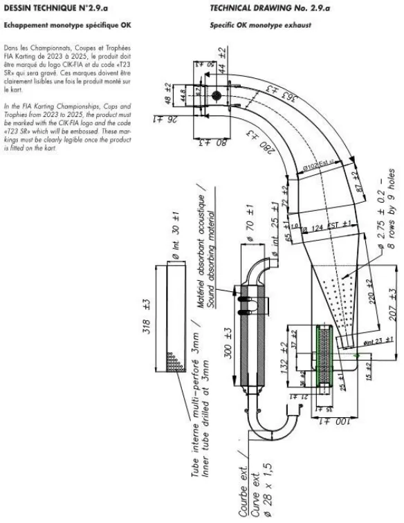
は１回路のみとし、冷却は単一回路の１つの自由なラジエターに制限され、いかなる他の組合せも除外される。サーモスタットの正常な機能のために内部回路を付加することは認められる。３．CIK-FIA KARTING TECHNICAL DRAWING No,2.8
に合致し、エンジンとともに公認された特定の単一型パワーバルブ。４．過給は禁止する。５．CIK-FIA KARTING TECHNICAL APPENDIX 2 によ
る測定方法により計測した容量から「プラグインサート」容量（2 ㏄）を引いた燃焼室の最小容積は9ｃｃ以上とする。スパーク・プラグ：銘柄は自由（量産品で厳密の当初のままとする）。シリンダーヘッド上に締め込まれたスパーク・プラグのバレル（電極は含まない）は、燃焼室ドームの上部を超えてはならない。６．排気角度は排気ポートで最大194°とし、その測定は
14．吸気消音CIK-FIA 公認の23ｍｍもダクトを2 本備えた吸気消音機。ただし、CIK-FIA 公認有効期間が満了した後、さらに 2年間は使用可能とする。15．エンジンオイル使用できるガソリン混合用オイルは、CIK-FIA AGREED LUBIRICANTS FOR 2026 に記載される承認オイルに限る。またその混合比は 4%とする。16．登録可能数シャシー：1 台 / エンジン：2 基17．最低重量150kg(ドライバー含む) / カートの最低重量(燃料除く)70kg 18．タイヤVEGA(DRY:XH4/WET:W6) ※追加導風ダクトは禁止とする（ただし、ブレーキダクトは
CIK-FIA KARTING TECHNICAL APPENDIX 3-1 に記載されている方法に従い、ライナーのレベルで行われる。７．デコンプレッションバルブが義務付けられる。それは、
シリンダーヘッド頂部に装着されなければならない。８．スパーク・プラグハウジングのねじ山の寸法－長さ：
18.5ｍｍ；ピッチ：Ｍ14×1.25 ９．最大16，000ｒｐｍの指定リミッター付き公認点火装置。
ただし、CIK-FIA 公認有効期間が満了した後、さらに 2年間は使用可能とする。10．クラッチは認められない。11．スターターは認められない。12．キャブレター１) 最大直径24ｍｍのCIK-FIA 公認バタフライキャブレタ
ー。ただし、CIK-FIA 公認有効期間が満了した後、さらに2年間は使用可能とする。
認める）。
P.14※ CIK-FIA KARTING TECHNICAL REGULATION
9.11.2(和訳)公認エンジンの当初の部品は、常に公認書に記載される写真、図面、材質、物理的寸法と合致し、同一でなければならない。許される改造：以下を除き公認エンジンへのすべての改造が認められる。
ａ）エンジン内部：
－ストローク－ボア（最大限度を超えて）－コネクティングロッド中心線－シリンダーおよびクランクケースのトランスファー
ダクトおよび吸気ポートの数－排気ポートおよびダクトの数－リードバルブボックス(寸法と図面) －クランクケースおよび/またはシリンダー、ただしそ
れらのクランクシャフトベアリングおよびアッタチメント(ドリル穴、ダボ) －スリーブの表面加工｛化学処理（コーティング等）、
メッキ処理等｝ －特別規定に基づく制約事項は尊重される。ｂ）エンジン外部：ホモロゲーションエンジンの全ての
外装の改造は認められる。ただし、以下のものは除外する。－キャブレターの数(公認されたキャブレター1 個の
使用が義務づけられる) －搭載エンジンの外観(以下のものは、外観の改造とは
みなされない)・冷却コネクションのトリミングおよび固定部の変更
（キャブレター・イグニッション・排気装置、クラッチあるいはエンジンそれ自体の固定を含む）・パーツ色の変更ただし、それらの公認された位置が変更されていないこと。２ ボディワーク
昨年から引き続く国際情勢の影響を受けた国際物流状況を鑑み、ＯＫ部門、ＦＳ－１２５部門、ＦＰ－３部門、ジュニア部門に適用されるボディワークについて、以下の通りとする。（１）ＣＩＫ－ＦＩＡ一般規定４．１の２．３．３／ＣＩＫ
－ＦＩＡ特別規定４．２の３１ ① すべてのＣＩＫ－ＦＩＡ選手権、カップおよびトロフ
ィー（スーパーカートを除く）では、公認されたフロントフェアリング、および２０１５年～２０２１年または２０１８－２０２１、２０２２－２０２４または２０２５－２０２７の公認期間の車体で公認されたフロントフェアリング取付キットの使用が義務付けられ
る。②予選ヒートからファイナルまでの間に、各ドライバーは、カートから外されたフロントフェアリングの組み立てエリアである「スタート」サービスパーク（※指定されたエリア）に入らなければならない。メカニックあるいはドライバー自身が、車検員（※技術委員）の監督下にある組み立てエリアである「スタート」サービスパーク（※指定されたエリア）にてフロントフェアリングを装着しなければならない。③予選ヒート、およびファイナルの間、フロントフェアリングは、修理エリア（※ピットエリア）においてのみ正しい位置に装着することのみ認められる。④正しいフロントフェアリングの装着フロントフェアリング（フロントフェアリング取付キットを使用）は競技の間常に正確な位置になければならない。⑤黒地にオレンジ色の円のついた旗は、フロントフェアリングが正確な位置にもはやない状態である場合、当該ドライバーに提示されることはない。⑥黒白のチェッカーフラッグが振られており、審判員がカートのフロントフェアリングが正確な位置にない１台もしくはそれ以上のカートがフィニッシュラインを通過したことを報告する場合、（※車検場または車両保管場所における確認結果を報告する場合）いかなる状況においても、５秒のタイムペナルティーが当該ドライバー（含複数）に課される。このタイムペナルティーを抗議の対象とすることはできない。⑦最終ラップ中あるいは黒白のチェッカーフラッグが振られた後に、ドライバーが正確に装着されていないフロントフェアリングを故意に正確な位置に戻したとされた／証明された場合、当該ドライバーはレース失格の処分を受ける。⑧「最終ラップ」のパネルがドライバーに対して示された（※合図または提示）時点から、修理エリア（※ピットエリア）は閉鎖される。⑨フロントフェアリングが規定に適合しているかを検査するため、RAE Systems 社（ＵＳＡ）のミニレイ・ライト（MiniRAE Lite）計測装置が、予選、予選ヒートおよびファイナルで使用される（※使用される場合がある）。いかなる状況においても、フロントフェアリングのＶＯ Ｃ（揮発性有機化合物）測定値は５ｐｐｍ（最大制限値）を超えてはならない。注：例えば清掃スプレーなどによる、フロントフェアリングの汚染は、これによって制限値の超過に成り得る場合があるため、避けなければならない。⑩検査の結果、フロントフェアリングが規定に適合していないことが判明した場合、当該ドライバーは組み立てエリア（※指定されたエリア）に入ることは禁止される。
P.15従って、対応する競技部分に（予選、予選ヒート、ファイナル）に参加することはできない。この手続きに関する抗議は受け付けられない。この点に関する抗議および控訴は停止効力を持たない。（２）２０２６年ＣＩＫ－ＦＩＡ国際カート技術規則９．４．
１ ①フロントバンパーは少なくとも２つの鋼鉄製の部品で
構成されていなくてはならない。②上部の鋼鉄製バーの直径は最小１６ｍｍ（２つのコーナ
ーは一つの一定の湾曲度でなければならない）、下部の鋼鉄製バーの直径は最小２０ｍｍ（２つのコーナーは一つの一定の湾曲度でなければならない）で、上下のバーは連結されていること。③上記の２つの部品は、ペダルの付属装置から独立してい
ること。④フロントバンパーは、必備であるフロントフェアリング
の取り付けが可能な形状であること。⑤フロントバンパーは、４点でシャシーフレームに取り付
けられていなければならない。⑥上記②の２つの部品は、技術図面Ｎｏ．２．２に示すと
おり、垂直に配されなければならず、フロアトレイ／メインシャシー軸に対して直角でなければならない。⑦フロントオーバーハング：最小３５０ｍｍ ⑧下部バーの幅：直線部全長でカートの縦軸に対して最小
２９５ｍｍ、最大３１５ｍｍ ⑨下部バーの取付部品は、シャシーの軸に対して平行で
（水平・垂直方向に）、バンパーを５０ｍｍ取り付けられる（シャシーフレームへの取付装置システム）形状であること。⑩取付部品は互いに４５０ｍｍ離し、地上から９０＋／－
２０ｍｍの高さでカートの縦軸の中心に取り付ける。⑪上部バーの幅：直線部全長でカートの縦軸に対して最小
３７５ｍｍ、最大３９５ｍｍ ⑫上部バーの高さは、地上から２００ｍｍ～２５０ｍｍと
する。⑬上部バーの取付部品は、互いに５５０ｍｍ離し、カート
の縦軸の中心に取り付ける。⑭上下バーの取付部品は、シャシーフレームに溶接されて
なくてはならない。
＜技術図面Ｎｏ．２．０＞
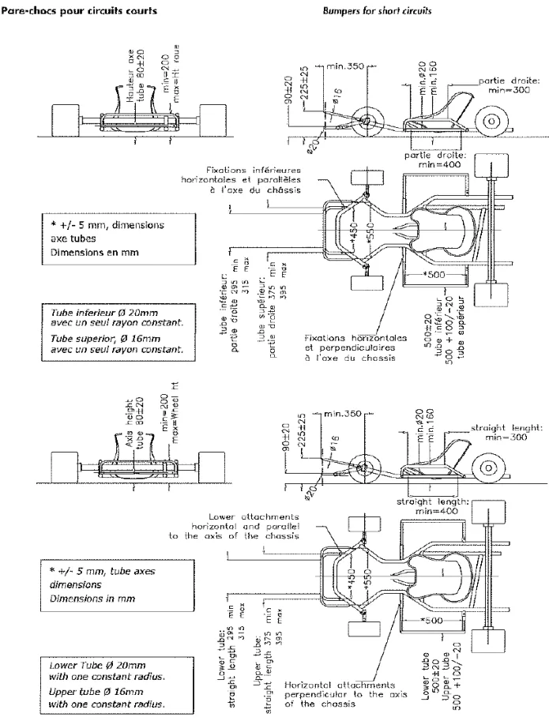
（３）フロントフェアリング(Ｆフェアリング)とフロントバンパー(Ｆバンパー)とフロントフェアリング取付キット(Ｆフェアリング取付キット)の組み合わせは、ＦフェアリングとＦバンパーの公認番号(２０１５－２０ ２１、２０１８－２０２１、２０２２－２０２４または２０２５－２０２７)が異なる組み合わせが認められる。但し、形状・寸法に変更の無い同等公認番号部品に限る。＜組み合わせ例＞ －認められる：Ｆフェアリング（KG 2/CA/20）＋Ｆバンパー（KG 2/CA/20）＋Ｆフェアリング取付キット（KG 1/CA/20 01/01/ET ・003/BK/01またはRighetti Ridolfi 005-BK-99）－認められる：Ｆフェアリング（KG 003/BF/99）＋Ｆバンパー（KG 003/BF/99）＋Ｆフェアリング取付キット（KG 1/CA/20 01/01/ET・003/BK/01またはRighetti Ridolfi 005-BK-99）－認められる：Ｆフェアリング（Eurostar 50/CA/20）＋ Ｆバンパー（Eurostar 50/CA/20）＋Ｆフェアリング取付キット（KG 1/CA/20 01/ 01/ET・003/BK/01 またはRighetti Ridolfi 005-BK-99）－認められる：Ｆフェアリング（Eurostar 017/BF/60）＋
P.16Ｆバンパー（Eurostar 017/BF/60）＋Ｆフェアリング取付キット（KG 1/CA/20 01/ 01/ET・003/BK/01 またはRighetti Ridolfi
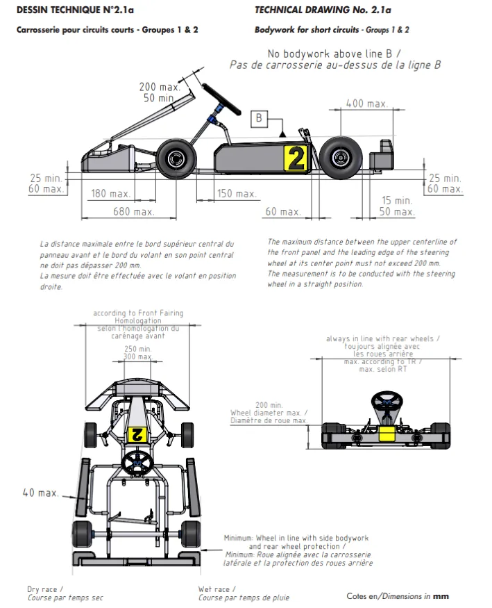
005-BK-99）－認められる：Ｆフェアリング（CRG 72/CA/20）＋Ｆバ
ンパー（CRG 72/CA/20）＋Ｆフェアリング取付キット（KG 1/CA/20 01/01/ET・003/BK/01またはRighetti Ridolfi 005-BK-99）－認められる：Ｆフェアリング（CRG 002/BF/37）＋Ｆバ
ンパー（CRG 002/BF/37）＋Ｆフェアリング取付キット（KG 1/CA/20 01/01/ET・003/BK/01またはRighetti Ridolfi 005-BK-99）－認められる：Ｆフェアリング（OTK 100/CA/20）＋Ｆバ
ンパー（OTK 100 /CA/20）＋Ｆフェアリング取付キット（KG 1/CA/20 01/01/ET・003/BK/01またはRighetti Ridolfi 005-BK-99) －認められる：Ｆフェアリング（OTK 012/BF/10）＋Ｆバ
ンパー（OTK 012/BF/10）＋Ｆフェアリング取付キット（KG 1/CA/20 01/01/ET・003/BK/01またはRighetti Ridolfi 005-BK-99)
以上
全日本カート選手権ＦＳ－１２５部門適用車両規定１ エンジン（１）ＩＡＭＥ社国内正規輸入元により輸入され、エンジン・
※チェーンはタイプ219 を使用しなければならない。※導風ダクトは禁止とする（ただし、ブレーキダクトは認
める）。※なお、本適用車両規則について、ＪＡＦは年度途中においても事前予告をもって変更する権利を留保する。（４）リアプロテクション リアプロテクションについては、CIK-FIA KARTING
シリアル番号が登録された日本仕様のＩＡＭＥ ＰＡ ＲＩＬＬＡ Ｘ３０のみの使用とし、一切の変更・改造は禁止される。また、全ての部品、取付は工場出荷時の状態から変更は認められない。別紙 X30 125cc RL-C TAG エンジン仕様書に準じ、本FS-125 適用車両規定に定める。（２）エンジン・シリアル番号M3521/B3059 以前のエンジ
TECHNICAL REGULATIONS「4.11 Rear wheel protection」を参照すること。
ンに刻印の有るシリンダーを使用する事は出来るが、M3521/B3059 以降のエンジンに刻印の無いシリンダーを使用する事は出来ない。（３）シリンダーガスケットはⅩ３０純正品の下記の部品番号に限る。シリンダーG/K 部品番号EBP-125045 ０．４mmシリンダーG/K 部品番号EBP-125046 ０．２mmシリンダーG/K 部品番号EBP-125047 ０．１mm （４）リードペダルはメーカー純正グラスファイバー製0.3 ｍｍ（部品番号X3011840）あるいはメーカー純正オプションＣＦＲＰ製0.24 ㎜（部品番号F-11840-C）のみの使用に限る。グラスファイバー製とＣＦＲＰ製を混ぜて使用する事は認められない。
P.17改造は一切認めない。３ マフラー（１）使用できる純正マフラー（マフラーキャップを含む）
（５）クラッチガード、クラッチドラム、クラッチシュー、
クラッチベアリング、クラッチオーリングはＸ３０純正部品の下記の部品番号の使用に限る。
クラッチガード X30125595クラッチドラム X30125550Aクラッチベアリング B-55598クラッチオーリング A-60565クラッチシュー X30125840 またはX30125841スターターギア X30125830 またはX30125831クラッチは、組付け後、油脂類は速やかに除去され、またいかなる物も塗布、付加等は禁止する。（６）ドライブスプロケットは＃２１９チェーンサイズ用の
及び取付属品は、下記の部品番号製品のみとする。ワンピースマフラー 部品番号X30125715エキゾストマニホールド 部品番号X30125370エキゾストスペーサー 部品番号X30125375エキゾストスタットボルト 部品番号X30125355 ※エキゾストスペーサーの使用数は１枚、エキゾー
ズトガスケットは純正品を２枚、装備を義務とする。（２）マフラーキャップはＩＡＭＥ刻印のあるものとし、改
みの使用に限る。（７）メーカー純正以外で使用できる部品は以下の通りとす
造は認められない。（３）メーカー純正以外で使用できる部品は以下の通りとす
る。
る。
エキゾーストスプリング（４）排気温センサー取り付けのための加工は認める。４ 燃焼室 全日本カート選手権ＯＫ部門適用車両規定の５項による
オイルシール（工場出荷時と同方向にて取付ける事。開口部がクランクケース側であること）、ドライブスプロケット、スモールエンドベアリング、ビッグエンドベアリング、サークリップ、ケースベアリング、バランスシャフトベアリング6005 C3/C4、6202 C3/C4/C4H、ボルト、ナット、ワッシャー、コンロッドワッシャー但し、ケースベアリングは単列深溝玉軸受ボールベアリング6206 番台の開放形（銘柄は自由とする）、あるいは、IAME 純正ローラーベアリング、部品番号X30125397（BC1-3342B）とする。（ボールベアリングとローラーベアリングの混在使用は禁止。）２ 吸気系統（１）キャブレターはＸ３０純正部品のTryton HB27C（ベ
測定方法により計測した容量から「プラグインサート」容量（２㏄）を引いた燃焼室の最小容積は7.7 ㏄以上とする。スキッシュは０．９ｍｍ以上とする。測定方法はプラグホールから１．５ｍｍのハンダを挿入しシリンダー面に直角方向にセットしクランクシャフトを１回転させ潰れたハンダの厚みを計測。５ ラジエターパーツ（１）ラジエター本体と取付ステーは以下のものに限る。Ｘ３０ラジエター
・４１０ｍｍ×１９８ｍｍ（部品番号T-8000B）・４１０ｍｍ×２３０ｍｍ（部品番号T-8001）
ンチューリーの最大直径２６ｍｍ以下）またはTillotson HW27A（ベンチューリー最大直径２７ｍｍ以下）の使用を可能とし、メタルダイアフラム、ポンプダイアフラム、ダイアフラムガスケット、インレットニードル＆ガスケット、メタリングレバーピン、ストレーナカバー、ストレーナカバーガスケット、ストレーナスクリーン、ニードルスクリューＯリング、キャブレター・ガスケットは純正品であること。改造は一切認められない。（２）メーカー純正以外で使用できる部品は以下の通りとす
Ｘ３０標準ラジエターサポートＫＩＴ
（部品番号T-8135-C）、（部品番号T-8136-C）※但し、補助ステー（下図②）およびフレーム本体への取付ステー（下図③）は銘柄を自由とする。
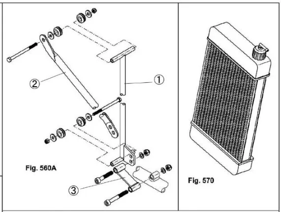
る。
メタリングレバー、インレットスプリング（３）インレットサイレンサー：
エンジンと一緒に供給されているオリジナル純正品とし、部品番号X30125740 のエアーフィルターを備えたゴム製マニホールドは必備とする。直径22ｍｍのダクトを2 つ備えた吸気消音器。※22ｍｍのダクトに取り付けるネットの着脱は自由。
P.18（２）ウォーターポンプ、プーリーはメーカー純正部品の使
全日本カート選手権ＦＰ－３部門適用車両規定１ エンジンは日本国内仕様のＫＴ１００ＳＥＣとし、改造
用に限る。（３）サーモスタットは純正部品の使用に限る。（４）サーモスタットの着脱は自由とする。（５）メーカー純正以外で使用できる部品は以下の通りとす
は一切禁止され市販状態とする。但し、カーボンの除去やキズ修正は研磨とみなされない限りの範囲で認められる。
る。
型式は、7YU型に限られる。２ エンジン改造禁止対象部品
ラジエターホース、ウォーターポンプベルト（Ｏリング）、ウォーターポンプインナーパーツ（オイルシール、ベアリング）６ 電気系統（１）メーカー純正のSELETTRA Digital-S のみの使用とす
シリンダーヘッド、シリンダーボディー、シリンダーヘッドガスケット、シリンダーガスケット、ピストンピン、ピストンピンクリップ、コンロッド、ベアリング類、クランク、クランクピン、オイルシール、クランクケース、ピストン、ピストンリング、プラグコードクラッチは、組付け後、油脂類は速やかに除去され、またいかなる物の塗布、付加等は禁止する。（１）コンロッドは下記パーツＮｏ.の物に限る。
る。改造は一切禁止する。（２）コントロールユニットは、Digital-S の場合回転数リミ
ット16,000rpm の（部品番号X30125933-C）を使用しなくてはならない。（３）バッテリーの搭載方法はシャシーフレームの周辺、ま
たはフロアに設置する。（４）バッテリーボックスは銘柄自由。（５）バッテリー搭載クランプはしっかり固定できるもので
7F6-11651-00、7F6-11651-01、7F6-11651-02 （２）ボアサイズは５２．６１ｍｍまで可とし、ピストン及
あれば銘柄自由。（６）プラグは一般市販状態のネジ山長１９ｍｍ以下のもの
びリングのオーバーサイズ純正品への変更が認められる。（３）ピストンはＫＴ１００ＦＰ用（7YG）、ＫＴ１００Ｓ
に限る。プラグワッシャーも含めて市販状態とし、ネジ山長の変更禁止。（７）以下の電装パーツはＸ３０純正部品のみの使用に限る。
Ｐ用（J67）の使用が認められる。（４）シリンダーボディーは側面に、縦１０ｍｍ横１６ｍｍ
部品番号
の座及びドライブ側に「7ET」、マグネット側に「Y3」または「Y4」の浮き文字がある物とする。（５）スキッシュエリアの規定
①ワイヤーハーネス
IFE-05003A ②イグニッションＳＥＬＥＴＴＲＡ
シリンダーヘッドガスケットはヤマハ純正品： 7ET-11181-10またはＳＬＯ調整用ガスケット、銅製で０．０５ｍｍ厚、０．１ｍｍ厚、０．２ｍｍ厚の３種いずれかを使用。枚数や厚みの規定はないが、φ３．０ｍｍ以上のハンダを使用し、ドライブ側と電気側の両サイドのスキッシュエリア数値２ヶ所を計測し、その潰れた数値（ハンダの厚み）の合計が４．５ｍｍ以上であること。（６）シリンダーヘッドはＹＡＭＡＨＡの浮き文字があり、
X30125953
プラグは下記のみの使用に限る。日本特殊陶業株式会社（NGK）製・B9EG – B10EG – BR9EG – BR10EG –
BR9EIX – BR10EIX – R6252K-105 – R6254E-105 （８）メーカー純正以外で使用できる部品は以下の通りとす
る。
改造防止のフライス加工を追加した物に限る。（７）クランクケースは7YU打刻のものに限られる。但し、
バッテリー、プラグキャップ、コイルアースケーブル７ 最低重量：１５５ｋｇ ８ ボディワーク
部品販売品については同仕様のものとする。（８）クランクシャフトはＫＴ用（7YA・7YB・7YT・7YP）とＫＴ１００ＦＰ用（7YG）およびＫＴ１００ＳＰ用（J67）のみとする。ＫＴ用、ＳＰ用のクランクシャフト大端ベアリングおよびクランクサイドベアリングの使用が認められる。《使用可能部品》クランク2： J67-11422-00,7YP-11422-00,7YP-11422-01クランクシャフトアセンブリ：
ＯＫ部門適用車両規定の２ボディワークを適用する。
※導風ダクトは禁止とする（ただし、ブレーキダクトは認
める）。
以上
P.19J67-11400-00,7YP-11400-00,7YP- 11400-01 （９）クランクは大端規制方式に限る。（１０）オイルシールは、クランクケース面より１ｍｍ以上
４ 点火系統
改造は一切禁止され市販状態とする。点火方式はTCIとし7ET-85510-01（ステーターとTCIユニットが一体式）に限る。
内側に入り込んでいないこと。（１１）クラッチボディの外径は81.5㎜以上とする。測定に
※Tマーク/Eマークのある面は製造時に寸法精度維持の為、表面加工を行い出荷されている場合がある。５ 排気系統改造禁止部品
ついては、シュー残量が一番多い部分からクラッチボディの中心を通り、対角側シューへの寸法を3箇所計測し、3箇所全て81.5㎜以上でなくてはならない。
マフラー本体は CIKまたはJAFの刻印がある7YA 型と
する。マフラーコンプリート(7YA-14701-00-98または7YA-14701-10)・サイレンサーアセンブリー(7YA-14750-09)の組合せとし、改造は一切禁止され市販状態とする。エキゾーストパイプは7YT-14610-00または7YU-14610-00。溶接、加工の入ったものは使用禁止とする。また、排気センサーの取付けは可。センサーを取り付けるための溶接は認められる。その他ジョイントエキゾースト(ジャバラ)本体の内径に変化のあるものは禁止する。ジョイントエキゾースト（ジャバラ）に消音や保護のためのプロテクターや保護材の取り付けは認められる。なお、エギゾーストガスケット及びジャバラは純正部品以外の使用が認められる。６ プラグは一般市販状態のネジ山長１９ｍｍ以下のものに
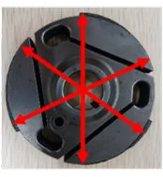
３ 吸気系統改造禁止対象部品
キャブレターアッセンブリ、キャブレターガスケット、ジョイントキャブレター、マニホールド、ジョイントエアクリーナー（１）キャブレターはWB3A、WB21またはWB33でなけれ
ばならず改造は一切禁止される。また、チョークレバーを取り外し、穴を埋めることは認められる。但し、キャブレター部品について相互交換及びヤマハ純正部品との交換は認められる。（２）ヤマハ純正吸気消音器７YA-14410-01を必備とする
限る。プラグワッシャーも含めて市販状態とし、ネジ山長の変更禁止。７ その他
（取付部品を含む）。 ［参考］取付部寸法（３）ジョイントキャブレター、マニホールド、ジョイント
純正部品以外の使用が認められる物は以下の通り。
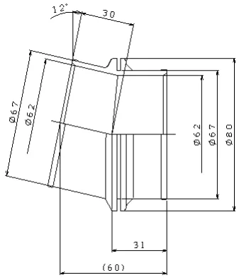
プラグ、エギゾーストジョイント（ジャバラ）、エギゾーストガスケット、ボルト／ナット（キャブレターインレット部品を除く）、ワッシャー、スプリング、キー（ローターキー除く）ブラケット、ワイヤー、ホース、ホースクリップ、バンド※導風ダクトは禁止とする（ただし、ブレーキダクトは認める）。８ 最低重量：１５０ｋｇ ９ ボディワーク
エアクリーナーは下記の部品番号の物とし、改造は一切禁止される。ジョイントキャブレター
全日本カート選手権ＯＫ部門適用車両規定の２ボディワークを適用する。※なお、本適用車両規則について、ＪＡＦは年度途中におい
（黒色：787-13586-01、787-13586-02）公差±０．５ｍｍマニホールド 7YA-13585-00ジョイントエアクリーナー 7YF-14453-03
ても事前予告をもって変更する権利を留保する。
以上
P.20フロントフェアリング取付キットを使用してフェアリングをカートに取り付けることのみが認められる。他の手段は認められない。フロントフェアリングは、自由にシャシーの方向へ後退できなければならず、その動きを制限するような部品による妨げがあってもならない。
２０２６年ＪＡＦ国内カート競技車両規則（抜粋）第２章 一般規定第７条 バンパー５．リアプロテクション １３）如何なる状況下においても、リアプロテクションは、
フロントバンパー（上下パイプ）はシャシーに強固に結合され、表面が平坦でなければならない。フロントバンパーの摩擦を最大化するようないかなる機械加工やその他の作業は厳重に禁止される。
リアホイール水平面からはみ出してはならない。
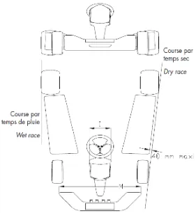
フロントバンパー（上下パイプ）とフロントフェアリングの間隔は、如何なる時も全ての箇所において最少２７ｍｍなければならない。フロントフェアリング取付キットの定義
１．フロントフェアリング用取付具一式（２点＋８本のネジ）２．フロントバンパーサポート（２つのハーフシェル＋２本のネジ）３．調整可能なフッククランプ（２点、金属製のこと）下記の各部品にCIKロゴおよび公認番号の浮き彫りがある
２０１５－２０２１／２０１８－２０２１／
２０２２－２０２４／２０２５－２０２７
ＣＩＫ－ＦＩＡ公認フロントフェアリング取り付け方式
こと。１．フロントフェアリング用取付具一式（２点はプラスチック製のこと）２．フロントバンパーサポート（２つのハーフシェルはプラスチック製のこと）＜技術図面Ｎｏ.２．２．１＞
＜技術図面Ｎｏ．２．２＞
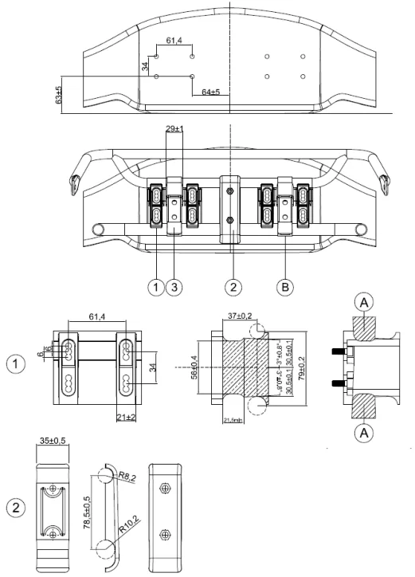
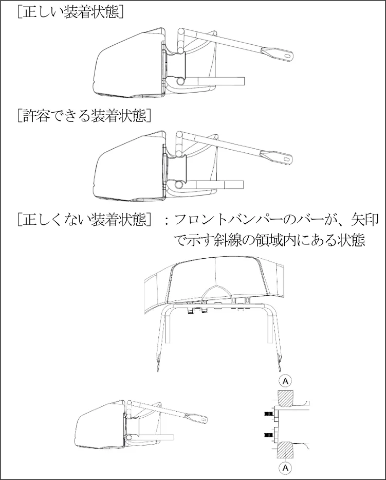
Ａ…この領域にはいかなる部品も（例えばネジであっても）許されない。
Ｂ…フッククランプは工具を用いることなく手で開け閉めできること 。
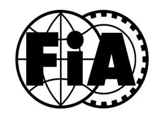
COMMISSION INTERNATIONALE DE KARTING - FIA
LISTE TECHNIQUE - HOMOLOGATION MOTEURS, CARBURATEURS, ALLUMAGES & SILENCIEUX D'ASPIRATION (Groupes 2 & 3) TECHNICAL LIST - ENGINES, CARBURETTORS, IGNITION & INTAKE SILENCERS HOMOLOGATION (Groups 2 & 3)
2026-2028
| Demandeur | Pays | Matériel | Marque | Modèle | Type | N° Homolog. |
|---|---|---|---|---|---|---|
| Applicant | ASN | Equipment | Make | Model | Type | Homolog. No. |
| ASPA Srl | ITA | Engine | Modena Engines | ME-K | OK | 032-ES-17 |
| ASPA Srl | ITA | Engine | Modena Engines | ME-KJ | OK-Junior | 032-EJ-52 |
| ASPA Srl | ITA | Engine | Modena Engines | KK3 | KZ/KZ2 | 032-EZ-01 |
| Dell'Orto SpA | ITA | Carburetor | Dell'Orto | PHDG 18 - 09854 | Group 3 | 054-CA-15 |
| Dell'Orto SpA | ITA | Carburetor | Dell'Orto | PHDG 18 - 09860 | Group 3 | 054-CA-25 |
| Dell'Orto SpA | ITA | Carburetor | Dell'Orto | PHBG 15 BS | Mini-XS | 054-CA-99 |
| ELTO Racing Srl | ITA | Exhaust Silencer | ELTO Racing | TD3 | KZ / KZ2 | 039-SE-24 |
| IAME SpA - SU | ITA | Engine | IAME | R 125 K | Group 2 | 040-ES-01 |
| IAME SpA - SU | ITA | Engine | IAME | R 125 KJ | Group 2 | 040-EJ-05 |
| IAME SpA - SU | ITA | Engine | IAME | R 125 Z | Group 2 | 040-EZ-10 |
| IAME SpA - SU | ITA | Engine | IAME | R 60 | Group 3 | 040-EM-60 |
| IAME SpA - SU | ITA | Engine | IAME | Reedster 5 Junior | OK-Junior | 040-EJ-87 |
| IAME SpA - SU | ITA | Engine | IAME | GR-3 | MINI | 040-EM-12 |
| IAME SpA - SU | ITA | Engine | IAME | Reedster 5 | OK | 040-ES-66 |
| IAME SpA - SU | ITA | Engine | IAME | Screamer 4 | KZ / KZ2 | 040-EZ-99 |
| Karlheinz Hahn | DEU | Carburetor | HHC Carburetors | Tutu 20 mm | OK-Junior | 035-CA-26 |
| Karlheinz Hahn | DEU | Carburetor | HHC Carburetors | Tutu 24 mm | OK | 035-CA-82 |
| Karlheinz Hahn | DEU | Engine | Rexon Motors | Primaballerina Junior | OK-Junior | 035-EJ-62 |
| Karlheinz Hahn | DEU | Engine | Rexon Motors | Primaballerina | OK | 035-ES-17 |
| Karlheinz Hahn | DEU | Carburetor | HHC Carburetors | OK-N 01 24mm | OK-N | 035-CA-99 |
| KG Sas | ITA | Intake Silencer | KG | Booster 23 | Group 2 | 003-SI-50 |
| KG Sas | ITA | Intake Silencer | KG | Booster 30 | Group 2 | 003-SI-52 |
| KG Sas | ITA | Intake Silencer | KG | Power 30 | KZ1 / KZ2 (30 mm) | 003-SI-30 |
| KG Sas | ITA | Intake Silencer | KG | Power 23 Base | OK / OK-Junior | 003-SI-01 |
| KG Sas | ITA | Intake Silencer | KG | Tornado | Mini | 003-SI-11 |
| KG Sas | ITA | Intake Silencer | KG | Power 23 | OK / OK-Junior (23 mm) | 003-SI-23 |
| KG Sas | ITA | Intake Silencer | KG | Shark | Mini | 003-SI-78 |
| KG Sas | ITA | Intake Silencer | KG | Power 30 Base | KZ / KZ2 | 003-SI-99 |
| Lenzokart Srl | ITA | Engine | LKE | REV 1 KZ | Group 2 | 033-EZ-20 |
| Lenzokart Srl | ITA | Engine | LKE | REV 1 OKJ | Group 2 | 033-EJ-70 |
| Lenzokart Srl | ITA | Engine | LKE | REV 1 OK | Group 2 | 033-ES-90 |
| Lenzokart Srl | ITA | Engine | LKE | REV 1 MINI | Group 3 | 033-EM-30 |
| Lenzokart Srl | ITA | Engine | LKE | R16 | MINI | 033-EM-01 |
| Lenzokart Srl | ITA | Intake Silencer | LKE | K5 | Group 3 | 033-SI-50 |
| Motori Seven | ITA | Engine | Motori Seven | L11 | Group 2 | 058-EZ-05 |
| OTK Kart Group Srl | ITA | Engine | Vortex | VMS | Group 2 | 012-ES-05 |
| OTK Kart Group Srl | ITA | Engine | Vortex | VMJ | Group 2 | 012-EJ-07 |
| OTK Kart Group Srl | ITA | Engine | Vortex | VMZ | Group 2 | 012-EZ-75 |
| OTK Kart Group Srl | ITA | Engine | Vortex | DDJ | Group 2 | 012-EJ-19 |
| OTK Kart Group Srl | ITA | Carburetor | IBEA | E1 (OK-J) | Group 2 | 012-CA-81 |
| OTK Kart Group Srl | ITA | Carburetor | IBEA | E2 (OK) | Group 2 | 012-CA-92 |
| OTK Kart Group Srl | ITA | Carburetor | IBEA | E3 (OK-N) | Group 2 | 012-CA-35 |
| OTK Kart Group Srl | ITA | Engine | Vortex | RSZ | KZ1 / KZ2 | 012-EZ-76 |
| OTK Kart Group Srl | ITA | Engine | Vortex | VTJ | OK-Junior | 012-EJ-29 |
| OTK Kart Group Srl | ITA | Engine | Vortex | DJT | OK-Junior | 012-EJ-92 |
| OTK Kart Group Srl | ITA | Engine | Vortex | VTM | MINI | 012-EM-90 |
| OTK Kart Group Srl | ITA | Engine | Vortex | MINI FR | MINI | 012-EM-99 |
| OTK Kart Group Srl | ITA | Engine | Vortex | VTS | OK | 012-ES-11 |
| OTK Kart Group Srl | ITA | Engine | Vortex | VTZ | KZ / KZ2 | 012-EZ-01 |
| OTK Kart Group Srl | ITA | Engine | Vortex | RTZ | KZ1 / KZ2 | 012-EZ-25 |
| OTK Kart Group Srl *** | ITA | Carburetor | IBEA | F6 | OK-Junior | 037-CA-42 |
| PVL Electronic & Electrotechnik GmbH | DEU | Ignition | PVL | 660 | MINI | 036-IG-35 |
| PVL Electronic & Electrotechnik GmbH | DEU | Ignition | PVL | 684 | OK-Junior | 036-IG-84 |
| PVL Electronic & Electrotechnik GmbH | DEU | Ignition | PVL | 684 | OK | 036-IG-74 |
| PVL Electronic & Electrotechnik GmbH | DEU | Ignition | PVL | 458 | KZ1 / KZ2 | 036-IG-27 |
| PVL Electronic & Electrotechnik GmbH | DEU | Ignition | PVL | 684/N | OK-N | 036-IG-99 |
| Righetti Ridolfi Srl | ITA | Intake Silencer | Righetti Ridolfi | Active | 23 | 005-SI-33 |
| Righetti Ridolfi Srl | ITA | Intake Silencer | Righetti Ridolfi | NOX2-30 | 30 | 005-SI-26 |
| Righetti Ridolfi Srl | ITA | Intake Silencer | Righetti Ridolfi | Active | 30 | 005-SI-67 |
| Righetti Ridolfi Srl | ITA | Intake Silencer | Righetti Ridolfi | NOX2-23 | 23 | 005-SI-86 |
| Righetti Ridolfi Srl | ITA | Intake Silencer | Righetti Ridolfi | Arge | Mini | 005-SI-01 |
| Selettra Srl | ITA | Ignition | Selettra | PF5959 | Mini | 034-IG-13 |
| Selettra Srl | ITA | Ignition | Selettra | A18N88 | KZ1 / KZ2 | 034-IG-14 |
| Selettra Srl | ITA | Ignition | Selettra | BF1885 | Mini-XS | 034-IG-01 |
| Selettra Srl | ITA | Ignition | Selettra | RC1885 | OK-N | 034-IG-30 |
| Selettra Srl | ITA | Ignition | Selettra | FM9019 | OK | 034-IG-19 |
| Selettra Srl | ITA | Ignition | Selettra | FF0420 | OK-Junior | 034-IG-20 |
| Tillotson LtD | IRL | Carburetor | HC | 121 | Group 2 | 042-CA-01 |
21.01.2026 23
| Tillotson LtD | IRL | Carburetor | HC | 122 | Group 2 | 042-CA-05 |
| Tillotson LtD | IRL | Carburetor | Tillotson | FM18-2 | Groupe 3 | 042-CA-07 |
| Tillotson LtD | IRL | Carburetor | Tillotson | HW52 | Group 2 | 042-CA-21 |
| Tillotson LtD | IRL | Carburetor | Tillotson | FM15 | Mini - XS | 042-CA-50 |
| TM KART Srl | ITA | Engine | TM Kart | KZ-R3 | Group 2 | 041-EZ-60 |
| TM KART Srl | ITA | Engine | TM Kart | Mini 4B | Group 3 | 041-EM-10 |
| TM KART Srl | ITA | Engine | TM Kart | Mini 4 | Group 3 | 041-EM-12 |
| TM Racing SpA ** | ITA | Engine | TM Kart | S3-Junior | OK-Junior | 041-EJ-01 |
| TM Racing SpA ** | ITA | Engine | TM Kart | Mini 3 | Mini | 041-EM-04 |
| TM Racing SpA ** | ITA | Engine | TM Kart | Mini 3B | Mini | 041-EM-99 |
| TM Racing SpA ** | ITA | Engine | TM Kart | S3-Senior | OK | 041-ES-03 |
| TM Racing SpA ** | ITA | Engine | TM Kart | KZ-R2 | KZ/KZ2 | 041-EZ-02 |
| TM Racing SpA ** | ITA | Engine | TM Racing ** | KZ-R1 | KZ1 / KZ2 | 041-EZ-75 |
| Va.Mec Srl | ITA | Carburetor | TM Kart | S2 | Group 2 | 060-CA-80 |
| Va.Mec Srl | ITA | Carburetor | TM Kart | J2 | Group 2 | 060-CA-90 |
| Va.Mec Srl | ITA | Carburetor | TM Kart | J1 | OK-Junior | 060-CA-01 |
| Va.Mec Srl | ITA | Carburetor | TM Kart | S1 | OK | 060-CA-11 |
| Va.Mec Srl | ITA | Carburetor | TM Kart | N1 | OK-N | 060-CA-22 |
| VM Motor | CZE | Engine | VM | KZ1 / KZ2 | Group 2 | 031-EZ-05 |
| VM Motor | CZE | Engine | VM | OK-J | Group 2 | 031-EJ-20 |
** Modification of the make name TM Racing by TM Kart ** Modification of the name of the manufacturer TM Racing SPA by TM Kart Srl ** Modification du nom de la marque « TM Racing » par « TM Kart » ** Modification du nom du constructeur « TM Racing SPA » par « TM Kart Srl »
*** OTK Kart Group est le nouveau constructeur et détenteur de la marque des carburateurs IBEA. L'ancien constructeur IBEA a cessé toute activité. *** OTK Kart Group is the new manufacturer and brand holder of IBEA Carburettors. Former IBEA manufacturer has ceased all activity.
21.01.2026 24
LISTE TECHNIQUE - HOMOLOGATION CARROSSERIES, CHASSIS, FREINS BODYWORK, BRAKES, CHASSIS HOMOLOGATION - TECHNICAL LIST
2025-2027 (Groupe 2)
| Demandeur | Pays | Matériel | Marque | Modèle | Type | N° Homolog. |
|---|---|---|---|---|---|---|
| Applicant | ASN | Equipment | Make | Model | Type | Homolog. No. |
| AMV Racing Kart Snc | ITA | Brake | Filmax | FBK-02 | Group 2 - BRKR | 013-BRKR-02 |
| AMV Racing Kart Snc | ITA | Brake | Filmax | FBZ-03 | Group 2 - BRKF | 013-BRKF-03 ER01 |
| AMV Racing Kart Snc | ITA | Brake | AMV | SB-KZ | Group 2 - BRKF | 013-BRKF-12 |
| AMV Racing Kart Snc | ITA | Brake | AMV | SB-DD01 | Group 2 - BRKR | 013-BRKR-01 |
| AMV Racing Kart Snc | ITA | Chassis | Bestkart | F03 | Group 2 | 013-CH-20 |
| AMV Racing Kart Snc | ITA | Chassis | Bestkart | F01 | Group 2 | 013-CH-30 |
| Birel Art Srl | ITA | Bodywork | Freeline | Aero - Side Bodywork | Group 2 | 007-BS-20 |
| Birel Art Srl | ITA | Brake | Free Line | FL01-P | 2WP | 007-B2-26 |
| Birel Art Srl | ITA | Brake | Free Line | RR-DD | 2WP | 007-B2-44 |
| Birel Art Srl | ITA | Brake | Free Line | RR | 4WP | 007-B4-69 |
| Birel Art Srl | ITA | Brake | Free Line | FL RR EVO | BRKF | 007-BRKF-01 |
| Birel Art Srl | ITA | Chassis | Swiss Hutless | Performance | Group 2 | 007-CH-06 |
| Birel Art Srl | ITA | Chassis | Comp Kart | Covert 3.0 | Group 2 | 007-CH-08 |
| Birel Art Srl | ITA | Chassis | Birelart | RY 30 | Group 2 | 007-CH-10 |
| Birel Art Srl | ITA | Chassis | Birel Art | RY 32 | Group 2 | 007-CH-12 |
| Birel Art Srl | ITA | Chassis | Magik | MRK1 | Group 2 | 007-CH-60 |
| Breda Racing Srl | ITA | Chassis | KR | KR1 | Group 2 | 023-CH-07 |
| Breda Racing Srl | ITA | Chassis | KR | KR3 | Group 2 | 023-CH-47 |
| Breda Racing Srl | ITA | Chassis | KR | KR2 | Group 2 | 023-CH-98 |
| CM Industria | BRA | Brake | Kart Mini | FR-18 | 2WP | 028-B2-34 |
| CM Industria | BRA | Chassis | Kart Mini | M3 | Group 2 | 028-CH-76 |
| CRG Spa | ITA | Chassis | GP/ALU Group | GP Racing GP15 | All | 002-CH-11 |
| CRG Spa | ITA | Chassis | Kali Kart | KK04 | Group 2 | 002-CH-12 |
| CRG Spa | ITA | Chassis | CRG | KT4 | All | 002-CH-17 |
| CRG Spa | ITA | Chassis | Kali Kart | KK02 | All | 002-CH-54 |
| CRG Spa | ITA | Chassis | DR | S97 | Group 2 | 002-CH-66 |
| CRG Srl | ITA | Brake | CRG | Ven13 DD | 2WP | 002-B2-50 |
| CRG Srl | ITA | Brake | CRG | Ven13 KZ | 4WP | 002-B4-60 |
| CRG Srl | ITA | Brake | CRG | VEN11b | Group 2 | 002-BRKF-01 |
| CRG Srl | ITA | Brake | CRG | VEN11b | Group 2 | 002-BRKR-02 |
| CRG Srl | ITA | Chassis | CRG | Road Rebel | Group 2 | 002-CH-20 |
| CRG Srl | ITA | Chassis | Maranello | MK1 | Group 2 | 002-CH-21 |
| CRG Srl | ITA | Chassis | Maranello | MK3 | Group 2 | 002-CH-22 |
| CRG Srl | ITA | Chassis | Maranello | MK4 | Group 2 | 002-CH-23 |
| CRG Srl | ITA | Chassis | CRG | KT2 | Group 2 | 002-CH-24 |
| CRG Srl | ITA | Chassis | CRG | KT5 | Group 2 | 002-CH-25 |
| CRG Srl | ITA | Chassis | DR | M92 | Group 2 | 002-CH-26 |
| CRG Srl | ITA | Chassis | DR | J90 | Group 2 | 002-CH-28 |
| CRG Srl | ITA | Chassis | Monster Kart | Runner 30 | Group 2 | 002-CH-70 |
| CRG Srl | ITA | Chassis | Monster Kart | Diablo 32 | Group 2 | 002-CH-71 |
| DAM Srl | ITA | Chassis | ITALCORSE | IT20 | Group 2 | 001-CH-59 |
| DAM Srl | ITA | Chassis | ITALCORSE | IT21 | Group 2 | 001-CH-80 |
| EL.ZET spol s r.o. | SVK | Brake | EL.ZET | LZF09 | 2WP | 055-B2-10 |
| EL.ZET spol s r.o. | SVK | Brake | EL.ZET | LZF11 | 2WP | 055-B2-20 |
| EL.ZET spol s r.o. | SVK | Brake | EL.ZET | LZF12 | 4WP | 055-B4-30 |
| EL.ZET spol s r.o. | SVK | Brake | EL.ZET | LZF10 | 4WP | 055-B4-94 |
| Emme Racing SAS | ITA | Brake | Italfreno | F01 | 2WP | 009-B2-47 |
| Emme Racing SAS | ITA | Brake | Italfreno | Z02 | Group 2 | 009-BRKF-02 |
| Emme Racing SAS | ITA | Chassis | EKS | Condor Evo 2 | Group 2 | 009-CH-10 |
| Emme Racing SAS | ITA | Chassis | Croc Promotion | MC-01 | Group 2 | 009-CH-20 |
| Emme Racing SAS | ITA | Chassis | TK | Passion | Group 2 | 009-CH-33 |
| Emme Racing SAS | ITA | Chassis | Drago Corse | RM-01 | Group 2 | 009-CH-54 |
| Explorer Kart | CHN | Chassis | Explorer Kart | EB2 | Group 2 | 066-CH-01 |
| Filmax Service Srl | ITA | Chassis | New Drago | AF-25 | Group 2 | 068-CH-25 |
| G3 Kart Ind. Com. Imp. e Exp. Ltda | BRA | Chassis | ONS | Bravar | Group 2 | 059-CH-01 |
| Gpat Srls | ITA | Chassis | Pantano | P1 | Group 2 | 057-CH-10 |
| Gpat Srls | ITA | Chassis | Pantano | P2 | Group 2 | 057-CH-20 |
| Haase Srl | ITA | Brake | Runner | FR 22 - 2WP | 2WP | 014-B2-11 |
| Haase Srl | ITA | Brake | Runner | FR 22 - 4WP | 4WP | 014-B4-55 |
| Haase Srl | ITA | Chassis | Haase-Corsa | Karif - CH22 | Group 2 | 014-CH-22 |
| Hetschel GmbH & Co. KG | DEU | Brake | HRP | EvoX-R | 2WP | 025-B2-77 |
| Hetschel GmbH & Co. KG | DEU | Brake | HRP | EvoX-X | 4WP | 025-B4-17 |
| Hetschel GmbH & Co. KG | DEU | Chassis | Mach1 | Zelos | Group 2 | 025-CH-05 |
| Innovative Products for Karting Srl | ITA | Brake | IPK | RBS.V3 | 2WP | 006-B2-50 |
| Innovative Products for Karting Srl | ITA | Brake | IPK | STR.V2 | 4WP | 006-B4-45 |
| Innovative Products for Karting Srl | ITA | Brake | Tillotson | T4 | Group 2 - BRKF | 006-BRKR-04 |
| Innovative Products for Karting Srl | ITA | Chassis | IPK | Fighter | Group 2 | 006-CH-80 |
| Innovative Products for Karting Srl | ITA | Chassis | IPK | Dragon | Group 2 | 006-CH-90 |
| Innovative Products for Karting Srl | ITA | Chassis | Tillotson | T4 | Group 2 | 006-CH-09 |
| Intrepid Driver Program Srl | ITA | Brake | Intrepid | R8KZ | Group 2 - BRKF | 015-BRKF-08 |
| Intrepid Driver Program Srl | ITA | Brake | Intrepid | R8K | Group 2 - BRKR | 015-BRKR-12 |
| Intrepid Driver Program Srl | ITA | Chassis | Intrepid | Escape-17 | Group 2 | 015-CH-03 |
| Intrepid Driver Program Srl | ITA | Chassis | Intrepid | Cruiser MS3 | Group 2 | 015-CH-60 |
| Intrepid Driver Program Srl | ITA | Chassis | Intrepid | Matrix | Group 2 | 015-CH-65 |
| Intrepid Driver Program Srl | ITA | Chassis | Intrepid | Explorer | Group 2 | 015-CH-10 |
| KG Sas | ITA | Bodywork | KG | 507 (Front Fairing) | Groups 1 & 2 | 003-BF-99 |
| KG Sas | ITA | Bodywork | KG | KMS (Front Fairing Mounting Kit) | Groups 1, 2 & 3 | 003-BK-01 |
| KG Sas | ITA | Bodywork | KG | 507 (Front Panel) | Groups 1 & 2 | 003-BP-02 |
| KG Sas | ITA | Bodywork | KG | 508 (Front Panel) | Groups 1 & 2 | 003-BP-78 |
| KG Sas | ITA | Bodywork | KG | C3 (Rear Wheel Protection) | Groups 1 & 2 | 003-BR-55 ER-01 |
| KG Sas | ITA | Bodywork | KG | 507 (Side Bodywork) | Groups 1 & 2 | 003-BS-36 |
| KG Sas | ITA | Bodywork | KG | 509 (Front Fairing) | Group 2 | 003-BF-09 |
| KG Sas | ITA | Bodywork | KG | 509 (Front Panel) | Group 2 | 003-BP-11 |
| K-Kart spol s.r.o. | SVK | Brake | K-KART | K-Kart KF | Group 2 - BRKF | 004-BRKF-20 |
| K-Kart spol s.r.o. | SVK | Brake | K-KART | K-Kart KR | Group 2 - BRKR | 004-BRKR-40 |
| K-Kart spol s.r.o. | SVK | Brake | TB Kart | TB Kart KF | Group 2 - BRKF | 004-BRKF-10 |
| K-Kart spol s.r.o. | SVK | Brake | TB Kart | TB Kart KR | Group 2 - BRKR | 004-BRKR-90 |
| Lenzokart Srl | ITA | Brake | Lenzokart | LKF14 | 2WP | 033-B2-14 |
| Lenzokart Srl | ITA | Brake | Lenzokart | LKF13 | 4WP | 033-B4-13 |
| Lenzokart Srl | ITA | Chassis | Lenzokart | KK | Group 2 | 033-CH-05 |
| Lenzokart Srl | ITA | Chassis | Lenzokart | Ramses | Group 2 | 033-CH-10 |
| Lenzokart Srl | ITA | Chassis | Lenzokart | Blue Force | Group 2 | 033-CH-98 |
| Motor Point SAS | ITA | Chassis | Jesolo | JP1-EVO FLY | Group 2 | 056-CH-99 |
| Motori Seven | ITA | Brake | AFK | EVO2 | 2WP | 058-B2-10 |
| Motori Seven | ITA | Brake | AFK | EVO4 | 4WP | 058-B4-20 |
| MS Kart sro | CZE | Chassis | MS Kart | Blue Phoenix | Group 2 | 008-CH-02 |
| MS Kart sro | CZE | Chassis | MS Kart | Blue Swift Evo | Group 2 | 008-CH-88 |
| OMAPS Srl | ITA | Chassis | CKR | Blue Shark | Group 2 | 021-CH-11 |
| OMAPS Srl | ITA | Chassis | HRK | Sunrise | Group 2 | 021-CH-30 |
| OMAPS Srl | ITA | Chassis | BRM | CR95 | Group 2 | 021-CH-95 |
| OTK Kart Group Srl | ITA | Bodywork | OTK | M10 (Front Fairing) | Groups 1 & 2 | 012-BF-10 |
| OTK Kart Group Srl | ITA | Bodywork | OTK | M7 - Front Panel | Groups 1 & 2 | 012-BP-41 |
| OTK Kart Group Srl | ITA | Bodywork | OTK | M10 (Rear Wheel Protection) | Groups 1 & 2 | 012-BR-15 |
| OTK Kart Group Srl | ITA | Bodywork | OTK | M10 (Side Bodywork) | Groups 1 & 2 | 012-BS-05 |
| OTK Kart Group Srl | ITA | Bodywork | OTK | M11 (Front Fairing) | Group 2 | 012-BF-80 |
| OTK Kart Group Srl | ITA | Bodywork | OTK | M11 (Front Panel) | Group 2 | 012-BP-70 |
| OTK Kart Group Srl | ITA | Brake | OTK | BSD | 2WP | 012-B2-15 |
| OTK Kart Group Srl | ITA | Brake | OTK | BSK | 2WP | 012-B2-25 |
| OTK Kart Group Srl | ITA | Brake | OTK | BSS | 4WP | 012-B4-18 |
| OTK Kart Group Srl | ITA | Brake | OTK | BSZ | 4WP | 012-B4-28 |
| OTK Kart Group Srl | ITA | Brake | OTK | BWD | Group 2 | 012-BRKR-50 |
| OTK Kart Group Srl | ITA | Brake | OTK | BWK | Group 2 | 012-BRKR-52 |
| OTK Kart Group Srl | ITA | Brake | OTK | BWZ | Group 2 | 012-BRKF-54 |
| OTK Kart Group Srl | ITA | Chassis | EOS | Typhoon | Group 2 | 012-CH-01 |
| OTK Kart Group Srl | ITA | Chassis | Exprit | Noesis | Group 2 | 012-CH-05 |
| OTK Kart Group Srl | ITA | Chassis | Gillard | TG17 | Group 2 | 012-CH-08 |
| OTK Kart Group Srl | ITA | Chassis | Kosmic | Mercury | Group 2 | 012-CH-10 |
| OTK Kart Group Srl | ITA | Chassis | LN | Four | Group 2 | 012-CH-12 |
| OTK Kart Group Srl | ITA | Chassis | Tony Kart | Vektor | Group 2 | 012-CH-14 |
| OTK Kart Group Srl | ITA | Chassis | OTK | TDX | Group 2 | 012-CH-20 |
| OTK Kart Group Srl | ITA | Chassis | Tony Kart | Racer | Group 2 | 012-CH-30 |
| OTK Kart Group Srl | ITA | Chassis | Redspeed | RX | Group 2 | 012-CH-99 |
| OTK Kart Group Srl | ITA | Chassis | CS55 | CS55 | Group 2 | 012-CH-55 |
| OTK Kart Group Srl | ITA | Chassis | OTK | Racer | Group 2 | 012-CH-57 |
| OTK Kart Group Srl | ITA | Chassis | Tony Kart | TDX | Group 2 | 012-CH-59 |
| Parolin Racing Kart Srl | ITA | Brake | Eurostar | AP Race 07 DD | 2WP | 017-B2-07 |
| Parolin Racing Kart Srl | ITA | Brake | Eurostar | AP Race 06 Direct Drive | 2WP | 017-B2-44 |
| Parolin Racing Kart Srl | ITA | Brake | Eurostar | AP Race 06 | 4WP | 017-B4-88 |
| Parolin Racing Kart Srl | ITA | Bodywork | Eurostar | Dynamica FF (Front Fairing) | Groups 1 & 2 | 017-BF-60 |
| Parolin Racing Kart Srl | ITA | Bodywork | Eurostar | Dynamica (Front Panel) | Groups 1 & 2 | 017-BP-12 |
| Parolin Racing Kart Srl | ITA | Bodywork | Eurostar | DY-EVO (Front Panel) | Group 2 | 017-BP-30 |
| Parolin Racing Kart Srl | ITA | Bodywork | Eurostar | Dynamica (Rear Wheel Protection) | Groups 1 & 2 | 017-BR-10 |
| Parolin Racing Kart Srl | ITA | Brake | Eurostar | AP Race 08 | Group 2 - BRKR | 017-BRKR-01 |
| Parolin Racing Kart Srl | ITA | Bodywork | Eurostar | Dynamica (Side Bodywork) | Groups 1 & 2 | 017-BS-06 |
| Parolin Racing Kart Srl | ITA | Chassis | Energy | Eclipse | Group 2 | 017-CH-20 |
| Parolin Racing Kart Srl | ITA | Chassis | Energy | Kinetic | Group 2 | 017-CH-26 |
| Parolin Racing Kart Srl | ITA | Chassis | Energy | Space | Group 2 | 017-CH-30 |
| Parolin Racing Kart Srl | ITA | Chassis O | beron Racing Ka | Ocean | Group 2 | 017-CH-36 |
| Parolin Racing Kart Srl | ITA | Chassis | Falcon | Charlotte | Group 2 | 017-CH-50 |
| Parolin Racing Kart Srl | ITA | Chassis | Falcon | Indy | Group 2 | 017-CH-56 |
| Parolin Racing Kart Srl | ITA | Chassis | Parolin | Le Mans | Group 2 | 017-CH-60 |
| Parolin Racing Kart Srl | ITA | Chassis | Top Kart | Dreamer | Group 2 | 017-CH-66 |
| Parolin Racing Kart Srl | ITA | Chassis | Henza Kart | HK500 | Group 2 | 017-CH-70 |
| Parolin Racing Kart Srl | ITA | Chassis | Henza Kart | HK400 | Group 2 | 017-CH-72 |
| Parolin Racing Kart Srl | ITA | Chassis | Henza Kart | HK300 | Group 2 | 017-CH-78 |
| Parolin Racing Kart Srl | ITA | Chassis | rolin Racing Kart | Invader | Group 2 | 017-CH-99 |
| PCR Factory Team Srls | ITA | Brake | PCR | DP 25 P | Group 2 - BRKR | 069-BRKR-55 |
| PCR Factory Team Srls | ITA | Brake | PCR | DP 25 A | Group 2 - BRKF | 069-BRKF-25 |
| PCR Factory Team Srls | ITA | Chassis | PCR | PL25 | Group 2 | 069-CH-10 |
| Righetti Ridolfi | ITA | Bodywork | Righetti Ridolfi | XTR - Front Fairing Mounting Kit | Groups 1, 2 & 3 | 005-BK-99 |
| Righetti Ridolfi | ITA | Bodywork | Righetti Ridolfi | XTR22 (Rear Wheel Protection) | Groups 1 & 2 | 005-BR-30 |
| Righetti Ridolfi | ITA | Bodywork | Righetti Ridolfi | XTR22 (Side Bodywork) | Groups 1 & 2 | 005-BS-20 |
| Righetti Ridolfi | ITA | Chassis | Righetti Ridolfi | GTR30 | All | 005-CH-49 |
| Righetti Ridolfi SPA | ITA | Brake | Righetti Ridolfi | MA20-2 | 2WP | 005-B2-02 |
| Righetti Ridolfi SPA | ITA | Brake | Righetti Ridolfi | MA20-4 | 4WP | 005-B4-10 |
| Seijokart S.C. | ESP | Chassis | Seijokart | SK87 | Group 2 | 067-CH-87 |
| Simon Wright Racing Developments Ltd | GBR | Chassis | Wright | Jupiter | Group 2 | 027-CH-02 |
| Sodikart | FRA | Brake | Tekneex | F18DD | 2WP | 022-B2-10 |
| Sodikart | FRA | Brake | Tekneex | F18G | 4WP | 022-B4-20 |
| Sodikart | FRA | Brake | Tekneex | F15 | BRKR | 022-BRKR-15 |
| Sodikart | FRA | Chassis | Sodi | Sigma | Group 2 | 022-CH-97 |
| Tbkart Srl | ITA | Chassis | Tbkart | S55 M | Group 2 | 020-CH-04 |
| Tbkart Srl | ITA | Chassis | Tbkart | S197 | Group 2 | 020-CH-32 |
| Tbkart Srl | ITA | Chassis | GFC | GT14 | Group 2 | 020-CH-14 |
| Tbkart Srl | ITA | Chassis | GFC | SS31 | Group 2 | 020-CH-31 |
| Tecno | ITA | Brake | Tecno | FT-18R | 2WP | 010-B2-48 |
| Tecno | ITA | Brake | Tecno | FT-18 | 4WP | 010-B4-25 |
| Tecno | ITA | Chassis | Tecno | TR30 | Group 2 | 010-CH-36 |
| Wildkart Srl | ITA | Brake | Wildkart | BSM22-2 | 2WP | 019-B2-01 |
| Wildkart Srl | ITA | Brake | Wildkart | BSM22-4 | 4WP | 019-B4-06 |
| Wildkart Srl | ITA | Chassis | Wildkart | XENON | Group 2 | 019-CH-12 |
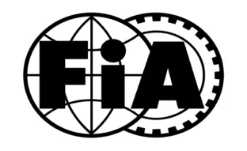
LISTE TECHNIQUE - HOMOLOGATION CARROSSERIES, CHASSIS, FREINS BODYWORK, BRAKES, CHASSIS HOMOLOGATION - TECHNICAL LIST
2025-2027 (Groupe 3)
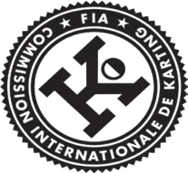
| Demandeur | Pays | Matériel | Marque | Modèle | Type | N° Homolog. |
|---|---|---|---|---|---|---|
| Applicant | ASN | Equipment | Make | Model | Type | Homolog. No. |
| AMV Racing Kart Snc | ITA | Brake | Filmax | FBM-01 | Group 3 - BRKR | 013-BRKR-80 ER01 |
| AMV Racing Kart Snc | ITA | Brake | AMV | SB-MINI | Group 3 - BRKR | 013-BRKR-40 |
| AMV Racing Kart Snc | ITA | Chassis | Bestkart | Mini | Group 3 | 013-CH-99 |
| Birel Art Srl | ITA | Bodywork | Freeline | Aero Mini - Side Bodywork | Group 3 | 007-BS-01 |
| Birel Art Srl | ITA | Brake | Freeline | RR Mini | Group 3 | 007-BRKR-10 |
| Birel Art Srl | ITA | Chassis | Birelart | C28 | Group 3 | 007-CH-92 |
| Birel Art Srl | ITA | Chassis | Synergy | Envy | Group 3 | 007-CH-80 |
| Breda Racing Srl | ITA | Chassis | Alonso Kart | A1 | Group 3 | 023-CH-12 |
| Breda Racing Srl | ITA | Chassis | KR | KR Mini | Group 3 | 023-CH-67 |
| CRG Spa | ITA | Brake | CRG | Ven12 | 2WP | 002-B2-99 |
| CRG Spa | ITA | Chassis | GP Racing | Blue Fox | Group 3 | 002-CH-09 |
| CRG Spa | ITA | Chassis | TGROUP | Black Mirror | Group 3 | 002-CH-18 |
| CRG Spa | ITA | Chassis | Maranello | MK2 | Group 3 | 002-CH-75 |
| CRG Spa | ITA | Chassis | DR | Mini 20 | Group 3 | 002-CH-27 |
| CRG Srl | ITA | Chassis | Monster Kart | Predator 28 | Group 3 | 002-CH-32 |
| DAM Srl | ITA | Chassis | Italcorse | ITC1 | Group 3 | 001-CH-72 |
| EL.ZET spol s r.o. | SVK | Brake | EL.ZET | LZF08 | 2WP | 055-B2-49 |
| EL.ZET spol s r.o. | SVK | Brake | EL.ZET | LZF14 | Group 3 - BRKR | 055-BRKR-14 |
| Emme Racing SAS | ITA | Brake | Italfreno | Avatar | 2WP | 009-B2-89 |
| Emme Racing SAS | ITA | Chassis | EKS Kart | Eagle | Group 3 | 009-CH-02 |
| Emme Racing SAS | ITA | Chassis | Croc Promotion | MC-04 | Group 3 | 009-CH-04 |
| Explorer Kart | CHN | Chassis | Explorer Kart | EA | Group 3 | 066-CH-10 |
| Filmax Service Srl | ITA | Chassis | New Drago | MM-01 | Group 3 | 068-CH-01 |
| Gpat Srls | ITA | Chassis | Pantano | P0 | Group 3 | 057-CH-30 |
| Haase Srl | ITA | Brake | Runner | Cadet | 2WP | 014-B2-32 |
| Haase Srl | ITA | Chassis | Haase - Corsa | Bomber - Skipper | Group 3 | 014-CH-65 |
| Hetschel GmbH & Co. KG | DEU | Brake | HRP | EvoX-M | 2WP | 025-B2-52 |
| Hetschel GmbH & Co. KG | DEU | Chassis | Mach1 | CA2 | Group 3 | 025-CH-99 |
| Innovative Products for Karting Srl | ITA | Brake | IPK | MKB.V2 | 2WP | 006-B2-17 |
| Innovative Products for Karting Srl | ITA | Chassis | IPK | Monster Evo | Group 3 | 006-CH-15 |
| Intrepid Driver Program Srl | ITA | Brake | Intrepid | R3-20 | 2WP | 015-B2-67 |
| Intrepid Driver Program Srl | ITA | Chassis | Intrepid | Speedy 02 | Group 3 | 015-CH-34 |
| KG Sas | ITA | Bodywork | KG | MK20 (Front Fairing) | Group 3 | 003-BF-19 |
| KG Sas | ITA | Bodywork | KG | MK20 (Front Panel) | Group 3 | 003-BP-75 |
| KG Sas | ITA | Bodywork | KG | Tris (Rear Protection) | Group 3 | 003-BR-29 |
| KG Sas | ITA | Bodywork | KG | Hulk (Rear Protection) | Group 3 | 003-BR-79 |
| KG Sas | ITA | Bodywork | KG | MK20 (Side Bodywork) | Group 3 | 003-BS-12 |
| KG Sas | ITA | Bodywork | KG | MK27 (Front Panel) | Group 3 | 003-BP-27 |
| K-Kart spol s.r.o. | SVK | Brake | K-KART | K-Kart KF | Group 3 - BRKR | 004-BRKR-88 |
| Lenzokart Srl | ITA | Brake | Lenzokart | LKF15 | BRKR | 033-BRKR-15 |
| Lenzokart Srl | ITA | Chassis | Lenzokart | Cayman | Group 3 | 033-CH-29 |
| Motor Point SAS | ITA | Chassis | Jesolo | JP Fly | Group 3 | 056-CH-28 |
| MS Kart sro | CZE | Chassis | MS Kart | MINI Blue Kite | Group 3 | 008-CH-54 |
| OTK Kart Group Srl | ITA | Bodywork | OTK | M8 (Front Fairing) | Group 3 | 012-BF-92 |
| OTK Kart Group Srl | ITA | Bodywork | OTK | M8 (Front Panel) | Group 3 | 012-BP-28 |
| OTK Kart Group Srl | ITA | Bodywork | OTK | M8 (Rear Protection) | Group 3 | 012-BR-93 |
| OTK Kart Group Srl | ITA | Bodywork | OTK | M8 (Side Bodywork) | Group 3 | 012-BS-77 |
| OTK Kart Group Srl | ITA | Bodywork | OTK | M9 (Front Fairing) | Group 3 | 012-BF-02 |
| OTK Kart Group Srl | ITA | Bodywork | OTK | M9 (Front Panel) | Group 3 | 012-BP-30 |
| OTK Kart Group Srl | ITA | Brake | OTK | BSM5 | 2WP | 012-B2-71 |
| OTK Kart Group Srl | ITA | Brake | OTK | BWM | Group 3 | 012-BRKR-60 |
| OTK Kart Group Srl | ITA | Chassis | Redspeed | Rookie | Group 3 | 012-CH-15 |
| OTK Kart Group Srl | ITA | Chassis | Exprit | Rookie | Group 3 | 012-CH-22 |
| OTK Kart Group Srl | ITA | Chassis | Kosmic | Rookie | Group 3 | 012-CH-54 |
| OTK Kart Group Srl | ITA | Chassis | OTK | Rookie | Group 3 | 012-CH-77 |
| OTK Kart Group Srl | ITA | Chassis | Tony Kart | Rookie | Group 3 | 012-CH-91 |
| OTK Kart Group Srl | ITA | Chassis | CS55 | Rookie | Group 3 | 012-CH-62 |
| OTK Kart Group Srl | ITA | Chassis | Gillard | Rookie | Group 3 | 012-CH-64 |
| OTK Kart Group Srl | ITA | Chassis | LN | Rookie | Group 3 | 012-CH-66 |
| Parolin Racing Kart Srl | ITA | Bodywork | Eurostar | Dynamica (Front Panel) | Group 3 | 017-BP-72 |
| Parolin Racing Kart Srl | ITA | Bodywork | Eurostar | Dynamica (Front Fairing) | Group 3 | 017-BF-77 |
| Parolin Racing Kart Srl | ITA | Bodywork | Eurostar | Dynamica (Side Bodywork) | Group 3 | 017-BS-91 |
| Parolin Racing Kart Srl | ITA | Bodywork | Eurostar | Dynamica (Rear Protection) | Group 3 | 017-BR-29 |
| Parolin Racing Kart Srl | ITA | Brake | AP | AP06 | 2WP | 017-B2-65 |
| Parolin Racing Kart Srl | ITA | Chassis | Energy Corse | Storm | Group 3 | 017-CH-75 |
| Parolin Racing Kart Srl | ITA | Chassis | Parolin | Opportunity | Group 3 | 017-CH-12 |
| Parolin Racing Kart Srl | ITA | Chassis | Falcon | Mini 6 | Group 3 | 017-CH-06 |
| Parolin Racing Kart Srl | ITA | Chassis | Henza Kart | HK200 | Group 3 | 017-CH-80 |
| Parolin Racing Kart Srl | ITA | Chassis | Parolin | Pioneer | Group 3 | 017-CH-82 |
| Parolin Racing Kart Srl | ITA | Chassis | Top Kart | Blue Eagle XX | Group 3 | 017-CH-84 |
| Parolin Racing Kart Srl | ITA | Bodywork | Eurostar | DY-EVO MINI (Front Panel) | Group 3 | 017-BP-20 |
| Parolin Racing Kart Srl | ITA | Bodywork | Eurostar | Dynamica EVO (Front Fairing) | Group 3 | 017-BF-50 |
| Righetti Ridolfi SPA | ITA | Bodywork | Righetti Ridolfi | Mini (Rear Protection) | Group 3 | 005-BR-88 |
| Righetti Ridolfi SPA | ITA | Brake | Righetti Ridolfi | Ma21 | 2WP | 005-B2-97 |
| Righetti Ridolfi SPA | ITA | Chassis | Righetti Ridolfi | Hurricane | Group 3 | 005-CH-11 |
| Sodikart | FRA | Brake | Tekneex | F15 | 2WP | 022-B2-14 |
| Sodikart | FRA | Chassis | Sodi | ASC950 | Group 3 | 022-CH-76 |
| Tbkart Srl | ITA | Chassis | TBKart | Monster | Group 3 | 020-CH-98 |
| Wildkart Srl | ITA | Brake | Wildkart | MK21 | Group 3 - BRKR | 019-BRKR-88 |
| Wildkart Srl | ITA | Chassis | Wildkart | K1 Race | Group 3 | 019-CH-88 |
| Wildkart Srl | ITA | Chassis | Scoop | M1 | Group 3 | 019-CH-11 |
COMMISSION INTERNATIONALE DE KARTING - FIA
LISTE TECHNIQUE - HOMOLOGATION PNEUS 2024-2026 2024-2026 TYRES HOMOLOGATION -TECHNICAL LIST
| Demandeur Applicant | Pays ASN | Matériel Equipment | Marque Make | Modèle Model | Type Type | N° Homolog. Homolog. No. |
| Cheng Shin Rubber Ind. Co. Ltd | TWN | Tyre | MAXXIS | MA01 (10X4.50-5) (MAP) | Slick Prime 5'' | 045-TP-02 |
| Cheng Shin Rubber Ind. Co. Ltd | TWN | Tyre | MAXXIS | MA01 (11X7.10-5) (MAP) | Slick Prime 5'' | 045-TP-04 |
| Cheng Shin Rubber Ind. Co. Ltd | TWN | Tyre | MAXXIS | MA01 (10X4.50-5) (MAO) | Slick Option 5'' | 045-TO-06 |
| Cheng Shin Rubber Ind. Co. Ltd | TWN | Tyre | MAXXIS | MA01 (11X7.10-5) (MAO) | Slick Option 5'' | 045-TO-08 |
| Cheng Shin Rubber Ind. Co. Ltd | TWN | Tyre | MAXXIS | MW11 (10X4.50-5) | Wet Weather 5'' | 045-TW-30 |
| Cheng Shin Rubber Ind. Co. Ltd | TWN | Tyre | MAXXIS | MW12 (11X6.00-5) | Wet Weather 5'' | 045-TW-32 |
| Cheng Shin Rubber Ind. Co. Ltd | TWN | Tyre | MAXXIS | MC01 (10X4.00-5) | Slick Mini 5'' | 045-TM-34 |
| Cheng Shin Rubber Ind. Co. Ltd | TWN | Tyre | MAXXIS | MC01 (11X5.00-5) | Slick Mini 5'' | 045-TM-36 |
| Cheng Shin Rubber Ind. Co. Ltd | TWN | Tyre | MAXXIS | MW21 (10x4.00-5) | Wet Weather Mini 5'' | 045-TMW-50 |
| Cheng Shin Rubber Ind. Co. Ltd | TWN | Tyre | MAXXIS | MW22 (11x5.00-5) | Wet Weather Mini 5'' | 045-TMW-52 |
| LeCont Srl | ITA | Tyre | LeCont | LPM (11X7.10-5) | Slick Prime 5'' | 053-TP-02 |
| LeCont Srl | ITA | Tyre | LeCont | LPM (10X4.50-5) | Slick Prime 5'' | 053-TP-04 |
| LeCont Srl | ITA | Tyre | LeCont | LOH (10X4.50-5) | Slick Option 5'' | 053-TO-06 |
| LeCont Srl | ITA | Tyre | LeCont | LOH (11X7.10-5) | Slick Option 5'' | 053-TO-08 |
| LeCont Srl | ITA | Tyre | LeCont | LMK (10X4.00-5) | Slick Mini 5'' | 053-TM-26 |
| LeCont Srl | ITA | Tyre | LeCont | LMK (11X5.00-5) | Slick Mini 5'' | 053-TM-28 |
| LeCont Srl | ITA | Tyre | LeCont | LWR (11X6.00-5) | Wet weather 5'' | 053-TW-22 |
| LeCont Srl | ITA | Tyre | LeCont | LWR (10X4.20-5) | Wet weather 5'' | 053-TW-24 |
| LeCont Srl | ITA | Tyre | LeCont | LMW (10X4.00-5) | Wet weather Mini 5'' | 053-TMW-40 |
| LeCont Srl | ITA | Tyre | LeCont | LMW (11X5.00-5) | Wet weather Mini 5'' | 053-TMW-42 |
| MG Indústria e Comércio S.A | BRA | Tyre | MG | SM2 10X4.60-5 | Slick Prime 5'' | 048-TP-02 |
| MG Indústria e Comércio S.A | BRA | Tyre | MG | SM2 11X7.10-5 | Slick Prime 5'' | 048-TP-04 |
| MG Indústria e Comércio S.A | BRA | Tyre | MG | SH2 10X4.60-5 | Slick Option 5'' | 048-TO-06 |
| MG Indústria e Comércio S.A | BRA | Tyre | MG | SH2 11X7.10-5 | Slick Option 5'' | 048-TO-08 |
| MG Indústria e Comércio S.A | BRA | Tyre | MG | SC2 10X4.00-5 | Slick Mini 5'' | 048-TM-14 |
| MG Indústria e Comércio S.A | BRA | Tyre | MG | SC2 11X5.00-5 | Slick Mini 5'' | 048-TM-16 |
| MG Indústria e Comércio S.A | BRA | Tyre | MG | SW2 10X4.20-5 | Wet weather 5'' | 048-TW-18 |
| MG Indústria e Comércio S.A | BRA | Tyre | MG | SW2 11X6.00-5 | Wet weather 5'' | 048-TW-20 |
| MG Indústria e Comércio S.A | BRA | Tyre | MG | SCW2 10X4.00-5 | Wet weather Mini 5'' | 048-TMW-30 |
| MG Indústria e Comércio S.A | BRA | Tyre | MG | SCW2 11X5.00-5 | Wet weather Mini 5'' | 048-TMW-32 |
| Reifenwerk Heidenau GmbH & Co. KG | DEU | Tyre | Mojo | D5 4.5/10.0-5 | Slick Prime 5'' | 050-TP-72 |
| Reifenwerk Heidenau GmbH & Co. KG | DEU | Tyre | Mojo | D5 7.1/11.0-5 | Slick Prime 5'' | 050-TP-45 |
| Reifenwerk Heidenau GmbH & Co. KG | DEU | Tyre | Mojo | D2XX 4.5/10.0-5 | Slick Option 5'' | 050-TO-52 |
| Reifenwerk Heidenau GmbH & Co. KG | DEU | Tyre | Mojo | D2XX 7.1/11.0-5 | Slick Option 5'' | 050-TO-25 |
| Reifenwerk Heidenau GmbH & Co. KG | DEU | Tyre | Mojo | C2 4.0/10.0-5 | Slick Mini 5'' | 050-TM-05 |
| Reifenwerk Heidenau GmbH & Co. KG | DEU | Tyre | Mojo | C2 5.0/11.0-5 | Slick Mini 5'' | 050-TM-15 |
| Reifenwerk Heidenau GmbH & Co. KG | DEU | Tyre | Mojo | W5 10X4.50-5 | Wet weather 5'' | 050-TW-34 |
| Reifenwerk Heidenau GmbH & Co. KG | DEU | Tyre | Mojo | W5 11X6.00-5 | Wet weather 5'' | 050-TW-77 |
| Reifenwerk Heidenau GmbH & Co. KG | DEU | Tyre | Mojo | CW 10X3.60-5 | Wet weather Mini 5'' | 050-TMW-98 |
| Reifenwerk Heidenau GmbH & Co. KG | DEU | Tyre | Mojo | CW 11X4.50-5 | Wet weather Mini 5'' | 050-TMW-34 |
| Shin Hung CO, LTD | KOR | Tyre | Shinko | 4.5X10.0-5 | Slick Option 5'' | 063-TO-02 |
| Shin Hung CO, LTD | KOR | Tyre | Shinko | 7.1X11.0-5 | Slick Option 5'' | 063-TO-04 |
| Shin Hung CO, LTD | KOR | Tyre | Shinko | 4.5X10.0-5 | Slick Prime 5'' | 063-TP-06 |
| Shin Hung CO, LTD | KOR | Tyre | Shinko | 7.1X11.0-5 | Slick Prime 5'' | 063-TP-08 |
| Shin Hung CO, LTD | KOR | Tyre | Shinko | 4.5X10.0-5 | Wet weather 5'' | 063-TW-10 |
| Shin Hung CO, LTD | KOR | Tyre | Shinko | 6.0X11.0-5 | Wet weather 5'' | 063-TW-12 |
| Sumitomo Rubber Industries Ltd | JPN | Tyre | Dunlop | Slick DH M 10X4.50-5 | Slick Prime 5'' | 051-TP-02 |
| Sumitomo Rubber Industries Ltd | JPN | Tyre | Dunlop | Slick DH M 11X7.10-5 | Slick Prime 5'' | 051-TP-04 |
| Sumitomo Rubber Industries Ltd | JPN | Tyre | Dunlop | Slick DH H 10X4.50-5 | Slick Option 5'' | 051-TO-06 |
| Sumitomo Rubber Industries Ltd | JPN | Tyre | Dunlop | Slick DH H 11X7.10-5 | Slick Option 5'' | 051-TO-08 |
| Sumitomo Rubber Industries Ltd | JPN | Tyre | Dunlop | KT14 W15 10X4.50-5 | Wet weather 5'' | 051-TW-30 |
| Sumitomo Rubber Industries Ltd | JPN | Tyre | Dunlop | KT14 W15 11X6.50-5 | Wet weather 5'' | 051-TW-32 |
| Vega Srl | ITA | Tyre | Vega | XM4 CIK PRIME 10x4.60-5 | Slick Prime 5'' | 047-TP-01 |
| Vega Srl | ITA | Tyre | Vega | XM4 CIK PRIME 11x7.10-5 | Slick Prime 5'' | 047-TP-02 |
| Vega Srl | ITA | Tyre | Vega | XH4 CIK OPTION 10x4.60-5 | Slick Option 5'' | 047-TO-12 |
| Vega Srl | ITA | Tyre | Vega | XH4 CIK OPTION 11x7.10-5 | Slick Option 5'' | 047-TO-14 |
| Vega Srl | ITA | Tyre | Vega | M1 CIK MINI 10x4.00-5 | Slick Mini 5'' | 047-TM-07 |
| Vega Srl | ITA | Tyre | Vega | M1 CIK MINI 11x5.00-5 | Slick Mini 5'' | 047-TM-69 |
| Vega Srl | ITA | Tyre | Vega | W6 CIK RAIN 10x4.20-5 | Wet weather 5'' | 047-TW-54 |
| Vega Srl | ITA | Tyre | Vega | W6 CIK RAIN 11x6.00-5 | Wet weather 5'' | 047-TW-69 |
| Vega Srl | ITA | Tyre | Vega | WM1 CIK MINI 10x4.00-5 | Wet weather Mini 5'' | 047-TMW-58 |
| Vega Srl | ITA | Tyre | Vega | WM1 CIK MINI 11x5.00-5 | Wet weather Mini 5'' | 047-TMW-69 |
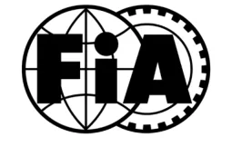
Commission Internationale de Karting - FIA
LUBRIFIANTS AGREES PAR LA CIK-FIA POUR 2026
CIK-FIA AGREED LUBRICANTS FOR 2026
Pays Fabricant Nom Référence Country Manufacturer Name Reference AUT Petromark Automotive Chemicals Rotax XPS Kart Tec 125322/01 AUT Petromark Automotive Chemicals XPS Castor Racing Oil 2T 125322/02 BEL Denicol Motor Oils N.V. Syn 100 2T 126068/01 BEL Wolf Oil Corporation N.V. Simtunol 16K 2-Takt Mischöl Synthetic Oil 125397/02 BEL Wolf Oil Corporation N.V. Champion Proracing HP 2T Ester + 125397/01 ESP Compania General de Lubricantes SA Global Racing Oil Kart 2 125374/01 FRA Igol Competition STS-R 125332/01 FRA Motul Kart Grand Prix 2T 125345/01 FRA Lexoil Europe Division 996 Evo 1 Premium 125345/01 FRA ELF HTX 976+ 125345/01 FRA ELF HTX 909 125351/01 FRA Yacco KVX Race 2T 125356/01 GER Enlive S.p.A ENI Kart 2T 125244/01 GER Liqui Moly GmbH Liqui Moly 2T Motoroil Race Tec 125364/01 GER Ravensberger Schmierstoffvertrieb GmbH Ravenol Racing Castor 2T 125381/01 GER Ravensberger Schmierstoffvertrieb GmbH Ravenol Racing Kart 2T 125381/02 GER Ravensberger Schmierstoffvertrieb GmbH Ravenol Racing Clean 2T 126031/01 GER Rowe Mineralölwerk GMbH Rowe Hightec Synt Race Kart 125375/01 GBR Fuchs Lubricants (UK) PLC Silkolene PRO 2 125331/01 GBR Fuchs Lubricants (UK) PLC Silkolene PRO KR2 125331/02 GBR Dartford Karting Ltd Kastor Racing M 125368/01 GBR BP Castrol Power 1 A747 125325/01 ITA Carb.One Srls Exced RSK Blue Print 125400/01 ITA Carb.One Srls Exced RSK Evolution 125400/02 ITA Carb.One Srls Exced RSK M 125400/03 ITA Maroil Srl Bardahl KXT Kart 125362/01 ITA Pakelo Racing 2TS K 125341/01 ITA Parts & Lubricants srl Dinoil Daytona Kart 2T 125363/02 ITA Solda’ Vladimiro SpA Wladoil Racing K 2T 125376/01 JPN Nutec Japan Co., Ltd Nutec NC-35M 125339/01 JPN Tribo Japan Cp, Ltd Ragno Spec-S 125366/01 JPN Wako Chemical CO. LTD Yamaha Formula KT 2CR 125318/01 NED Petromark Automotive Chemicals PM Xeramic Castor Evolution 2T 125349/01 NED Petromark Automotive Chemicals PM Xeramic Synmax Full Synthetic 2T 125349/02 NED Petromark Automotive Chemicals PM Xeramic Per4mance 2T 125349/03 NED Valvoline Europe Valvoline e Racing 2T 125382/01 NED Vrooam Powersports Lubricants Int. B.V. Vrooam Syncorse 2T 125380/03 NED Vrooam Powersports Lubricants Int. B.V. Vrooam Synworks 2T 125380/04 NED Vrooam Powersports Lubricants Int. B.V. Vrooam Castor Blend 2T 125380/01 NED Vrooam Powersports Lubricants Int. B.V. Vrooam Factory Racing 2T 125380/02 SVN Mapetrol Premium Karting WS2+ K 125353/02 SNV Mapetrol Premium Karting WS2+ M 125353/01
Copyright © 2026 by CIK-FIA. All rights reserved Dernière mise à jour/ Latest update: 11/2/2026
P.29２０２６年ジュニアカート選手権カレンダー
●ジュニア部門 （ラウンドシリーズ①）
| 開催日程 | 開催場所 | オーガナイザー | |
| 第1 戦 第2 戦 | 4 月18 日 ～19 日 | モビリティリゾートもてぎ北ショートコース (982m) 栃木県芳賀郡茂木町桧山120-1 TEL: 0285-64-0200 | ホンダモビリティランド株式会社 〒321-3597 栃木県芳賀郡茂木町桧山120-1 TEL: 0285-64-0200 |
| 第3 戦 第4 戦 | 5 月30 日 ～31 日 | 鈴鹿サーキット南コース (1,264m) 三重県鈴鹿市稲生町7992 TEL：059-378-3405 | 鈴鹿モータースポーツクラブ 〒510-0295 三重県鈴鹿市稲生町7992 TEL：059-378-3405 |
| 第5 戦 第6 戦 | 6 月27 日 ～28 日 | モビリティリゾートもてぎ北ショートコース (982m) 栃木県芳賀郡茂木町桧山120-1 TEL: 0285-64-0200 | ホンダモビリティランド株式会社 〒321-3597 栃木県芳賀郡茂木町桧山120-1 TEL: 0285-64-0200 |
| 第7 戦 第8 戦 | 8 月29 日 ～30 日 | オートパラダイス御殿場 小山町大御神サーキット (1,006m) 静岡県駿東郡小山町大御神922-8 TEL：0550-88-8246 | 有限会社サンアイプロジェクト 〒410-1308 静岡県駿東郡小山町大御神922-8 TEL：0550-88-8246 |
| 第9 戦 第10 戦 | 11 月14 日 ～15 日 | 鈴鹿サーキット南コース (1,264m) 三重県鈴鹿市稲生町7992 TEL：059-378-3405 | 鈴鹿モータースポーツクラブ 〒510-0295 三重県鈴鹿市稲生町7992 TEL：059-378-3405 |
※（全戦共催） GPR 〒460-0004 愛知県名古屋市中区正木 4-6-6 第13 フクマルビル701 問合せ先：info@gpr-race.com ●ジュニア部門 （ラウンドシリーズ②）
| 開催日程 | 開催場所 | オーガナイザー | |
| 第1 戦 第2 戦 | 3 月28 日 ～29 日 | 新東京サーキット (1,076m) 千葉県市原市引田字上二本松249 TEL: 0436-36-3139 | 株式会社新東京サーキット 〒290-0256 千葉県市原市引田字上二本松249 TEL: 0436-36-3139 |
| 第3 戦 第4 戦 | 4 月25 日 ～26 日 | スピードパーク新潟(1,045m) 新潟県胎内市松波1013－36 TEL: 0254-45-2900 | スピードパーク新潟 〒959-2600 新潟県胎内市松波1013－36 TEL: 0254-45-2900 |
| 第5 戦 第6 戦 | 5 月23 日 ～24 日 | 神戸スポーツサーキット (1,045m) 兵庫県神戸市西区伊川谷町布施畑917 TEL:078-974-1414 | 有限会社ナガオカート 〒651-2101 兵庫県神戸市西区伊川谷町布施畑917 TEL:078-974-1400 |
| 第7 戦 第8 戦 | 7 月25 日 ～26 日 | スポーツランドＳＵＧＯ西コース (984m) 宮城県柴田郡村田町菅生6-1 TEL: 0224-83-3116 | 菅生スポーツクラブ 〒989-1301 宮城県柴田郡村田町菅生6-1 TEL: 0224-83-3116 |
TEL: 0224-83-3116
P.30●ジュニアカデット部門 （ラウンドシリーズ①）
| 開催日程 | 開催場所 | オーガナイザー | |
| 第1 戦 第2 戦 | 4 月18 日 ～19 日 | モビリティリゾートもてぎ北ショートコース (982m) 栃木県芳賀郡茂木町桧山120-1 TEL: 0285-64-0200 | ホンダモビリティランド株式会社 〒321-3597 栃木県芳賀郡茂木町桧山120-1 TEL: 0285-64-0200 |
| 第3 戦 第4 戦 | 5 月30 日 ～31 日 | 鈴鹿サーキット南コース (1,264m) 三重県鈴鹿市稲生町7992 TEL：059-378-3405 | 鈴鹿モータースポーツクラブ 〒510-0295 三重県鈴鹿市稲生町7992 TEL：059-378-3405 |
| 第5 戦 第6 戦 | 6 月27 日 ～28 日 | モビリティリゾートもてぎ北ショートコース (982m) 栃木県芳賀郡茂木町桧山120-1 TEL: 0285-64-0200 | ホンダモビリティランド株式会社 〒321-3597 栃木県芳賀郡茂木町桧山120-1 TEL: 0285-64-0200 |
| 第7 戦 第8 戦 | 8 月29 日 ～30 日 | オートパラダイス御殿場 小山町大御神サーキット (1,006m) 静岡県駿東郡小山町大御神922-8 TEL：0550-88-8246 | 有限会社サンアイプロジェクト 〒410-1308 静岡県駿東郡小山町大御神922-8 TEL：0550-88-8246 |
| 第9 戦 第10 戦 | 11 月14 日 ～15 日 | 鈴鹿サーキット南コース (1,264m) 三重県鈴鹿市稲生町7992 TEL：059-378-3405 | 鈴鹿モータースポーツクラブ 〒510-0295 三重県鈴鹿市稲生町7992 TEL：059-378-3405 |
※（全戦共催） GPR 〒460-0004 愛知県名古屋市中区正木 4-6-6 第13フクマルビル701 問合せ先：info@gpr-race.com ●ジュニアカデット部門 （ラウンドシリーズ②）
| 開催日程 | 開催場所 | オーガナイザー | |
| 第1 戦 第2 戦 | 3 月28 日 ～29 日 | 新東京サーキット (1,076m) 千葉県市原市引田字上二本松249 TEL: 0436-36-3139 | 株式会社新東京サーキット 〒290-0256 千葉県市原市引田字上二本松249 TEL: 0436-36-3139 |
| 第3 戦 第4 戦 | 4 月25 日 ～26 日 | スピードパーク新潟(1,045m) 新潟県胎内市松波1013－36 TEL: 0254-45-2900 | スピードパーク新潟 〒959-2600 新潟県胎内市松波1013－36 TEL: 0254-45-2900 |
| 第5 戦 第6 戦 | 5 月23 日 ～24 日 | 神戸スポーツサーキット (1,045m) 兵庫県神戸市西区伊川谷町布施畑917 TEL:078-974-1414 | 有限会社ナガオカート 〒651-2101 兵庫県神戸市西区伊川谷町布施畑917 TEL:078-974-1400 |
| 第7 戦 第8 戦 | 7 月25 日 ～26 日 | スポーツランドＳＵＧＯ西コース (984m) 宮城県柴田郡村田町菅生6-1 TEL: 0224-83-3116 | 菅生スポーツクラブ 〒989-1301 宮城県柴田郡村田町菅生6-1 TEL: 0224-83-3116 |
| 第9 戦 第10 戦 | 9 月19 日 ～20 日 | モビリティリゾートもてぎ北ショートコース (982m) 栃木県芳賀郡茂木町桧山120-1 TEL: 0285-64-0200 | ホンダモビリティランド株式会社 〒321-3597 栃木県芳賀郡茂木町桧山120-1 TEL: 0285-64-0200 |
TEL: 0285-64-0200
P.31２０２６年地方カート選手権カレンダー
●ＦＳ－１２５部門・鈴鹿シリーズ
| No. | 開催日程 | 開催場所 | オーガナイザー |
|---|---|---|---|
| 第1 戦 第2 戦 第3 戦 第4 戦 第5 戦 | 3 月14 日～15 日 6 月20 日～21 日 8 月15 日～16 日 10月17日～18日 11月28日～29日 | 鈴鹿サーキット南コース (1,264m) 三重県鈴鹿市稲生町7992 TEL：059-378-3405 | 鈴鹿モータースポーツクラブ 〒510-0295 三重県鈴鹿市稲生町7992 TEL：059-378-3405 |
・もてぎシリーズ
| No. | 開催日程 | 開催場所 | オーガナイザー |
|---|---|---|---|
| 第1 戦 第2 戦 第3 戦 第4 戦 第5 戦 第6 戦 | 3 月7 日～8 日 5 月2 日～3 日 7 月18日～19 日 9 月19日～20 日 10月10日～11日 12月12日～13日 | モビリティリゾートもてぎ北ショートコース (982m) 栃木県芳賀郡茂木町桧山120-1 TEL: 0285-64-0200 | ホンダモビリティランド株式会社 〒321-3597 栃木県芳賀郡茂木町桧山120-1 TEL: 0285-64-0200 |
●ＦＰ－３部門・新潟シリーズ
| No. | 開催日程 | 開催場所 | オーガナイザー |
|---|---|---|---|
| 第1 戦 第2 戦 第3 戦 | 5月24日 6月28日 10月4日 | スピードパーク新潟 (1,049m) 新潟県胎内市松波1013-36 TEL: 0254-45-2900 | スピードパーク新潟 〒959-2600 新潟県胎内市松波1013-36 TEL: 0254-45-2900 |
TEL: 0254-45-2900 ※地方カート選手権については、２０２６年日本カート選手権および競技会特別規則を適用することとし、
地方カート選手権統一規則は定めない。
２０２６年ジュニアカート選手権コースシリーズカレンダー
●ジュニア部門・もてぎシリーズ
| No. | 開催日程 | 開催場所 | オーガナイザー |
|---|---|---|---|
| 第1 戦 第2 戦 第3 戦 第4 戦 第5 戦 第6 戦 | 3 月7 日～8 日 5 月2 日～3 日 7 月18日～19 日 9 月19日～20 日 10月10日～11日 12月12日～13日 | モビリティリゾートもてぎ北ショートコース (982m) 栃木県芳賀郡茂木町桧山120-1 TEL: 0285-64-0200 | ホンダモビリティランド株式会社 〒321-3597 栃木県芳賀郡茂木町桧山120-1 TEL: 0285-64-0200 |
P.32テクニカルディレクターの義務（役務）は、適用車両規
ジュニア、ジュニアカデット部門
則や車両検査に関する項目について、シリーズを通した独自の判断に基づく提言を競技長、レースディレクターおよび技術委員長に行ない、大会における適用車両規則や車両検査基準の平準化を図るものとする。ただし、テクニカルディレクターは、競技長が有するレース運営や判定に関わる最終的な判断を下す権限を有さない。第２条 競技会組織委員会および審査委員会
本選手権競技会は、一般社団法人日本自動車連盟（以下「Ｊ ＡＦ」という）の公認のもとにＦＩＡ国際モータースポーツ競技規則／国際カート規則およびその付則に準拠したＪＡＦ国内競技規則／ＪＡＦ国内カート競技規則およびその細則、２０２６年（以下「当該年」という。）日本カート選手権規定、本統一規則、および競技会特別規則に従って開催される。
特別規則書にて示す。第３条 競技会競技役員
第１章 競技会開催に関する事項第１条 開催日程、場所およびオーガナイザー１．特別規則書にて示す。２．レースディレクター１名をＪＡＦより派遣、またはオー
特別規則書にて示す。第４条 競技会事務局１．第１条に示してある各々のオーガナイザーとする。２．開催場所所在地および当日の事務局所在地は公式通知に
ガナイザーからの申請に基づき認定する場合がある。 レースディレクターは常時競技長と協議しながら役務を
て示す。第５条 競技の種別、区分と格式１．種目：スプリントレース２．区分：ジュニア部門
遂行する。 レースディレクターの義務（役務）は、大会期間中のレ
ース運営や判定に関する項目について、シリーズを通した独自の判断に基づく提言を競技長に行い、大会における競技運営および判定基準の平準化を図るものとする。ただし、レースディレクターはレース運営や判定に関する最終的な判断を下す権限を競技長に委譲する。１） 運営に携わる競技役員の配置や運営機器の配備状況、
ジュニアカデット部門３．格式：準国内格式※ジュニア部門／ジュニアカデット部門は、次の２つから構成される。
１）コースシリーズ： （１）１つまたは複数のカートコースにおいて１つのシリ
安全管理体制等を大会事務局より報告を受け、必要に応じて修正提案を行う。２） 全ての走行時間帯におけるレース管制、ミーティング、
ーズを構成する。この場合の呼称は、原則、開催されるカートコース名または当該地域名を付す。（２）１つのシリーズを構成する複数のコースの組み合わ
ブリーフィングは競技長と同席する。３） レースディレクターは、以下の項目についてＦＩＡ国
せは、原則、 「第４章ジュニア選手権第４９条１項地域区分」に限定される。（３）競技の構成：オーガナイザーが特別規則に定める。２）ラウンドシリーズ（１）全日本カート選手権ＯＫ部門、ＦＳ－１２５部門／
際モータースポーツ競技規則および本規則に従い、競技長に対し提案を行う。この場合、競技長はレースディレクターと協議して対応する。（１）タイムスケジュールの遵守または変更を行うこと。（２）公式練習を含む全てのセッションや決勝レースを中
ＦＰ－３部門併催とする 。（２）競技の構成：オーガナイザーが特別規則に定める。第６条 公式通知に関する規定
断し、再開の為のスタート手順の実施。（３）公式練習を含む全てのセッションや決勝レースで、
競技車両を停止させること。（４）公式練習を含む全てのセッションや決勝レースにお
本統一規則および特別規則に記載されていない競技運営に関する実施細目およびエントラント、ドライバー、ピット要員に対する指示事項は、公式通知によって示される。 公式通知は、開催期日の前日まで競技会事務局内に提示されるとともにエントリー申請書に記入してあるエントラントの連絡先に送付または通知する、あるいは大会公式ウェブサイト等に提示される。開催当日は開催場所の事務局設置場所に掲示される。
いて発生した違反行為に関する判定。（５）決勝レースのスタート手順と進行の実施。（６）競技車両の再検査、ドライバーの身体検査を求める
こと。３．テクニカルディレクター１名をＪＡＦより派遣、または
オーガナイザーからの申請に基づき認定する場合がある。 テクニカルディレクターは常時競技長、レースディレク
ターおよび技術委員長と協議しながら役務を遂行する。
P.33第７条 クレデンシャルの着用
第１０条 エントリー・フィーおよびピット登録料
特別規則書にて示す。第１１条 保険１．オーガナイザーの付保する保険とは別にドライバー９０
本競技会に関係する全ての者は、場内ではオーガナイザーが発行したクレデンシャルを着けなければならない。第８条 延期、中止または取止めおよび変更に関する事項
「カート競技会組織に関する規定」第６条に基づき、オーガナイザーは、競技会審査委員会の承認を得て競技会の一部あるいは全部を延期し、中止し、または取止めることができる。競技会の全部を中止し、あるいは２４時間以上延期する場合は、エントリー・フィーは保険料を除き全額返還される。但し天災地変の場合はこの限りでない。保険料は返還されない。
０万円、ピット要員１名４００万円以上のカート競技に有効な保険に加入していなければならない。２．オーガナイザーの付保する保険の内容（保険料、保険金、保険金支払の方法）については、特別規則書に示される。第１２条 エントリーの方法１．本選手権競技会にエントリーする者は、エントラントの統轄のもとにエントリーしなければならない。２．ピット要員はドライバー１名につき２名以内とする。第１３条 エントリーの資格１．エントラント：
なお、エントラントおよびドライバーはこれによって生じる損失についてオーガナイザーに抗議する権利を保有しない。さらにオーガナイザーは、審査委員会の承認を得てイベントの内容を変更する権限も、併せて保有するものとする。これに対する抗議は認めない。
当該年度有効なるエントラントライセンスの所持者２．ドライバーの出場資格：
第２章 競技会参加に関する事項第９条 エントリーの受付１．エントリーの受付期間
ジュニアカート選手権競技に出場するドライバーは、部門毎に以下の条件を満たしていること。なお、出場できるシリーズを重複することができる。１）ジュニア部門（１）ライセンス
１）エントリーの受付期間
競技会開催日２ヶ月前より３週間前まで。但し、オーガナイザー間の合意を条件に、ＪＡＦの承認のうえ、年間エントリーも可能とする。
ジュニアＢ、ジュニアＡ、国際Ｇライセンス所持者とする。（２）年齢制限
なお、年間エントリーの場合は、当該シリーズ第１戦開催前に係る手続きを完了すること。
１１歳（１１歳の誕生日を迎える当該年）以上１５歳未満の者。なお、当該年に満１４歳に達しても国際Ｆライセンスを取得しなければ、また、当該年に１５歳に達しても、一般ライセンスを取得しなければ、その年のジュニア選手権競技に出場することが認められる。２）ジュニアカデット部門（１）ライセンス
コースシリーズについては特別規則書にて示す。２）エントリーの受付
上記１）の期間、特別規則に従いエントリーの受付を行う。
ただし、郵送の場合は書留にて上記受付期間内の消印有効とする。３）受理または拒否の通知の発送日
競技会開催日の２週間前から開催当日を除き７日前までに、特別規則に従い発送または通知する。２．受付場所
ジュニアＢ、ジュニアＡ、国際Ｇライセンス所持者とする。（２）年齢制限
第１条に示してある各々のオーガナイザーとする。３．エントリーする際に必要なもの
８歳（８歳の誕生日を迎える当該年）以上１３歳未満の者。なお、当該年に１３歳に達しても、その年のジュニア選手権競技に出場することが認められる。第１４条 エントリーの受理と拒否１．オーガナイザーは、国内競技規則４－１９に基づき参加
１）参加申込書２）競技会参加に関する誓約書３）親権者または保護者の出場承諾書４）ピット要員登録申込書５）エントリー・フィー６）車両申請書７）その他、詳細は特別規則にて示す。
申込の拒否を行うことができ、かつその行為をもって最終の決定とする。この場合エントリー・フィーおよび保険料は全額返還される。２．エントリーの正式受理または拒否通知は、本統一規則第
P.34９条１．３）に示す。３．エントリーの正式受理の発表後参加を取り消した者に対
グリッドポジションは、最後尾（複数名の場合、最も遅く申告した者を最後尾とする）とする。２）再登録料（特別規則書にて示す）３．封印
してはエントリー・フィーを返還しない。第１５条 シャシー、エンジンおよびタイヤの登録
１）シリンダーヘッド・シリンダヘッドナットには車検の
競技に使用するシャシー、エンジンおよびタイヤは、車両申告書に登録済みのもののみとする。公式練習は登録したタイヤを使用すること。登録できる個数はオーガナイザーがＪ ＡＦに申請し、ＪＡＦの承認を以て決定し、特別規則に示す。
際の封印のための穴をそれぞれ１つ施さなければならない。２）車検時においてエンジンの封印が実施される。封印マークはＪＡＦ指定のものとし、封印後はエンジンの分解は行ってはならない。３）最初に行われる公式練習開始前までは、技術委員長の
なお、上記と同様の手続きにより特別規則で認められた場合、登録した以外のタイヤを公式練習で使用することができる。
承認のもとにエンジンの封印の解除、および再登録または再封印が認められる。４．エンジンにはＮｏ．刻印が打たれていなければならない。５．キャブレター
| ジュニア | ジュニアカデット | |
| シャシー | オーガナイザーからの 申請による | オーガナイザーからの 申請による |
| エンジン | 〃 | 〃 |
| タイヤ | 〃 | 〃 |
各シリーズの部門毎に指定されたエンジン適用車両規定に準ずる。
第１７条 カート
タイヤ〃〃
前条で規定する当該エンジンを搭載し、「ＪＡＦ国内カート競技車両規則」に合致する第１種競技車両で、かつ次の条件を満たさなければならない。１．ジュニア部門で使用するシャシーは、ＣＩＫ－ＦＩＡ公
第３章 エンジンおよびカートに関する事項第１６条 エンジン１．エンジン
認またはＪＡＦ公認を取得している製造者によって製造されたものとする。ジュニアカデット部門で使用するシャシーは、ボディワークを含み、「ＪＡＦ国内カート競技車両規則」第２９条に従い、ＪＡＦに申請されたものでなければならない。ただし、「ＪＡＦ国内カート競技車両規則」第５２条（Ｍｉｎｉ特別規定）に従い、ＣＩＫに公認されたものは使用することができる。また、車検時においてシャシーにＪＡＦ指定の封印が実施される。但し、最初に行われる公式練習開始時間前までは、技術委員長の承認のもとにシャシーの封印の解除、および再登録、再封印が認められる。
「ＪＡＦ国内カート競技車両規則」の第１種競技車両に限定し、使用されるエンジンは、以下の通りとする。 尚、各シリーズで使用するエンジン機種は各部門それぞれ１機種とする。 但し、シリーズの各々の部門毎にエンジン機種が異なることを認める。但し、各シリーズで認定されたオーガナイザー間で合意の上、使用されるエンジン機種が各部門で１種類に統一されること。
決定したエンジンは各シリーズ毎に特別規則書にて示す。１）ジュニア部門：
オーガナイザーによって指定されたパワーウエイトレシオ数値（ドライバー重量含む）が、4.0kg/ps から11.0kg/ps 以内のエンジン。（ＥＶは除く）２）ジュニアカデット部門：
登録済みシャシーが破損等した場合には、競技会審査委員会の承認のもとに、以下を条件に１競技会に１回変更（交換）することができる。なお、変更（交換）の申請は、各ヒートのスタート２０分前までとし、競技会事務局に提出すること。（１）変更（交換）後のヒートのグリッドポジションは、
オーガナイザーによって指定されたパワーウエイトレシオ数値（ドライバー重量含む）が、8.0kg/ps から13.0kg/ps 以内のエンジン。（ＥＶは除く）２．変更（交換）
最後尾（複数名の場合、最も遅く申告した者を最後尾とする）とする。（２）再登録料（特別規則書にて示す）２．カートは、前方、後方および側方から明瞭に識別できる
登録済みエンジンが故障、破損等した場合には、競技会審査委員会の承認のもとに、以下を条件に１競技会１回変更（交換）することができる。なお、変更（交換）の申請は、各ヒートのスタート２０分前までとし、競技会事務局に提出すること。１）最初に行われる公式練習開始後から決勝終了までの間に変更（交換）を行った場合、変更（交換）後のヒートの
よう、競技ナンバーを取り付けなければならない。３．ナンバープレートは前後に必備とする。その取り付け方および形状については「ＪＡＦ国内カート競技車両規則」第９条１．および第２８条による。側方のナンバーは最小高１２ｃｍとする。なお、前方にはフロントパネルを装着
P.35しなければならない。
トリビューション制とする。但し、コースシリーズには適用されない。１）各部門に使用できるタイヤは、ＪＡＦによって指定さ
ナンバープレートの色は次の通りとする。
| 部門 | ナンバープレートの色 | 文字の色 |
| ジュニア | 黄 | 黒 |
| ジュニアカデット | 黄 | 黒 |
れた単一製造者のＪＡＦ指定タイヤとし、次の通りとする。（１）銘柄、サイズ、コンパウンド
ジュニアカデット黄黒４．競技ナンバー
●ジュニア部門：・住友ゴム工業株式会社
１）前後の競技ナンバーは、ＪＡＦが指定したものを、検
査を受ける前に取り付けていなければならない。但し、コースシリーズについてはＪＡＦ指定としない。２）側方の競技ナンバーは、ＪＡＦが指定したものを、サ
＜ドライ用＞ ＳＬ２２またはＳＬ６シリーズのオーガナイザーで選択し、特別規則書にて示す。＜ウエット用＞ＳＬＷ２ ●ジュニアカデット部門：・住友ゴム工業株式会社
イドボックスパネル上の後輪側に、検査を受ける前に取り付けていなければならない。但し、コースシリーズについてはＪＡＦ指定としない。５．フロントバンパーは必備とし、その取り付け方について
＜ドライ用＞ ＳＬＪ ＜ウエット用＞ＳＬＷ２ コースシリーズについては、ＣＩＫ公認タイヤまたはＪ ＡＦ指定タイヤからオーガナイザーが選定し、特別規則書にて示す。
は「ＪＡＦ国内カート競技車両規則」第７条による。６．チェーンガードは必備としその取り付け方および形状に
ついては「ＪＡＦ国内カート競技車両規則」第１２条による。１）幅は３ｃｍ以上あり車両上方から見てチェーンが見え
ない状態であること。２）エンジン側スプロケットとアクスル側スプロケットを
（２）タイヤセット数１）技術委員長の承認のもとに、各１本のみの交換が認め
結ぶ線の上の部分を有効に覆っていること。３）車両側方より見てエンジン側スプロケットが見えない
られる。２）急激な天候の変化のあった場合には、競技会審査委員
状態であること。４）露出しているチェーンとスプロケットの上部と両側の
会の判断により、ウエットタイヤに限り、全選手に追加１セットの交換を認める場合がある。
有効な防護物を構成しており、少なくともリアアクスルの水平面下面まで伸びていること。７．雨天の場合、吸気消音器にカバー等を装着することがで
但し、交換は当該ドライバーの任意とする。３）タイヤはいかなる場合もグルービングを含み一切の加
きる。８．排気装置については「ＪＡＦ国内カート競技車両規則」
工は禁止される。４）タイヤにはオーガナイザーが指定したゼッケン番号を
第２２条による。ジュニア部門およびジュニアカデット部門で使用するマフラーは、当該エンジン指定のメーカー純正マフラーのみとする。９．音量規制については「ＪＡＦ国内カート競技車両規則」
技術委員によってタイヤの両側面に記入される。
文字の字体は幅３ｍｍ以上の字画で高さ３０ｍ ｍ以上とする。
| 部門 | 色 |
| ジュニア | 桃 |
| ジュニアカデット | 白 |
第２３条によるものとし、タイムトライアル時７８ｄＢ （Ａ）＋３ｄＢ（Ａ）を越えるものについてはタイムトライアルのみの時間に次の時間を加算し各ヒートへのペナルティは課されない。
ジュニアカデット白５）使用するタイヤのディストリビューションは、特別規
| 音量 | 加算時間 |
| ８１．５ｄＢ以上８２ｄＢ未満 | ０．２５秒 |
| ８２ｄＢ以上８２．５ｄＢ未満 | ０．５秒 |
| ８２．５ｄＢ以上８３ｄＢ未満 | １秒 |
| ８３ｄＢ以上８３．５ｄＢ未満 | ２秒 |
| ８３．５ｄＢ以上８４ｄＢ未満 | ４秒 |
則又は公式通知にて示される時間帯にオーガナイザーが指定した場所にて、審査委員１名の立ち会いのもと次の要領で行うものとし、詳細事項は特別規則書又は公式通知に示す。但し、ウエットタイヤおよび交換タイヤ１本は除外する。（１）各エントラントは、予めオーガナイザーから配付さ
８３．５ｄＢ以上８４ｄＢ未満４秒８４ｄＢを含み８４ｄＢを超えるドライバーはレースから除外される。１０．競技に使用するタイヤは次の条件に合致したものとす
れた受領書と引き換えに当該競技会で使用する本数の未使用タイヤ（パッケージ済のもの等（例）でタイヤ両側面には技術委員による封印済）が手渡される。
る。全部門で使用するタイヤは、下記５）に定めるディス
P.36（２）タイヤのリムへの取り付けは、各自のパドックまた
５．リアプロテクションの取り付け方については「ＪＡＦ国
内カート競技車両規則」第７条による。第１９条 重 量
はオーガナイザーによって指定された場所で行うこととする。（３）分配されたタイヤをパドック外へ持ち出すことは認
められない。１１．キャッチタンク
最低重量はシリーズ毎に特別規則書に示す。最低重量を満たすためバラストを積む必要がある時はすべて固形材料を用いボルト・ナットで取付けなければならない。第２０条 燃 料１．ガソリン：
走行中に燃料タンクからの燃料漏れを防止するために有効な装置を必備とする。
但し、燃料漏れを防止する装置がタンクキャップ等に装備されていることが仕様書等によって証明された場合にはそれを有効な装置とみなす。１２．競技中、車両にテレメトリー（データを交信する装置）
１）「ＪＡＦ国内カート競技車両規則」第２５条に則った
の装着を禁止する。技術委員に承認されたデータロガー（データ蓄積装置）およびタコメーターの使用は可能とする。但しデータロガー用トランスミッター（発信器）の設置場所はコース外とし、オーガナイザーによって承認された場所のみとする。テレコミュニケーション（遠隔通話装置）の使用は禁止する。これらの事項に対する抗議は一切受け付けられない。第１８条 ボディワーク１．ジュニア部門：
通常のガソリンスタンドのポンプから販売されている無鉛ガソリンを使用しなければならない。２）オーガナイザーは、ガソリンの銘柄および供給方法等
を指定する場合がある。この場合の詳細事項は、特別規則書又は公式通知に示す。２．エンジンオイル：
１）通常市販されている当該年度のＣＩＫ－ＦＩＡ承認オイルのみとし、それ以外の添加物の使用は一切認められない。２）オーガナイザーは、エンジンオイルの銘柄および供給
「ＪＡＦ国内カート競技車両規則」第９条に従った、Ｃ ＩＫ－ＦＩＡ公認（２００９－２０２１、２０１５－２０ ２１、２０１８－２０２１、２０２２－２０２４、２０２ ５－２０２７）サイドボックス、フロントパネル、リアプロテクションは、ステー等の公認部品を含み必備とする。
方法等を指定する場合がある。この場合の詳細事項は、特別規則書又は公式通知に示す。３．検査：ガソリンおよびエンジンオイルについて、予告なく抜き打ち検査（タンク内の燃料を採取する等）を行う場合がある。
尚、異なる銘柄またはモデルの構成部品による３つのボディワークによる組み合わせが認められる。但し、２つのサイドボックスはセットで共に使用すること。２．ジュニアカデット部門：
この場合、エントラントは、必ずその指示に従わなければならない。第２１条 車両検査１．「カート競技会参加に関する規定」第１２条に基づき、
「ＪＡＦ国内カート競技車両規則」第９条に従ったサイドボックス、フロントフェアリング、フロントパネルを必備とし、かつ同第２９条に従いＪＡＦに申請されたものでなければならない。ただし、「ＪＡＦ国内カート競技車両規則」第４６条（Ｍｉｎｉ特別規定）に従い、ＣＩＫに公認されたものは使用することができる。
車両検査が行われる。この際規則に不適合な部分がありながらも、技術委員に発見されなかった場合であっても承認を意味するものではなく、レース中にそれに関する疑義が生じた場合は旗の指示を受ける場合がある。２．車両検査の日時および場所は特別規則または公式通知に
尚、異なる銘柄またはモデルの構成部品による３つのボディワークによる組み合わせが認められる。但し、２つのサイドボックスはセットで共に使用すること。
よって示される。３．ドライバーは、車両検査に立ち会わなければならない。４．ドライバーの服装に関しては「カート競技会参加に関す
また、同第７条に従ったリアプロテクションを必備とする。３．サイドボックスはシャシーに最少２ヶ所で強固に固定さ
る規定」第１１条を適用する。また車両検査時においては、技術委員の点検を受けるものとする。レーシングスーツは皮製またはＣＩＫ－ＦＩＡ公認またはＪＡＦ公認のものとする。
れなければならない。その取り付け方は、「ＪＡＦ国内カート競技車両規則」に従うものとする。４．全ての部門の車両は、２０１５－２０２１、２０１８－
また、ヘルメットはＣＩＫ－ＦＩＡ技術規則（Article 7 Driver Safety Equipment 7.1) Helmets）に従ったものとする。５．各ヒート終了時には「ＪＡＦ国内カート競技車両規則」
２０２１、２０２２－２０２４または２０２５－２０２７のＣＩＫ－ＦＩＡ公認フロントフェアリング取付キットの使用が義務付けられる。
P.37に定める必備の部品が備わっていること。６．エンジンがＪＡＦ封印（ワイヤー封印）されているカテ
トライアルの時間は、オーガナイザーがＪＡＦに申請し、ＪＡＦの承認を以て決定し、特別規則に示す。２）出場台数が当該競技開催コースの最大出走台数の
ゴリーにおいて、 第２レース終了後に実施されるエンジン封印部分の再車検結果に基づくペナルティは、第１レースにも適用され、第１レースの正式結果は第２レースの正式結果と同時に発表される。なお、第１レース後に再車検実施の場合はこの限りではない。７．「カート競技会運営に関する規定」第３２条に基づき、
７０％（小数点以下四捨五入）を超える場合： ①１グループの出走台数が最大出走台数の７０％（小数点以下四捨五入）を超えず、かつ可能な限り同数となる複数のグループに分けられ、各グループタイムトライアルを行う。タイムトライアルの時間は、オーガナイザーがＪＡＦに申請し、ＪＡＦの承認を以て決定し、特別規則に示す。②グループ分けは、競技会当日の参加確認受付時に抽選
レース後オーガナイザーが指定したエリアで計量が行われる。
第４章 競技に関する事項第２２条 選手権競技の構成と方式
により決定し、ドライバーズブリーフィング開始時までに公式通知にて行う。３．ドライバーは、タイムトライアルとして設定された時間
両部門とも競技のレース数は、オーガナイザーが決定する。但し、各シリーズで認定されたオーガナイザー間で合意の上、レース数は各部門で統一されること。決定したレース数は、シリーズ毎に特別規則書にて示す。
内であれば任意に出走し、時間内であれば途中で停止した場合も再トライすることができる。但し、ピットに戻った場合は再トライすることはできない。４．タイムトライアル中の計測は、コースイン後にスタート
競技の方式は、オーガナイザーが決定する。各シリーズで認定されたオーガナイザー間で合意のうえ、各部門で統一され、ＪＡＦの承認の後、シリーズ毎に特別規則書にて示す。第２３条 ブリーフィング
ラインを通過したカートに対して全てのラップを計測し、ベストラップのタイムを採用する。５．上記４．で記録したベストラップが同タイムの場合は、当該ドライバーが記録したセカンドラップを採用する。更に同タイムとなった場合もこれに準ずる（サードラップ以降のタイム）。６．その他の方法で行う場合は公式通知に示す。（不可抗力
競技長は公式練習に先立ち、競技会審査委員会の出席を得て、エントラントおよびドライバーを対象としたブリーフィングを開催する。
により上記１．～５．が採用できない場合）第２６条 予選ヒート１．予選ヒートのグリッドポジション
すべてのエントラントおよびドライバーはブリーフィングに出席し、かつ出席表に署名もしくはオーガナイザーが示す方法で出席の確認を受けしなければならない。
ブリーフィングに遅刻、欠席した場合は、オーガナイザーが定める再ブリーフィング料を支払い、再ブリーフィングを受けなければならない。第２４条 公式練習
予選ヒートのグリッドポジションは、オーガナイザーが決定する。各シリーズで認定されたオーガナイザー間で合意のうえ、各部門で統一され、ＪＡＦの承認の後、シリーズ毎に特別規則書にて示す。２．予選のグループ分けと決勝出場者の決定
「カート競技会運営に関する規定」第２４条および第２４条に基づき、公式練習を行う。公式練習の時間は、オーガナイザーがＪＡＦに申請し、ＪＡＦの承認を以て決定し、特別規則に示す。但し、ピットアウトしスタートラインを通過する前に本コースで停止した場合も、公式練習に参加したものと認められる。第２５条 タイムトライアル１．すべてのドライバーは、タイムトライアルに参加しなけ
予選ヒートのグループ分けと決勝出場者の決定の方式は、オーガナイザーが決定する。各シリーズで認定されたオーガナイザー間で合意のうえ、各部門で統一され、ＪＡＦの承認の後、シリーズ毎に特別規則書にて示す。３．予選ヒートポイント予選ヒートポイントを設定する場合は、オーガナイザーが決定する。各シリーズで認定されたオーガナイザー間で合意のうえ、各部門で統一され、ＪＡＦの承認の後、シリーズ毎に特別規則書にて示す。４．予選ヒートの走行距離
ればならない。タイムトライアルに参加しない場合はタイムトライアル失格とする。２．タイムトライアルのグループ分け
予選ヒートの走行距離は、シリーズ毎にオーガナイザー間で合意のうえ設定距離（時間）を統一し、ＪＡＦの承認の後、特別規則書に記載する。５．青・赤旗の採用
１）出場台数が当該競技開催コースの最大出走台数の
７０％（小数点以下四捨五入）以内の場合：グループ分けはせずにタイムトライアルを行う。タイム
１）周回遅れのドライバーおよび周回遅れになろうとして
P.38アナウンスが放送される。２）所定の待機場所への進入はフォーメーションラップ５
いるドライバーに対し、［青・赤旗（２重対角線で区分）］が示され、予選ヒートから除外される。２）青・赤旗は競技長の指示によりコントロールライン上
分前に締め切られ、「３ｍｉｎ」ボードが示されるまでにカートが所定の場所に着いていなければならない。審査委員会が認めた場合を除き、５分前までに所定の待機場所に進入できなかったカートの出走は認められない。３）フォーメーションラップの開始は、以下のボード提示
で示される。旗の提示を受けたドライバーは、その周回で車両保管場所（パルクフェルメ）に移動し、ラップされた周回のコントロールライン通過までで、レースを終了したものとする。
車両保管場所（パルクフェルメ）に移動しない場合には、黒旗（当該ヒート失格）の対象となる。６．決勝進出台数は当該競技開催コースの最大出走台数とし、
に続いて行われる。これらのボードの提示は合図音とともに行われる。３ｍｉｎ １ｍｉｎ ３０ｓｅｃ
競技会毎に示す。第２７条 セカンドチャンスヒート
４）「３ｍｉｎ」ボードが示される時点で、ドライバーおよび当該ピット要員２名まで、オフィシャルを除くすべての者は当該エリアから離れなければならない。５）「１ｍｉｎ」ボードが示される時点で、ピット要員は
セカンドチャンスヒートを実施する場合、走行距離、周回数、グリッドポジションはオーガナイザーが決定する。各シリーズで認定されたオーガナイザー間で合意のうえ、各部門で統一され、ＪＡＦの承認の後、シリーズ毎に特別規則書にて示す。第２８条 決勝ヒート１．決勝の出場資格とグリッドポジション
当該エリアから離れなければならない。また「１ｍｉｎ」ボードが示された時点からフォーメーションラップ開始時までの間であればいつでも、ドライバーはエンジンを始動することができる。
「１ｍｉｎ」ボード提示後は、ピット要員による援助は一切認められず、ペナルティ対象となる場合がある。６）「３０ｓｅｃ」ボードが提示された３０秒後に担当オ
決勝ヒートの出場資格とグリッドポジションは、オーガナイザーが決定する。各シリーズで認定されたオーガナイザー間で合意のうえ、各部門で統一され、ＪＡＦの承認の後、シリーズ毎に特別規則書にて示す。２．決勝は着順に基づき、ペナルティ等を考慮したうえで最
フィシャルにより緑旗が提示され、カートはフォーメーションラップを開始する。７）エンジン不動等によりスタートが困難なドライバーは、両手または片手を頭上に高く上げ、合図をしなければならない。この場合、黄旗を持つ担当オフィシャルが当該カートの直近に立ち、フォーメーションラップ中のドライバーに警告する。
終順位が決定される｡ ３．決勝ヒートの走行距離は、シリーズ毎にオーガナイザー
間で合意のうえ設定距離（時間）を統一し、ＪＡＦの承認の後、特別規則書に記載する。４．青・赤旗の採用
担当オフィシャルは、フォーメーションラップ開始後、スターティンググリッド上に留まっている全てのカートを所定の位置に移動する。８）カートは、所定の位置にてピット要員の援助（介入）
１）周回遅れのドライバーおよび周回遅れになろうとして
いるドライバーに対し、［青・赤旗（２重対角線で区分）］が示され、決勝ヒートから除外される。２）青・赤旗は競技長の指示によりコントロールライン上
を受けエンジンを再始動することができる。次いで担当オフィシャルの指示に従いフォーメーションラップの隊列の最後尾に加わり出走できる場合がある。３．フォーメーションラップの周回数は、ブリーフィングの
で示される。旗の提示を受けたドライバーは、その周回で車両保管場所（パルクフェルメ）に移動し、ラップされた周回のコントロールライン通過までで、レースを終了したものとする。
際に示される。ブリーフィングで行われた指示に基づき、スタートが合図される前に、約１周のフォーメーションラップを行う。なお、これに先立ち、競技長の裁量により約１周のウォームアップのための走行を行うことができる。フォーメーションラップ中のドライバーは、２列の隊列で低速走行し、スタートラインへ向かう。スタートライン２５ｍ手前に引かれたイエローラインを越えるまでは加速してはならない。４．カートがスタートラインに接近する段階で赤信号が点灯
車両保管場所（パルクフェルメ）に移動しない場合には、黒旗（当該ヒート失格）の対象となる。第２９条 スタート進行
スタートは「カート競技会運営に関する規定」第２８条２．に基づくローリングスタートとし、次の事項が適用される。１．スタートの合図は灯火信号によって行われる。２．スタート進行は以下に従い行われる。
する。５．競技長は、フォーメーションが整いイエローライン前に
１）競技会特別規則書または公式通知により指定された時
加速をしていないと判断した場合、赤信号を消灯してスタ
間に所定の待機場所に着くこと。このとき合図音および
P.39ートの合図を行う。
ーションラップを含む）、スピン等で車両が停止した場合は、他を妨害することなく、後続車両通過後、またはコース委員の指示があり、自力で再発進できる場合にのみレースに復帰できるものとする。但し、カートから降車すること、および自力でカートを押してエンジンを始動することは認められない。復帰するための最小限の方向転換は認められる。６．公式練習、タイムトライアルおよびレース中（フォーメ
フォーメーションとイエローライン前での加速に問題がある場合、競技長は、フォーメーションラップが更に１周行われることを合図するために赤信号の灯火を続ける（消灯しない）。６．フォーメーションラップ中のドライバーはオーガナイザ
ーが定める区間での追越しおよび割込みが禁止され、これに違反した者は当該ヒ－ト失格となる。７．フォーメーションラップ中に隊列のペースを乱す者があ
ーションラップを含む）、リタイヤしたドライバーは、他を妨害することなく、後続車両通過後、またはコース委員の指示により、自分の車両を速やかに安全な場所に移動し、そのヒートが終了するまで「カート競技会参加に関する規定」第１１条に規定する装備一式を着用し、車両から離れてはならない。ただし、安全が確保できない場合は、オフィシャルの指示により退避させる場合がある。７．レース中は、コースを外れてショートカットすることは
った場合は 白・黒旗が示される、またはペナルティが課される場合がある。フロントローでそれが繰り返された場合は最後尾に繰り下げられる場合がある。８．フォーメーションラップ中に隊列から遅れた者が隊列の
前に出て待つような行為をしてはならない。９．フォーメーションラップ中に隊列から大きく遅れ、競技
長により指示（白地に赤のバッテンのボード表示）された者およびフォーメーションラップ中にピットインした者と周回遅れの者は最後尾に着かなければならない。１０．フォーメーションラップ中にコースをショートカット
認められず、当該行為はコースアウトとみなされ、ペナルティの対象とする。８．工具の持込みおよび工具を用いた修理等は、指定された
することは禁止される。１１．フォーメーションラップ中にポールまたはセカンドの
エリア（ピットおよびパドック）を除き、一切禁止される。但し、特別規則、公式通知またはブリーフィングで認められた場合はこの限りではない。９．競技中の燃料補給は禁止する。１０．レース着順１位の者がフィニッシュラインを通過後２
カートが停止または遅れてもローリングは続行される。その際は先頭にいる者にローリングのペースを保つ義務が生じる。１２．スタート後、先頭のカートが１周するまでにスタート
分以内に、カートが自力で同ラインを通過したものは、そのラップが加算される。完走者となるためには、チェッカーにかかわらず、規定周回数の１／２以上を完了しなければならない。１１．レースの順位は次の順序により、周回数の多い順に決
ラインを越えないカートは、そのヒートを出走することはできない。第３０条 その他競技に関する一般事項１．旗の信号については「カート競技会運営に関する規則」
定される。１）チェッカーを受けた完走者（規定周回数の１／２以上
第１３条に従う。但し、スタート合図は灯火信号を用いる。
を完了し、チェッカーを受けた者）。２）チェッカーを受けない完走者（規定周回数の１／２以
なお、本選手権競技では別に定める「ニュートラリゼーション」を予選ヒートおよび決勝ヒートに適用する。２．走路外走行等に対するペナルティは競技長の判断による。３．走路審判員が反則または妨害行為とみなしたものについ
上は走行したが、チェッカーを受けなかった者）。３）不完走者（チェッカーにかかわらず、規定周回数の１ ／２以上を走行していない者）。４）同周回数の場合は、その周回を先に完了（コントロー
ては、ペナルティが課される。更にその行為が、２回以上に及ぶときは失格とする。４．ドライバー・サインは次の通りとし、これを怠った者に
ルライン通過）した者を優先する。１２．レースは着順によるものとし、計時を行わない場合が
対しては、ペナルティが課せられることがある。１）コース上で停止した場合のサインは、両手をもしくは
ある。１３．パドックエリア、ウェイティンググリッドおよびオー
片手を頭上に高く上げる。２）ピットイン・ピットアウトのサインは片手を頭上に高
ガナイザーが指定したエリアにおけるエンジンの始動および作動については、カートが走行可能な装備等を具備し、リアタイヤが地面に接地した状態（リアタイヤが地面に常に接触した状態）でのみ認められる。
く上げる。３）黄色の山型を付した緑色旗（ミススタート）が示され
た場合は各自、片手を頭上に上げ、スピードダウンし、元のローリングスタート時のポジションに戻るものとする。４）スローダウンするドライバーは、片手を高く上げる。５．公式練習、タイムトライアルおよびレース中（フォーメ
ただし、オーガナイザーが指定した始動確認エリアにおいては、リアタイヤが地面に接地しない状態でエンジンの始動確認を行うことが認められる。１４．ジュニア選手権競技の成立とは、部門毎に５台以上の
P.40いてのみ表示することができる。
車両が出場しなければならない。５台に満たない場合は、その部門の選手権は成立しない。
レース中燃料の補給をしてはならない。第３４条 ピット要員
なお、この場合における出場とは、ヒートの出走の際に５台以上のカートがコントロールラインを越えることをいう。以上の条件を満たした時、ジュニア選手権競技は成立する。１５．各ヒートは、規定周回数の６０％以上が消化された場
「カート競技会参加に関する規定」第１８条に基づき、ピット要員の行為に関する最終的な責任はエントラントに帰属するが、レース中における場合は、ドライバーに直接統轄の責任があるものとする。ピット要員による規則の違反は、当該ドライバーに対する黒旗の指示となることがある。第３５条 ピット内
合、当該レース（ヒート）が成立する。１６．消火器携帯の義務について
各ドライバーは全ての競技会において、下記条件を備えた消火器を１本以上備えていなければならない。
また、ピット、パドックでの火気厳禁徹底に努めなければならない。【携帯用消火器の条件】
ピットにおける火気の使用を禁止する。燃料の容器は２０ ㍑以内の消防法に適合した金属製の携行缶でなければならない。第３６条 車両保管
■種 類：ＡＢＣ粉末タイプ■大きさ：４型（内容量１．２ｋｇ）以上■その他：消防法に適応しているメーカーが指定する使
用期限内であること１７．水分補給について
レース終了後の車両保管および車両検査は、次の通りとする。１．車両保管および再車両検査を行う。保管が解除になった
公式練習、タイムトライアル、各ヒート後の重量計測前に、容量６００㎖以内の飲料を摂取することを認める。但し、飲料摂取後の再重量計測は認められない。また、飲料は体調不良予防策であるため、これを体にかける（浴びる）行為は禁止とする。
カートは、エントラントが速やかに引取らなければならない。２．決勝ヒート終了後保管時間は３０分以上、所定の場所で行われる。３．技術委員長は、スタートしたすべての車両に関し検査を
なお、ピットクルーは飲料をパルクフェルメに持ち込む際、容量が６００㎖以内であることを車検員から確認を受けること。第３１条 審判員
行う権限を保有するものとする。技術委員長が検査を行う際は、エントラントもしくはその代理人が、責任をもって車両の分解および組立てを行わなければならない。
但し、関係役員、エントラントおよびドライバー以外は検査に立ち会うことはできない。
１．国内競技規則１０－２０に基づく審判員の判定事項は、
本統一規則に関する事項とする。２．審判員の氏名は、公式プログラムまたは公式通知で示
上記に対する違反は、競技長によって勧告され、審査委員会によりペナルティが課せられる場合がある。
される。
第６章 ペナルティに関する事項第３７条 ペナルティ１．ペナルティは次の５種がある。
第５章 ピットに関する事項第３２条 ピットイン
１）警告２）罰金３）タイムペナルティ４）ラップペナルティ５）失格（当該タイムトライアル、ヒート、またはレース
ピットインする場合はピットロードを徐行しなければならず、かつ必ずピットストップし、エンジンを停止しなければならない。これに違反した場合は当該ヒート失格となる。第３３条 ピットでの作業
の失格）２．警告はその必要ありと認められた軽反則に対して発せら
ピットは指定された場所を使用しなければならない（競技長から指示があった場合を除く）。またピット内で作業し得るものは当該部門に出場しているドライバーとピット要員のみとし、ピット要員は指定されたクレデンシャルを装着しなければならない。走行中のドライバーに対してピット・サインを送る場合は、ピット要員に限り指定されたエリア内にお
れる。３．罰金は成績に対するペナルティには至らない違反に適用される。４．タイムペナルティは失格には至らない違反に適用される。
P.41５．ラップペナルティは、失格には至らない違反に適用され
る。６．失格は次の反則行為に課せられる。
１）規則に反してまたは不当に得たアドバンテージ。２）故意に自己または他人の安全を省みることなく行う危
険行為。３）与えられたオフィシャル指示を故意に無視した際。４）与えられたフラッグサインの無視。＜ペナルティの例＞ （１）エントリーの遅れ（オーガナイザーが認めた場合、但
し２週間前まで）⇒遅延賠償（事務局手数料）（２）当日受付確認の遅れ（オーガナイザーが認めた場合、
但し公式練習まで）⇒タイムトライアルに１秒加算（３）車検の遅れ（オーガナイザーが認めた場合、但し公式
練習開始まで）⇒タイムトライアルに１秒加算以降本規則第４９条による。（４）重量違反
⇒当該タイムトライアル、ヒートの失格（５）燃料違反
⇒レース失格（６）服装違反（車検時に判明した場合）
⇒当該タイムトライアル、ヒートの失格。（７）各ヒート終了時に国内カート競技車両規則に定める必
備の部品が脱落の場合⇒当該ヒート失格⇒レース失格（８）公式練習に参加しなかった場合
⇒レース失格（９）フォーメーションラップ中の指定区間での追越し、割
込み違反⇒当該ヒート失格（１０）フォーメーションラップ中に隊列のペースを乱した
場合⇒当該ヒートの結果に１０秒加算。同行為をフロントローが繰り返した場合⇒最後尾に繰り下げ（１１）スタート時のフライング
⇒当該ヒートの結果に１０秒加算。（１２）プッシング、極度のブロッキング
⇒当該タイムトライアル、ヒートの結果に１０秒加算。同行為が著しい場合⇒当該ヒート失格（１３）ショートカットとなるコースアウト
⇒１周減算（１４）黄旗時の追い抜き（公式練習、タイムトライアル）
⇒タイムトライアルで当該ドライバーが達成したベスト
ラップタイム、セカンドラップタイムおよびサードラップタイムを抹消。（１５）黄旗時の追い抜き（予選ヒート、決勝ヒート）⇒１周減算（１６）黒旗の無視⇒レース失格（１７）オレンジディスクのある黒旗の無視⇒当該ヒート失格（１８）レース中のコース内での他者の援助（メカニックの立ち入り援助を含む）⇒当該ヒート失格公式練習の場合はタイムトライアルに４秒加算（１９）工具携帯走行⇒レース失格（２０）ピットロード徐行違反⇒当該ヒート失格（２１）指定エリア（ピット、パドック）以外で作業した場合⇒当該ヒート失格（２２）ピット要員のオフィシャル指示に対する違反⇒当該ドライバーのレース失格（２３）エンジン始動・作動違反⇒警告または相応の罰則（２４）コース上に停止し、コース委員の指示に従わなかった場合、またコース委員の指示に従わずにエンジンを再始動した場合⇒当該ヒート失格（２５）公式練習およびタイムトライアルを除き、チェッカー後フィニッシュラインを通過したカートのフロントフェアリングが正しい装着状態でなかった場合⇒当該ヒートの結果に５秒加算。（２６）フロントフェアリング装着に関する不正行為
⇒レース失格（２７）これらを含みその他のペナルティについては、特別規則書または公式通知等にて通知もしくは競技長によって勧告され、審査委員会により課される。
第７章 抗議に関する事項第３８条 抗議の提出１．「ＪＡＦ国内カート競技規則」第４０条に基づき、書面をもって抗議料を添付の上、エントラントより競技長に提出するものとする。２．エントラント、または当該エントラントが文書で正式に指名した代理人のみが抗議権を有する。３．「ＪＡＦ国内競技規則」１０－２０に従ってなされた審判員の判定、計時装置および音量測定結果、第３８条（２６）および（２７）により課されたペナルティに対する抗議は
P.42走者、失格者および不出走者には与えられない。
認められない。４．提出された抗議により再車検等を実施し、その抗議が成
ただし、第４２条１．に基づき予選ヒートの結果により決定された場合、下表ａの得点は予選ヒート出走者のみに与えられ、不完走者、失格者および不出走者には与えられない。（表ａ）
立した場合には再車検等に要した費用ならびに分解組み立ての費用は、被抗議者であるエントラントまたはドライバーの負担とし、これと反対に当該車両等が規則通りのものであることが判明した場合は抗議提出者がそれらの費用を負担しなければならず、費用の算定については技術委員長に委ねられる。第３９条 抗議提出の時間制限１．技術委員または車両検査委員の決定に対する抗議は、決
| 順位 | 1 位 | 2 位 | 3 位 | 4 位 | 5 位 | 6 位 | 7 位 | 8 位 | 9 位 | 10 位 |
| 得点 | 25 点 | 22 点 | 20 点 | 18 点 | 16 点 | 15 点 | 14 点 | 13 点 | 12 点 | 11 点 |
| 順位 | 11 位 | 12 位 | 13 位 | 14 位 | 15 位 | 16 位 | 17 位 | 18 位 | 19 位 | 20 位 |
| 得点 | 10 点 | 9 点 | 8 点 | 7 点 | 6 点 | 5 点 | 4 点 | 3 点 | 2 点 | 1 点 |
定直後とする。２．競技中の過失または反則に対する抗議は、その競技の終
1点但し、競技会出場台数（予選ヒート出走台数）に応じて下表ｂの通り得点の対象となる順位が制限される。（表ｂ）
了後３０分以内とする。３．競技の成績に関する抗議は、その発表後３０分以内とす
る。第４０条 抗議料
| 出場台数 | 得点対象順位 | 出場台数 | 得点対象順位 |
| ４０台以上 | ２０位まで | ２２～２３台 | １１位まで |
| ３８～３９台 | １９位まで | ２０～２１台 | １０位まで |
| ３６～３７台 | １８位まで | １８～１９台 | ９位まで |
| ３４～３５台 | １７位まで | １６～１７台 | ８位まで |
| ３２～３３台 | １６位まで | １４～１５台 | ７位まで |
| ３０～３１台 | １５位まで | １２～１３台 | ６位まで |
| ２８～２９台 | １４位まで | １０～１１台 | ５位まで |
| ２６～２７台 | １３位まで | ８～ ９台 | ４位まで |
| ２４～２５台 | １２位まで | ５～ ７台 | ３位まで |
２１，２００円
第８章 成績および賞典に関する事項第４１条 成績および賞典１．決勝ヒートの結果により決定する。
ただし、第３０条１５．に示すジュニア選手権競技の成立要件を満たしたうえで、荒天等により決勝ヒートが実施されなかった場合は、予選ヒートの結果により決定される。２．賞典はドライバーに対して行われる。３．競技会表彰の儀典（１）優勝者への賞典授与は、ＪＡＦ会長あるいは大会会長
２４～２５台１２位まで５～ ７台３位まで※当該年の日本カート選手権規定第６条および第５０条による。
（または名誉会長）が行うものとする。いずれも参加不可能な場合は、オーガナイザー代表が行うこと。（２）２位および３位の賞典授与は、上記（１）で授与者と
第１０章 広告に関する事項第４３条 広 告
なっている場合を除きオーガナイザー代表が行うものとする。（３）諸事情により、上記（１）および／または（２）が不
ナンバープレートに広告を表示することは認められない。その他の広告については、オーガナイザーは、次のものに関し抹消する権限を有し、かつドライバーはこれを拒否することができない。１．公序良俗に反するもの。２．政治・宗教に関連したもの。３．本競技会に関係するスポンサーと競合するもの。
可能な場は、組織委員長が適切な代行者を選出すること。
また、上記（１）、（２）以外の章典授与がある場合も同様とする。
なおこの場合、競技会審査委員は除かれる。４．モータースポーツ表彰式への出席
選手権保持者および上位６位までの入賞者は、当該年のＪＡＦモータースポーツ表彰式に出席すること。
第１１章 その他一般事項第４４条 エントラントおよびドライバーの遵守事項１．エントラントは、自己の参加に係わるすべての者に、す
第９章 得点第４２条 得点基準
べての法規および規則を遵守させる責任を有する。２．エントラント、ドライバーおよびピット要員は本統一規
本選手権競技会のドライバーに与えられる得点は下表ａを適用する。得点は決勝ヒートの完走者にのみ与えられ不完
則の下で開催される競技会中に生じた事態について、本連
P.43盟ならびにその所属員および競技役員に対していかなる責任も追及しないこと。３．エントラントおよびドライバー等のチーム関係者は、オ
ジュニアカート選手権ジュニア部門／
ジュニアカデット部門適用車両規定
ーガナイザーまたは審査委員会によって事情聴取を受けた場合は、指示があるまで会場を離れないこと。４．指定された場所以外での喫煙は禁止される。５．競技期間中に競技開催コースにおいて、エントラント、
※ジュニア選手権ラウンドシリーズ①およびコースシリー
ズにおける適用車両規則は、各競技会特別規則書による。１ エンジンは日本国内仕様のＫＴ１００ＳＥＣとし、改造
ドライバーおよびピット要員が飲酒することは禁止される。６．エントラント、ドライバーおよびピット要員が、スポー
は一切禁止され市販状態とする。但し、カーボンの除去やキズ修正は研磨とみなされない限りの範囲で認められる。型式は、7YU型に限られる。２ エンジン改造禁止対象部品
ツマンらしからぬ行為、不謹慎な言葉遣い、あるいは競技を妨害する行為をとった場合、当該競技会失格とする。第４５条 コースへの立ち入り１．競技会特別規則の組織図に予定されている競技役員およ
シリンダーヘッド、シリンダーボディー、シリンダーヘッドガスケット、シリンダーガスケット、ピストンピン、ピストンピンクリップ、コンロッド、ベアリング類、クランク、クランクピン、オイルシール、クランクケース、ピストン、ピストンリング、プラグコードクラッチは、組付け後、油脂類は速やかに除去され、またいかなる物の塗布、付加等は禁止する。また、クラッチのドライブスプロケットは、219×10T または11Tの「フリーラインSL」の刻印が入っているものに限り使用可とする。（１）コンロッドは下記パーツＮｏ.の物に限る。
びＡＳＮのみがコースに立ち入る権利を有する。２．プレス代表者は、オーガナイザーに対し特に申請し、許
可を得た場合以外はコースに立ち入ることはできない。更に競技役員によって与えられた指示に従わなければならない。第４６条 誓約書の署名
エントラント、ドライバー、ピット要員は参加申込用紙に記載された誓約文に署名捺印しなければならない。第４７条 本統一規則の解釈
7F6-11651-00、7F6-11651-01、7F6-11651-02 （２）ボアサイズは５２．６１ｍｍまで可とし、ピストン及
本統一規則並びに競技の細則に関する解釈に疑義が生じた場合は、審査委員会の決定を最終的なものとみなす。第４８条 本統一規則の違反１．本統一規則に対する違反の罰則は審査委員会の決定によ
びリングのオーバーサイズ純正品への変更が認められる。（３）ピストンはＫＴ１００ＦＰ用（7YG）、ＫＴ１００Ｓ
り宣告される。２．日本カート選手権競技に適用される規則に違反した者に
Ｐ用（J67）の使用が認められる。（４）シリンダーボディーは側面に、縦１０ｍｍ横１６ｍｍ
対し、ＪＡＦは罰則を課す場合がある。３．年齢、ライセンス等、出場資格に制限のある日本カート
の座及びドライブ側に「7ET」、マグネット側に「Y3」または「Y4」の浮き文字がある物とする。（５）スキッシュエリアの規定
選手権競技で、その資格に違反してエントリーしたことが競技会開始後に判明したドライバーについて、ＪＡＦは当該年度の選手権の全得点を無効とする場合がある。第４９条 本統一規則の施行ならびに記載されていない事項１．本統一規則は当該年の１月１日より施行する。２．本統一規則に記載されていない事項については、ＦＩＡ
シリンダーヘッドガスケットはヤマハ純正品： 7ET-11181-10またはＳＬＯ調整用ガスケット、銅製で０．０５ｍｍ厚、０．１ｍｍ厚、０．２ｍｍ厚の３種いずれかを使用。枚数や厚みの規定はないが、φ３．０ｍｍ以上のハンダを使用し、ドライブ側と電気側の両サイドのスキッシュエリア数値２ヶ所を計測し、その潰れた数値（ハンダの厚み）の合計が４．５ｍｍ以上であること。（６）シリンダーヘッドはＹＡＭＡＨＡの浮き文字があり、
国際モータースポーツ競技規則と国際カート規則、それに準拠したＪＡＦ国内競技規則、ＪＡＦ国内カート競技規則とその細則に準拠する。３．本統一規則発行後、ＪＡＦにおいて決定された事項は、
改造防止のフライス加工を追加した物に限る。（７）クランクケースは7YU打刻のものに限られる。但し、
すべての規則に優先する。
部品販売品については同仕様のものとする。
以上
P.44（３）ジョイントキャブレター、マニホールド、ジョイント
（８）クランクシャフトはＫＴ用（7YA・7YB・7YT・7YP）
とＫＴ１００ＦＰ用（7YG）およびＫＴ１００ＳＰ用（J67）のみとする。ＫＴ用、ＳＰ用のクランクシャフト大端ベアリングおよびクランクサイドベアリングの使用が認められる。《使用可能部品》クランク2： J67-11422-00,7YP-11422-00,7YP-11422-01クランクシャフトアセンブリ： J67-11400-00,7YP-11400-00,7YP- 11400-01 （９）クランクは大端規制方式に限る。（１０）オイルシールは、クランクケース面より１ｍｍ以上
エアクリーナーは下記の部品番号の物とし、改造は一切禁止される。ジョイントキャブレター（ジュニア）（黒色：787-13586-01、787-13586-02）26.0㎜公差±０．５ｍｍ ジョイントキャブレター（カデット）（黒色：7YU-13586-09、7YU-13586-08）14.5㎜
公差＋０ｍｍ
マニホールド 7YA-13585-00ジョイントエアクリーナー 7YF-14453-03 ４ 点火系統
内側に入り込んでいないこと。（１１）クラッチボディの外径は81.5㎜以上とする。測定に
ついては、シュー残量が一番多い部分からクラッチボディの中心を通り、対角側シューへの寸法を3箇所計測し、3箇所全て81.5㎜以上でなくてはならない。
改造は一切禁止され市販状態とする。点火方式はTCIとし7ET-85510-01（ステーターとTCIユニットが一体式）に限る。
※Tマーク/Eマークのある面は製造時に寸法精度維持の為、表面加工を行い出荷されている場合がある。５ 排気系統改造禁止部品
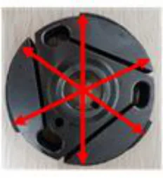
マフラー本体は CIKまたはJAFの刻印がある7YA 型とする。
マフラーコンプリート(7YA-14701-00-98または7YA-14701-10)・サイレンサーアセンブリー(7YA-14750-09)の組合せとし、改造は一切禁止され市販状態とする。エキゾーストパイプは7YT- 14610-00または7YU-14610-00。溶接、加工の入ったものは使用禁止とする。また、排気センサーの取付けは可。センサーを取り付けるための溶接は認められる。その他ジョイントエキゾースト(ジャバラ)本体の内径に変化のあるものは禁止する。ジョイントエキゾースト（ジャバラ）に消音や保護のためのプロテクターや保護材の取り付けは認められる。なお、エギゾーストガスケット及びジャバラは純正部品以外の使用が認められる。６ プラグは一般市販状態のネジ山長１９ｍｍ以下のものに
３ 吸気系統改造禁止対象部品
キャブレターアッセンブリ、キャブレターガスケット、ジョイントキャブレター、マニホールド、ジョイントエアクリーナー（１）キャブレターはWB3A、WB21またはWB33でなけれ
ばならず改造は一切禁止される。また、チョークレバーを取り外し、穴を埋めることは認められる。但し、キャブレター部品について相互交換及びヤマハ純正部品との交換は認められる。（２）ヤマハ純正吸気消音器７YA-14410-01を必備とする
（取付部品を含む）。［参考］取付部寸法
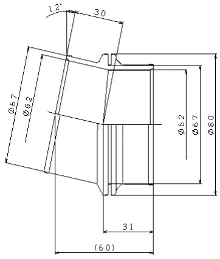
限る。プラグワッシャーも含めて市販状態とし、ネジ山長の変更禁止。７ その他純正部品以外の使用が認められる物は以下の通り。プラグ、エギゾーストジョイント（ジャバラ）、エギゾーストガスケット、ボルト／ナット（キャブレターインレット部品を除く）、ワッシャー、スプリング、
P.45ＣＩＫ－ＦＩＡ公認フロントフェアリング取り付け方式
キー（ローターキー除く）ブラケット、ワイヤー、ホース、ホースクリップ、バンド８ ジュニアカデット部門のドライタイヤに使用できる
ホイールは、リムの内側の寸法でフロント最大１２０ ｍｍ、リヤ最大１５０ｍｍとする（公差＋１ｍｍ）９ ジュニアカデット部門のリアプロテクションは、下記
考）」を満たす一般市販品とする。１０ ボディワーク
「２０２６年ＪＡＦ国内カート競技車両規則抜粋（参
ジュニア部門のボディワークは、ＯＫ部門適用車両規定の２ボディワークを適用する。ジュニアカデット部門のボディワークは、２０１５－２ ０２１、２０１８－２０２１、２０２２－２０２４または２０２５－２０２７のＣＩＫ－ＦＩＡ公認フロントフェアリング取付キットの使用を適用する。※追加導風ダクトは禁止とする（ただし、ブレーキダクトは認める）。※なお、本適用車両規則について、ＪＡＦは年度途中においても事前予告をもって変更する権利を留保する。
Ａ…この領域にはいかなる部品も（例えばネジであっても）許されない。
以上
Ｂ…フッククランプは工具を用いることなく手で開け閉めできること。
２０２６年ＪＡＦ国内カート競技車両規則（抜粋）第２章 一般規定第７条 バンパー５．リアプロテクション１３）如何なる状況下においても、リアプロテクションは、
フロントフェアリング取付キットを使用してフェアリングをカートに取り付けることのみが認められる。他の手段は認められない。フロントフェアリングは、自由にシャシーの方向へ後退できなければならず、その動きを制限するような部品による妨げがあってもならない。フロントバンパー（上下パイプ）はシャシーに強固に結合され、表面が平坦でなければならない。フロントバンパーの摩擦を最大化するようないかなる機械加工やその他の作業は厳重に禁止される。
リアホイール水平面からはみ出してはならない。
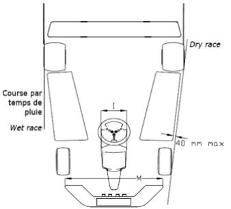
フロントバンパー（上下パイプ）とフロントフェアリングの間隔は、如何なる時も全ての箇所において最少２７ｍｍなければならない。フロントフェアリング取付キットの定義１．フロントフェアリング用取付具一式（２点＋８本のネジ）２．フロントバンパーサポート（２つのハーフシェル＋２本
２０１５－２０２１／２０１８－２０２１／
のネジ）３．調整可能なフッククランプ（２点、金属製のこと）下記の各部品にＣＩＫロゴおよび公認番号の浮き彫りがあること。１．フロントフェアリング用取付具一式（２点はプラスチッ
２０２２－２０２４／２０２５－２０２７
ク製のこと）２．フロントバンパーサポート（２つのハーフシェルはプラスチック製のこと）
P.46＜技術図面Ｎｏ.２．２．１＞
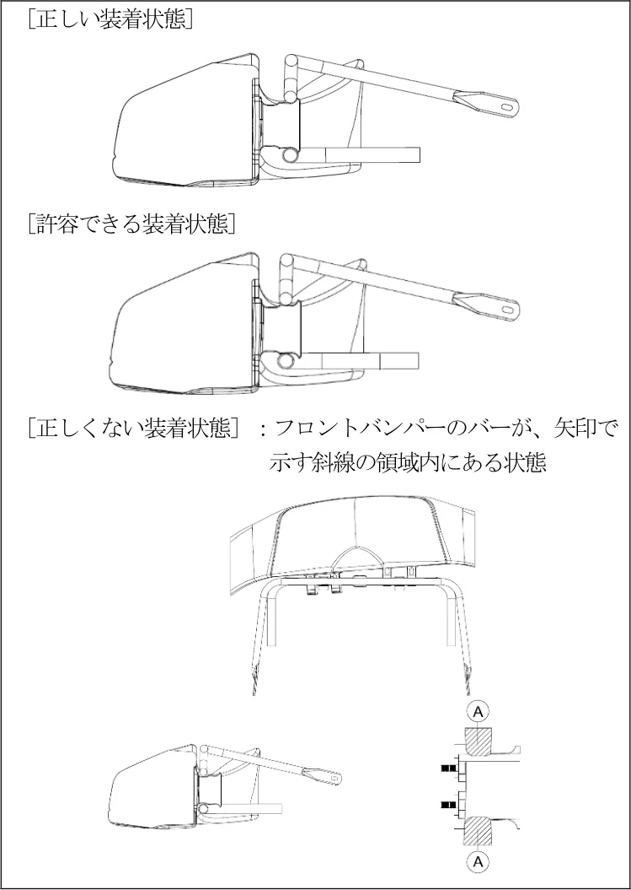